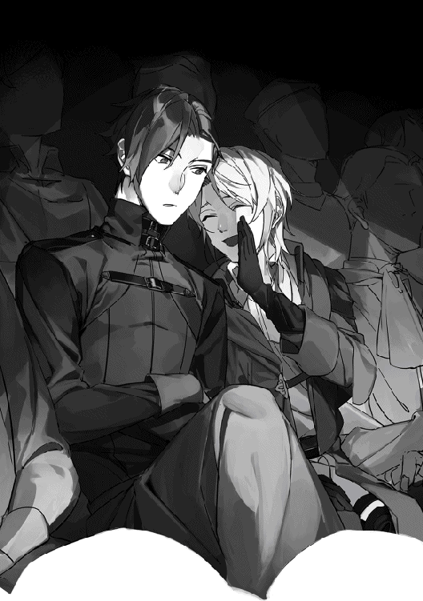

| 穏やか貴族の休暇のすすめ。 | |
| 岬 | |
| TOブックス (2018) | |
ファンタジーな世界で宰相として活躍していた青年リゼル。彼はある日突然、更に別の異世界へと転移してしまう。だが、持ち前の頭脳と、人たらしな話術を活かして、彼は上級冒険者ジルを相棒にし、自らも冒険者として華麗に転身。元の世界に戻れるかも解らないのに、「休暇だと思って楽しみます」と軽いノリで口ずさみ、異世界生活を存分に満喫していく。
イラスト：さんど
デザイン：TOブックスデザイン室
１．
現れたのは穏やかで清廉で、そして酷く貴族然とした男だった。
瞬きをしたら、景色が変わっていた。
「......うーん、目立つかなぁ」
リゼルは自身の服を見下ろし、そして再び顔を上げる。
今居る薄暗い路地の先に、人々が行き交う通りが見えた。明るく賑やかな通りに、やはり自身の恰好は合わない気がした。
上着を脱ぎ、腕にかける。出来れば装飾過多で、あくまで登城する為の装飾品でしかない腰の剣も外したいが捨てていく訳にもいかない。
「知ってる場所だと良いけど」
呟き、通りへと歩を進める。
王城の執務室で部下と話していた筈の男は、どこまでも冷静だった。此方を見る部下の姿が直後、見知らぬ路地の風景へと変わろうと取り乱す様子はない。
無感情ではなく、しっかりと困っているが、困ってもどうにもならない事を知っている。自身をコントロールする術は、貴族として生まれた彼が自然と身に着けたものだった。
「（やっぱり目立つなぁ）」
リゼルが路地裏を出た途端、ざわりと周囲が騒めいた。まさか上着を脱いだだけで彼が貴族に見えなくなる筈がなく、数多の注目を集めながらもリゼルは気にせず通りを歩く。
「（言葉は分かる。貨幣は違う。貨幣価値......誰か買い物してくれないかな）」
見られるのは慣れている。のんびりと歩きながら、リゼルは行き交う貨幣と品を見比べた。子供が握り締めた銅貨で買った品、銀貨を差し出し野菜を購入する主婦、その釣銭の枚数は。手あたり次第に頭へ入れていき、物価を予測して自らの認識する価値と比較する。
リゼルは貴族特有の感覚で金を扱うが、物の相場を知らないことはない。仕える王のお忍びで市井へついて行く事もある。
「（貨幣価値は変わらないのに、全然見た事がない。古いデザインじゃないし）」
人ごみを進み、擦れ違う度に振り返られながらリゼルは考える。銅貨、銀貨。この市場では未だ見ないが、恐らくこれより価値が高い貨幣も存在する筈だ。形もデザインも見知ったものとは違うが、鉱石的価値に違いはない。
遠くに薄っすらと見える王城を思えば、大きい国なのだろう。それなのにリゼル自身に全く覚えがなかった。
「（これだけ大きければ、知ってる筈なんだけど）」
風に流され、頬へと触れた髪を耳にかけた。とりあえず今は情報だ、と迷いのない足取りで歩いて行く。いざという時は、身分を明かして城へと保護して貰えば良い。最悪人質にされるかもしれないが、死ぬよりはマシだと敬愛する王も言ってくれるに違いないのだから。
「（もっと上位の貨幣と、あとは......）」
元いた国と変わらないのなら、後は金貨と晶貨が存在している筈だ。リゼルはそう予想をつけ、並ぶ露店を眺めながら微笑む。活気があるのは良い国だ。
「（どこも国の造りは変わらないなぁ）」
一番攻めにくい場所に城、その周辺に貴族の屋敷が集まり、そこからやや離れて商売的に優れた立地に高級店が軒を連ねる。ただ、そういった店は一見を断ることが多い。
「（このへんかな）」
リゼルが目指したのは高級店ではなく、大通りよりも少し良いものを扱っている店だった。何せ無一文だ。いかにも、な腰の剣を金の足しにしようと考えていた。
装飾品としての意味合いが強いそれに、武器としての価値はほぼ無い。リゼルも辛うじて使えなくもないが、使う予定も無い。
そのまま熟練の剣士が出てきた武器屋を素通りし、隣の道具屋の前で立ち止まる。〝鑑定に自信あります〟と自信無さげに書かれた小さな看板が、道具屋の看板の下にぶら下がっていた。
「うん」
書いたのは恐らく店主だろう。リゼルは満足げに頷いた。
押しの強い商人ほど厄介なものはない。自信が無いのでは困るが、わざわざ書いたのならばそうでは無いのだろう。謙虚なのは良いことだ。
「いらっしゃいま、せ」
「こんにちは。今、良いですか？」
中には若い店員が一人、せっせと売り物を磨いていた。語尾が怪しかったのは、どう見ても貴族にしか見えない男が一人で訪れた事に対する混乱か。立ち振る舞いに品があり、商人ならではの目利きで服の仕立ても一流のものだと分かる。だからこその動揺だった。
「売りたいものがあります」
「は、はい」
確かに今の自分は貴族に見えてしまうだろうと、リゼルは気にせず微笑んだ。
他に人は見当たらないので、目の前の店員が店主らしい。二十代前半ほどだろうか、少し幼い顔立ちをしている。背は見上げるほど高いが少し猫背で、栗色の癖毛をひとつに結んで背中へと流していた。伸びた髪が動く度にふわふわと揺れる。
「じゃあ、あの、鑑定から......」
「お願いします」
身に付けたエプロンからモノクルを出し、装着する姿はなかなか堂に入っている。そんな事を思いながらリゼルが剣を差し出すと、店主は受け取って直ぐにビシリと動きを止めた。
しかし目は忙しなく剣をなぞっているので、驚きながらも鑑定は行っているのだろう。ならば良いかと、リゼルは店内を見回して待つことにする。
「（道具屋、なのかな）」
リゼルは街中で聞き慣れない単語を何度も耳にした。
冒険者、そう呼ばれる者達がここには存在する。どうやら時折見かけた、武装した者たちの事を指しているようだ。周囲の会話を参照すれば、どんな職業なのかはそれなりに想像がつく。恐らく傭兵と似たようなものだろう。
「（ここはきっと、彼らの為の店）」
予想でしかないが、大きく外れてはいない筈だ。それなら武器屋の隣にあるのも納得が出来る。考えながらも壁に貼られた地図を見つけ、頭に入れた。
「......素晴らしい装飾ですね、見た事の無いデザインですし」
ふいに、ひたすら止まっていた店主がぽつりと呟いた。彼は直後、ハッとしたようにリゼルを見るやいなや顔を青くしてばっと頭を下げる。
「も、申し訳ございません！ 失礼な口を......っ」
「いえ、褒めてもらったのに怒りませんよ」
リゼルが穏やかにそう告げれば、店主は安堵を露わに恐る恐る頭を上げた。
その姿は恐怖というよりも畏れ多さが前面に出ている。その態度を見る限り、ここで貴族がどう思われているのかが分かった。
恐怖を感じられる程評判が悪いのは考えものだが、親しみを持たれ過ぎて同列に見られるのも問題だ。この国の貴族はそれなりの尊敬を受けているのだろうと内心頷き、リゼルは何事もないかのように問いかけた。
「それで、幾らになりそうです？」
「あ、はい......金貨二百枚、です」
リゼルは微笑みをそのままに、緩く首を傾げてみせる。不当に安く買い取ろうという者ならば、焦って値段を上方修正する筈だ。そして少しでも鑑定に自信が無ければ、再び剣へと視線を向けるだろう。
貴族を相手に喧嘩を売ろうという商売人は滅多にいない。やましい事があれば何らかの動きを見せる。今のリゼルの立場は微妙だが、相手が勘違いしてくれるのならば利用するに越したことはない。
「......？」
しかし店主は不思議そうな顔で、こちらも小さく首を傾けただけだった。
「いえ、買い取って頂けますか」
「あ、はい！」
リゼルが可笑しそうに告げれば、店主は慌てて剣を作業台へと置き、その裏へと回る。再度の鑑定が必要ない程度に自信があり、安く買い叩こうなどとは微塵も思っていない証拠だ。リゼルはすぐにこの店に剣を売る事に決めた。
「（看板に偽りなし、かな。飛び込みの高額買取にも対応できるし、きっと剣をより高く売れる店との伝手もある......良い店を見つけたなぁ）」
しみじみと思いながら、作業台のトレーへとせっせと金貨を並べていく店主を眺める。金貨十枚の塔が二十個、随分と煌びやかなものだとリゼルは他人事のように眺めていた。
「どうぞ、金貨二百枚です」
「これ、もう少し纏まりませんか？」
「？ あ、財布をお持ちでないですか？」
リゼルの知る限りでは、金貨百枚で晶貨に繰り上がった。それとなく聞いてみたが、店主は大量の金貨の持ち運びに困ったのだろうと思ったようだ。
反応を見る限り晶貨自体が存在しないのかもしれない。それならばこの大量の金貨をどうするのだろうと思っていると、店主は店の棚から何種類かの財布らしきものを持って来た。どれもポケットに入る程度の大きさで、目の前の大量の金貨などとても入りそうにない。
「えっと、こちらが、今お売りできる財布です」
「有難うございます」
ちなみに店主は、リゼルのことを単に貴族のお忍びだと思っている。貴族の買い物は財布など使わない。後で店から家にまとめて請求し、その時に一括で支払いが完了するからだ。よってリゼルの言動を不審に思わないし、リゼルも店主がそう考えるだろう事を察して無知を隠そうとはしない。
「三つとも素敵ですね。どれが良いと思います？」
「え!? え、あの、どう」
「私に似合いそうなもの、どれだと思いますか？」
うろたえる店主を揶揄うようにリゼルが問いかければ、彼は必死で財布とリゼルを見比べ始めた。
値段について説明がないのは、手に入れた金貨で充分に間に合うからだろう。それならばあえて聞く事も無い。そう思うリゼルの金銭感覚は、やはり根っからの貴族だった。
「あ」
その時、ふいに店主が声を上げた。その視線はリゼルの腰元へ向けられている。
「どうしました？」
「えっと、財布でも良いんですけど。鞄とか、いかがでしょうか」
控えめに向けられたセールストークに、リゼルはどういう事かと店主を見た。
「財布だと、貨幣しか入らないんです。けど、鞄なら、貨幣もそれ以外も何でも入るので」
「あ、じゃあそっちの方が良いですね」
「は、はい！」
どうやらリゼルが鞄などの入れ物を一切持っていない事を気にかけてくれたようだ。しかしどういう意味なのだろう、とリゼルは鞄が置かれている棚へと向かう店主を見ながら思う。財布に貨幣を入れるのも、鞄にそれ以外を入れるのも当たり前だ。
「あの、どういった」
「かさばらないもので、適当に」
財布の時と同様に暗に選んでくれと告げれば、店主はやはり必死で鞄の並ぶ棚と向き合った。棚にはリュックやトランクなど、様々なデザインのものが並んでいる。
「これとか、如何ですか？」
「素敵ですね」
店主が手にしたのは黒のウエストポーチだった。シンプルながらもデザイン性のある黒いベルトに、そのベルトに通す事が出来るこちらも黒い皮のウエストポーチ。ポーチには銀の装飾が品よく施されている。
「それでお願いします」
「あ、有難うございます」
リゼルとしては特別趣味から外れなければ何でも良いが、随分と良いものを選んで貰えたようだ。微笑み頷けば、店主がホッとしたように表情を緩める。
「代金はそこから引いて下さい。残りの金貨はポーチへ」
「分かりました、けど」
店主がちらりと金貨の山を見下ろし、そして伺うようにリゼルを見た。
「あの......」
「大丈夫。疑っていたら最初から売りませんよ」
「っ、はい！」
枚数の確認が済んでいない所為だろうと当たりをつけ、リゼルは促した。外れていなかったようで、店主は嬉しいのと気恥ずかしいのを堪えようとして堪え切れなかった変な笑みを浮かべつつ、ポーチ代を除いた金貨を財布へと移し始める。
「（......いっぱいにならないなぁ）」
明らかに容量オーバーの金貨をその身に納めているポーチは、しかし型すら崩れない。聞いてみようか、とリゼルはあくまで雑談の体で口を開いた。
「あまり馴染みがないので、新鮮です」
「え、あ、ポーチですか？ 空間魔法がついたものは特に値段も高いし、数も少ないので......あまり種類が無いのが、申し訳ないんですが」
ポーチが珍しいのだろうと判断された。しかし貨幣が溢れない原因は結果的に分かったので構わない。
「（魔法......魔術？ とは、やっぱり少し違うのかな）」
リゼルの世界では魔術と呼ばれていたものが、ここでは魔法と呼ばれているようだ。こちらについてすぐ、魔力を問題なく使えるのは確認済みだった。恐らく大きな違いはない筈だが、全く同じという訳にはいかないらしい。
「（空間魔法は、数が少ない。なら、これだけ例外っていうのもあるかも）」
やはり一人で情報収集するのは限界があるか、と思案している間に、店主が全ての貨幣を移し終える。出来れば取り出し方も知りたいと、ポーチが渡される前に声をかけた。
「あ、金貨二枚分は銀貨にして下さい」
「分かりました」
リゼルが見ている前で、店主がポーチへと手を入れた。すると二枚の金貨が指先で摘ままれて出て来る。良く分からなかった。
「じゃあ、銀貨二百枚で」
「お願いします」
先程と同じように十枚の塔が二十個、銀貨が手早くトレーの上に並べられる。店主はちらりとリゼルを伺い、そのままポーチへと仕舞った。
「お買い上げ、有難うございます」
「はい」
リゼルは差し出されたポーチを受け取った。重さはおおよそ一般的なポーチ一つ分、中身の影響は受けないようだ。
「その、お付けしましょうか」
「是非」
手に取って眺めていると、付け方が分からないと店主は思ったのだろう。リゼルは控えめな申し出を躊躇いなく受け、ポーチを店主へと手渡した。着替えでも何でも、人の手を借りる事に慣れている。躊躇いなど抱く筈もない。
「きつくないですか？」
「大丈夫です」
リゼルは取り付けられたポーチの位置を微調整し、満足すると預けていた上着を受け取る。そのままポーチへ一部を押し込んでみれば、まるで落としてしまったかと錯覚する程にスルリと上着が姿を消した。更に手を入れ、金貨を出してみる。まさに普通のポーチから金貨を取り出すのと同じ感覚で金貨を取り出せた。
「ん、良いですね」
「あ、有難うございます」
リゼルが褒めるように微笑めば店主は二度三度と目を瞬かせ、破顔した。そして立ち去ろうとするリゼルに慌てて先行し、扉を開ける。その横を通り過ぎざま、リゼルはふっと店主を向いて口を開いた。
「良いお店です。また来ますね」
「は、はい。ありがとうございまし......」
数少ない筈の空間魔法付きの器を、多くはないが揃えていた。高級店ですらない事を思えば、それこそ揃い過ぎな程に。ならば余程良い伝手を持っているのだろう。
「またって、え......また？」
背後の閉まりかけた扉から漏れ出た呟きに小さく笑い、リゼルは今度は宿でも探そうかと再び通りへと足を向けた。
「（やっぱりきちんと情報を知りたいな）」
道具屋でも思った事だが、一人で情報収集するのは限度がある。多少のリスクは承知の上で人に頼るのも良いかもしれない、と楽が出来るなら楽をしたいリゼルは思っていた。この見知らぬ土地への転移が人為的なものであったら慎重にもなるだろうが、リゼルにはそれは無いという確信がある。転移というものを他で経験しているからこそ分かる感覚だ。
「（凄く、こう......さり気なさ過ぎたし）」
とはいえ容易に事情をバラしたいわけでは無いので、情報を聞き出す人物はきちんと選ばなければならない。リゼルは一旦腰を据えて考えようと、目に付いた路地へと歩を進める。
「（出来ればどの国にも所属していない方が良い、考えは片寄らない方が良いし）」
すぐ隣に大通りがあるにもかかわらず路地は静かだった。少し湿った空気と、石煉瓦に囲まれた所為で冷える空気に肌寒さを覚える。
「（変な主張は持ってないけど自分の考えは持っていて、正義感なんて持っていなくても最低限の道徳は守れる人で、駆け引き上手な人）」
駆け引きが得意な者は、不必要に相手の事情に首を突っ込まない。与えた利益と等価の情報を齎してくれる。そして、利も無く他者にそれらを触れまわることもない。当然、渡り合うには此方も駆け引きの腕が求められるが、貴族社会で生きてきたリゼルだ。それなりの自負はある。
「（あ、それと出来れば）」
「おい」
ふいに、低く微かに掠れた声がした。リゼルが振り向くと、大通りを背にして一人の男が立っている。逆光を背にしているお陰で見にくいが、まじまじとその風貌を確認したリゼルは一瞬、自分が絡まれたのかと思った。
「？」
なにせ男はとにかくガラが悪かった。良く見ると端正な顔をしているのが分かるが、それを全て台無しにする程にガラが悪い。鍛えられながらもすらりとした長身に、腰に下げた長く細身の大剣が目を引く。姿恰好から考えれば傭兵か、あるいはこれが冒険者なのだろう。帯剣しているからといって騎士にはとても見えない。
「私ですか？」
やや失礼な事を考えていたリゼルは、それらをおくびにも出さず微笑んだ。穏やかな相貌をしているリゼルとはまるで正反対の男だ。向けられた視線は鋭く、気の弱いものならば即座に踵を返すだろう。
「何か御用でしょうか」
しかし人当たり良く問い返したリゼルに、男は微かに眉を上げた。分かりづらいが意外に思ったのだろう。どうやら自身が他者にどういった印象を持たれるのか自覚があるようだと、リゼルは内心可笑しく思う。
そして、促すように小さく首を傾けてみせた。男はしばらく何かを探るかのようにリゼルを見ていたが、ふっと息を吐いてその鋭い視線をリゼルの背後へと送る。
「タチ悪ィのがいる、止めとけ」
リゼル自身そこまで奥に行くつもりはなく、少し静かな場所で考えたかっただけだ。しかし運の悪い事に、男曰く〝タチ悪いの〟が集まっていたらしい。

「（わざわざ心配してくれているようには見えないけど）」
リゼルの為か、タチが悪いと称される者達の為か、それとも自分自身の為か。恐らく後者で、彼自身に不都合なことが何かしらあるのだろうとリゼルはにこりと笑ってみせる。
「ありがとうございます、親切ですね」
「......思いたきゃ思ってろ」
否定も肯定もされない。だが嘘ではない。きっと男はリゼルに関わらず通り過ぎる選択肢もあった筈だ。リゼルの笑みが深まる。
男が言うことは言ったとばかりにリゼルへ背を向け、そして大通りへと戻ろうとする。リゼルはポーチから一枚の金貨を取り出し、その背へ放った。金貨は男の後頭部へ向かい、そこへ触れる前に振り向いた男によって掴まれる。
「おい」
「少しお話しませんか？」
眉間の皺を深め、怪訝そうに此方を見る男にもう一枚金貨を差し出した。
「厄介事なら他をあたれ」
「貴方が想像するような事は、何も」
「想像できねぇって？」
「話だけです。少なくとも、貴方に不利益はありません」
男は胡散臭そうに暫くリゼルを見ていたが、一つ舌打ちを零しながら金貨を受け取った。最初の一枚は助言への謝礼、次の一枚が話を聞かせて貰うことに対しての報酬。その意図を汲み取った男が、二枚の金貨を指先で遊ばせながら歩き出す。
「ついて来い」
「はい」
金に困っているように見えない相手を引き留めるには、興味を引いてみせるしかない。ひとまず成功したようだとリゼルはその背を追って路地から出る。その口元にはやはり笑みが浮かんでいた。
これといった所属国の無い冒険者。リゼルの意図を汲み取れる頭と、ガラの悪さに反して落ち着いた物腰は好印象。そして出来れば。
「（少し世話焼きだと、やりやすい）」
それが此方に対するもので無くとも、好意が伴わずとも、今は結果的に互いに利があればそれで十分だ。なかなか好条件の人物に出会えたと、リゼルは自分の運の良さに感謝しながら男の後へと続いた。
２．
ジルだと名乗った男に、リゼルが連れられたのは酒場だった。カウンターもあり、雰囲気はバーに近いがテーブル席も幾つかあるので酒場に間違いない。まだ日も残るので客は少ないが、恐らくこれから混み始めるのだろう。
「奥借りる」
「ああ」
ジルはカウンターの前を通り過ぎざまに、その上に銀貨を数枚置いた。リゼル自身、あまり周囲に聞かれたくは無いので口を挟まない。ふいにマスターらしき男の視線が、興味深そうに店内を見回していたリゼルを向いた。
「どうも、初めまして」
「......ああ」
明らかに異端な組み合わせにもかかわらず、彼は何も言わなかった。秘密の話をするには良い店だと、リゼルはジルの後に続いてカウンター奥の扉をくぐる。四人掛けの机が一つある、小さいが過ごしやすそうな個室だった。
「ジルさんは顔が利くんですね」
「誰でも使える。マスター、酒」
「あ、私飲めなんです」
「あ？ おい、こいつ酒飲めねぇって」
「聞こえている」
そんな掛け合いを聞きながら、リゼルは近くの椅子へ腰掛けた。数時間ぶりに腰を落ち着ける事が出来て、ほっと息をつく。直ぐに、両手にグラスを持ったジルが戻って来てそれを差し出した。
「おら」
「ありがとうございます」
酒場に来て飲まないのも失礼だろうと辞退したつもりだったが、予想に反して用意されたグラスには果実水が注がれていた。薄く、美しく色づいたそれを暫く眺める。
そして、口を付けることなくそっと置いた。向かいに腰かけ、カラリと氷を鳴らしながら自らのグラスを回すジルが唇を笑みに歪める。
「なんなら毒見してやろうか」
「疑うくらいなら、声をかけていませんよ」
平然と微笑むリゼルに、ジルは内心で舌打ちを零す。
「（俺が声をかけるまで、だろ。......読めねぇな）」
ジルの予想通り、リゼルはジルから何らかの発言を受けるまで飲むつもりはなかった。もちろん何か仕掛けられているとは思っていない。思ってはいなくとも存在はする疑いがゼロになる瞬間が今、ジルが発言した瞬間だったに過ぎない。
気付いたジルが、自身に対する評価を改めてくれるのなら重畳。リゼルはそう思いながら、乾いた喉を潤す。
「で、聞きたいことは？」
「取り敢えずジルさんの自己紹介でも」
「何が知りたいんだよ」
「探りたい訳ではないんです。情報のやり取りだけで解散、は味気ないので。職業でも女性遍歴でも良いですよ」
向けられる胡散臭そうな視線を流し、リゼルはもう一口果実水を味わった。甘酸っぱさが疲れた体に染み渡っていくのが心地良く、頭もスッキリする。
リゼルが知りたいのはジルの立ち位置だった。これから情報を貰うにあたり重要なことだ。下手な情報を仕入れる気もなければ、質問の仕方も変わってくる。見る限り間違い無く冒険者だが、確認の意味もあった。
「吸うぞ」
「どうぞ」
ジルが呆れたように溜息をつき、煙草を咥える。
「まぁいい、調べりゃ分かる。ソロの冒険者、Ｂランク、特定の女はいねぇが作る気もねぇ」
「作らないけど、困る事もない？」
「そう見えんなら光栄だ」
ジルは気分が乗ったように鼻で笑い、煙草に火を点けた。職業では無く、まさか女性遍歴の方にコメントを返されるとは思っていなかったのだ。
ソロでＢランクなど今この国には一人しかいない。ソロで進めるのはＤランクまでだというのが一般論で、それ故に冒険者の間では高い知名度を誇る。そのジルにリゼルは反応を示さなかった。
「（思ったよか大物か。それにしちゃあ）」
「貴方は敏そうだし、もしかしたら混乱させているかな」
自身の内面は読ませない癖に、此方の考えは容赦なく読んでくる。打てば響くやり取りは何処か心地よく、ジルは咥えた煙草を離してその火を揉み消した。まるで、目の前の男とのやりとりを楽しもうというように。
「聞いたら教えて貰えんのか」
「知りたいんですか？」
「女性遍歴も詳しく」
先程のやり取りをそのまま繰り返され、リゼルは可笑しそうに笑った。声を上げない品のある笑い方に、さて返されるのは貴族という答えで間違いないだろうとジルがグラスへと手を伸ばす。
「職業は無し、個人を証明するものもないので身分も無し。女性遍歴はナイショです」
その手がグラスを倒しそうになり、すぐに掴み直した。そしてジルは、全てを暴こうとするかのように鋭い視線を目の前の読めない男へと向ける。普通の人間ならば恐怖し、何もかもを話すだろう眼光を前にしてもリゼルは変わらない。
「......嘘じゃねぇらしいが、混乱してる俺に流すにしちゃ親切じゃねぇな」
「嘘じゃないと信じるんですか？」
「女関係を流したってんなら、そういう事だろ。いちいち試してんじゃねぇよ」
リゼルは嬉しそうに目を細めた。元々それなりに話せる人物を選んだつもりだが、これほど願った通りに意図を汲み取ってくれると楽しくもなる。
「そうですね、適当に言おうと思ってたら百人斬りとでも言ってます」
「見栄張りすぎだろ」
面白そうに唇を歪めるジルに対してなんて事ないように頷き、リゼルはさてと机に両肘をついて指を組んだ。
「自己紹介も終わったし、本題に入りましょうか」
「こっちとしちゃ、お前のこと何一つ分かってねぇけど」
「貴方の質問が悪かったということで」
微笑むリゼルに、ジルは何とも苦々しく顔を顰める。聞かれたくない何かがあるのは間違いない。それを暴くような趣味は無いが、質問を誘導された感も否めない。
「（まぁいい、値段分の情報渡すだけだ）」
競り合う取引ならいざ知らず、完全先払いの安全な情報提供だ。相手の事情など知らなくとも出来る。気にならないかと聞かれれば、それは別として。
「で」
「そうですね、取り敢えずこの辺りの情勢でも」
国境を越える事が多い冒険者に対しては、無難な質問だ。
「ここには来たばっかか」
「ええ、今日」
さり気なく探ってみたが、平然と返される。職業も身分もない男が、良くこの国へと入れたものだとジルは酒を一口含んだ。
「最近はキナ臭ぇ話は聞かねぇ。落ちついてる」
「最近？」
「ああ、結構前に商業国と魔鉱国が揉めてたな。まぁ、あそこの小競り合いなんざ今更誰も気にしねぇが」
リゼルは齎される情報に頷きながら、目まぐるしく思考を働かせた。
道具屋で見た地図を思い出す。一般に出回るような地図らしく近辺の国々が大雑把に描かれただけのものだが、都市と都市とを繋ぐ大きな道は描かれていた。今ばかりは分かりやすくて有難い。
「（商業国は名前からして流通の中心、南の行路が集中してた国が多分そう。魔鉱国、鉱脈、大きな山脈に面してた南西の国かな。生産者と商人のいざこざだとしたら、特に問題ない）」
「お前は？」
「いえ、ありがとうございます」
空になったグラスを揺らしてみせるジルに、リゼルは果実水の残るグラスを指先で弾き辞退する。ジルは扉の向こうに顔を覗かせ、直ぐに新しい酒を片手に戻って来た。
「しかしこの国は広いですね、全部回り切れるかどうか」
「あっちまで細かく見て回ろうと思うと一月じゃ足りねぇな。馬車使っても時間がかかりすぎる」
「ですよね」
この国、の範囲に話題にでた商業国と魔鉱国を纏めた。そしてリゼルが見た地図には、先の二つ以外にもう一つ国が描かれていた。地図でも中央に描かれたその国が、この場所だ。
リゼルは地図に書かれていた文字を思い出す。不思議な事に元の世界と変わらぬ文字だった。商業国マルケイド、魔鉱国カヴァーナ、そして。
「貴方は、パルテダについてどう思います？」
王都パルテダ。それがこの国の名前だ。恐らく商業国や魔鉱国は属国か何かなのだろう。あるいは他にも地図に点々と描かれていた村々などを合わせて一国家なのかもしれない。
「漠然とした質問だな」
「貴方が感じている事を簡単に、で構いません」
質問の意図が掴めず訝しげなジルに、リゼルがゆるりと目を細めてみせる。分かっていると言うように、なおざりに手が振られた。
「別に、冒険者なら誰でも思うことだろ。良い宿、旨い飯、そこそこの依頼、これだけありゃ充分だ」
「成程、参考になりました」
国を渡り歩く冒険者が居座る国ならば、身分が保証出来ないリゼルが居てもそれほど不自然では無い。出入国の際は分からないが、今すぐに最悪の状況になることは避けられそうだ。
「（なら、良いか）」
リゼルは機嫌よく内心で呟いた。ジルの言うことが本当ならば宿と食事に困ることはなく、王都というなら人も情報も集まるだろう。此処が何処だか分かるまでは居座るのだから、良い拠点であるに越したことは無い。
「質問だけで終わろうと思っていましたが」
頼れそうな人物もいることだし、とリゼルはまっすぐにジルを見据えた。
「頼み事もして良いですか？」
「......まぁ、渡した情報だけじゃ割りに合わねぇのは確かだがな」
少しばかりの警戒と、興味。それほど分の悪い賭けではなさそうだと、笑みを深める。
「観光案内しろ、護衛につけ、冒険者の手厚い付き添い、どれだ？」
「全部です」
あっさりと肯定され、からかい調子だったジルも呆れきってリゼルを眺めた。前の二つは簡単に予想がついたが、冗談で付け加えた冒険者の件もあっさり肯定されてしまうとは思わなかった。もう会話の主導権を握るのは完全に無理だ、と察して溜息をつく。
「潔く厚かましいな、お前」
「それほどでも。ジルさんとの会話は言わずとも悟ってくれるから楽ですね」
「悟らせてんだろうが」
ジルは低い声と共に、手にしたグラスの底で机を叩く。それでも清廉な男が平静を失うことはない。
「てめぇに此処らの知識がねぇだの、素性が普通じゃねぇだの、俺に知らせずに情報漁る頭もってんだろうが。結局てめぇは話をココに持って来たかった、違うか？」
リゼルは肯定しなかった。ただ静かに微笑んでいる。だが、ジルはそれが肯定であると確信していた。厄介な人物に関わってしまったかと思ったが、しかし不思議と後悔はない。
「それでも、決めるのは貴方です」
ジルが路地裏に入ろうとするリゼルに声をかけたのは、親切心などではない。自身にとって多少の不都合があっただけだ。無視も出来たが、しなかった。それが今の状況を生んでいる。
要求を呑まずとも、金貨二枚だけ持って帰れば良い。〝破格の謝礼で情報交換した〟、で済ませる事も出来る。
「内容は」
それでもジルの口は、勝手に依頼の内容を問いかけた。
「ジルさんが先程言ったものと相違ありません。最初の数日は共に行動して色々教えて貰う事になるでしょうが、それ以降は必要な時に同行という形になると思います」
「期間」
「とりあえず一月。もし必要なら、その都度十日単位で延長でどうでしょう」
してやったり、と少しばかり悪戯っぽく笑う目の前の男は、何処まで想定していたのだろう。良い年した男が好奇心だけで動こうとしている事実に、ジルも喉を震わせ笑みを零す。
「俺にいくら払う」
「いくら分の働きをしてくれます？」
「ハッ、誰にモノ言ってやがる」
良いように扱われながら、しかし嫌悪感は無い。それが最もジルの興味を煽るのだと、本人も気付いていなかった本質でさえリゼルは利用してみせる。
「一月で、てめぇの持ち金空にしてやるよ」
ジルは、いっそ獰猛さすら孕んだ笑みで応えた。ギルドの依頼は全てこなし、新しい依頼も受けていない。断る理由はどこにもない。
「前金はいらねぇ。一月後にてめぇが決めろ」
「破格ですね、自信がある様子は私としても好ましいです」
未だ冒険者界隈の相場を把握していないリゼルだが、今ある金貨をただ食い潰すつもりもない。二人は交渉成立とばかりに空のグラスを打ち合わせた。
「早速ですけど宿を紹介して頂けますか？」
「俺と同じ所のが都合良いか」
「そうですね。宿に着いたら、貴方が疑問に思っている事をお話しましょうか」
「そりゃ楽しみだ」
半端に残るグラスの中身を、両者飲み干すことなく席を立つ。リゼルはジルの背に続きながら、急にしては随分と理想的な相手を見つけられたものだと自画自賛した。
利益で動く人物は、ただ交渉の相手とするだけなら理想的だ。しかし完全な利益主義者は与えねば動かず、他に現状を上回るものを見つければ流れてしまう。腰を据えて行動を共にするには向かず、決定打はそれ以外が好ましい。
「（ソロのＢランク、は分からないけど凄いみたいだし）」
多少無理に此方へ向けた興味を手離さないようにしなくては、と機嫌よく内心で呟き、客で賑わい始めた酒場を後にした。
３．
酒場から十五分ほど歩くと、ジルが拠点とする宿へと到着する。二人はリゼルの分の部屋を借りると、そのままジルの部屋へと向かった。互いに疑問は早めに解決した方が良いとの考えからだ。
「ん」
「失礼します」
開いた扉をそのままに招き入れられ、リゼルは遠慮なく扉を潜る。一人用らしい部屋は狭く、ベッドの他には背が高めの小さな机と椅子しかない。既に半年ほど拠点にしている部屋らしいが、生活感は無かった。
「綺麗ですね」
「寝にしか帰らねぇからだろ」
空間魔法付きの鞄を持っているのか、と疑うほどに荷物が無い。リゼルはジルの腰にあるポーチを眺めながら、勧められるままに椅子へと腰掛ける。
「で、説明して貰えんだろうな」
「そう急かさないで下さい」
剣をベッドに立てかけ、疑わしそうに向かいに座るジルに微笑んだ。それに対し、まさか焦らすつもりかとジルの顔が顰められる。
しかし、リゼルとしてもいきなり自己紹介に入る訳にはいかなかった。自身の考えを整理するためにも、まずは確認しておくべき事がある。
「これから言う事に、嘘はひとつもありません」
「知ってる。嘘ついて得することもねぇだろ」
リゼルが誠実を以って告げれば、ジルも念を押す必要があると察したらしい。表情を変えず、やや頤を上げながら同意が返る。
「私は全く知らないこの国に、此処にはない場所から訪れました」
曖昧な物言いをしている自覚はある。事実、ジルからは言葉の真意を探る様に厳しい視線が向けられた。考える時間が必要だろうと、リゼルは促すことなく待つ。
「此処にない？」
ジルが肘をついた手で口元を覆い、視線を緩めないままに問いかける。リゼルも考えるように視線を流した。
「そうですね......此処には、点から点を移動するように遠方へ向かう手段はありますか？」
「迷宮に限りゃある」
リゼルの世界にも迷宮はあった。魔物が蔓延る別空間へと繋がる扉。馴染みがない所為でジルが示すものに心当たりはないが、そういった手段が存在するのなら説明は簡単だ。
「私はそうやって、此処に来ました」
「あ？」
「今日の昼過ぎ、王都の路地裏へ。直前までは自室にいたんですが、知らない内に」
ジルが深く眉を寄せた。それが嫌悪や疑心からでない事だけを確認し、リゼルは言葉を続ける。
「此方に来て色々見て回りましたが、私が居た場所とほとんど変わりません。だからこそ、酷く違和感がある」
リゼルとて、元いた場所の全てを把握している訳ではない。自国から遠く離れた土地だという可能性も否定しきれない。しかし、それにしては似すぎているのだ。
言語、貨幣取引、衣食住などの文化は勿論、価値観などにも大した差は無い。それなのに、些細な常識に決定的な違いがある。
「まるで、世界の軸がずれてしまったように」
リゼルが揃えた二本の人差し指をずらしてみせる。
例え現実味が無かろうと、それが可能性を否定する材料にはなり得ない。理知的でありながら型に囚われない柔軟な思考こそが、リゼルをリゼルたらしめる。
「これを前提にして話すので、信じられないなら話は終わりましょう」
パッと手を解いて、リゼルは緩やかに微笑んだ。
「依頼期間中に支障を感じる場合は、その都度声をかけます」
「続けろ」
何も言わず話を聞いていたジルがそれだけを口にした。リゼルはぱちりと一度だけ目を瞬かせ、そして笑みを深める。
「信じるんですか？」
「それしかねぇだろ」
ジルは椅子の背に深く凭れながら、ゆっくりを息を吐いた。
正直、リゼル以外が言えば一笑して終わるだろう。ただの世間知らずな貴族が世迷言を言っているに過ぎないと見捨て、二度と関わりはしない。
「嘘にしちゃ出来が悪ぃ」
「おっしゃる通りです」
可笑しそうに同意したリゼルに、ジルは思う。
そもそも、先も言った通り此処で嘘をついてリゼルに何の得があるのか。出会ったばかりだが、今の状況でデメリットでしかない手段をとるような愉快犯だとは到底思えない。消去法で可能性を除外し、残ったのが〝信じる〟という一択だったというだけだ。
「俺もそのつもりで話す」
「有難うございます」
リゼルから伝わるのはただ一つ。話しておけば効率が良いだろうという、ある種冷めた考えのみ。
「知らねぇ所に来たにしちゃ、落ち着いてるな」
「これで全裸が普通の国とかなら、流石にこうは行きませんけど」
ほのほのと微笑むリゼルに、穏やかで清廉な空気を纏い何てことを言うのだとジルの顔が引き攣る。
「......変わんねぇんだろ」
「ええ、ほとんど」
「何が違う？」
「そうですね。細々とした名称だったり......そういえば生活に根付いた魔術、いえ、魔法は此方のが進んでいる気がします。空間魔法とか見た事ないですし」
「あれは別だろ」
やはり空間魔法は特殊なようだ、とリゼルは情報提供者の重要性を改めて再確認した。そんな彼に、ふいに声がかかる。
「で？」
「え？」
「お貴族様の自己紹介」
ジルが確信を持ってそれを促した。
「分かります？」
「何で分かんねぇと思うんだよ」
貴族としては穏やか過ぎるが、何処から見ても貴族にしか見えない。あるいは同等の何か。それは仕立ての良い服の所為では決してなく、恐らく庶民の服を着ようと高貴な出である事は確実にバレる。
本人に自覚などしようも無いかと、ジルは呆れたように溜息をついた。
「貴族っつってもピンキリだろ。お前は？」
「じゃあ、簡単に。爵位は継いだばかりですが公爵、職は宰相、王城に勤めていました」
「待て」
ジルは思わず止めた。公爵といえば爵位の最上位、宰相と云えば国王を補佐する最高位、中枢中の中枢だ。低位ではないだろうと思っていたが、完全に予想外だった。
政界では間違いなく若輩な男が、何故それ程の地位に立っているのか。年齢の分かりにくい顔はしているが、二十代後半で間違いはない筈だ。更に生まれで決まる爵位はともかくとして、宰相とは。
「本当に、たまたまですよ」
物言いたげなジルに気付き、リゼルは苦笑する。
「国王の小さい頃からの教育係だったので、覚えが良くて」
この王都では同じ王制を敷いている。特にジルはそれを良く理解している。事情を聴けば理解できるだろうと思っていた相手が、事情を聴くごとに掴みどころが無くなっていく。
「こちらでは何も関係ないので、気にしないで下さい」
何故か楽しそうなリゼルを前に、真っ先に思考を占めたのは諦めだった。
「......そう思わねぇとやってられねぇか」
切り替えが早くてこれ程助かった事は無いと、ジルはすんなりと割り切った。その態度をリゼルも嬉しく思う。これでへりくだられでもしたら何の意味もない。その辺りもジルを協力者に選んだ理由なのだが。
「若ぇ王だな」
「それだけ優秀なんです」
「へぇ」
リゼルの笑みが誇らしげに色付いた。
「就任前はヤンチャで、今でも〝元ヤン国王〟なんて国民から慕われていますよ」
「それ慕われてんのか」
「懐かしいですね。出かけたと思ったら、どこかの屋敷を燃やして帰って来て驚きました」
「ガチじゃねぇか」
その屋敷はなかなか尻尾を掴ませない悪徳貴族のものだったが、ジルには割愛された。国民から慕われているのも、仕える者達から敬われているのも事実なのだから、その辺りはどうでも良い。
「私が宰相に就任した時も、少し批判があったんですけど」
「そりゃあな」
リゼルが自身の有利になるような教育を施すような事はない。しかし立場上、どうしても親しくなる。信頼できる人脈を得るための教育係でもあるのだから非難される覚えはないが、気に入らない人間はやはり何処にでもいるものだ。
「陛下の『俺が身内贔屓で使えない人間を置くように見えるか』の一言で無くなりました」
「家一軒燃やした奴は説得力が違ぇな」
「でしょう？ 王として生まれたような素晴らしい方です」
高貴な瞳を色濃くし、甘く微笑むリゼルに、随分と元教え子を甘やかしているようだとジルは悟る。教育に手を抜くようには見えないので、甘やかすというより全てを肯定すると言った方が良いか。
きっと件の国王が何をしようが、目の前の男が須らく彼の利へと転じさせるのだろう。
「（こんな男、簡単に手放せねぇだろ）」
話に聞く国王へと同情する。今頃、あちらは大混乱だろう。
「戻れんのか」
「どうでしょう」
簡潔に問いかけたジルへ、リゼルもあっさりと答えた。
「もし私が居なくなって困るのなら、きっと帰る方法を見つけてくれるでしょう」
これは過信ではなく本心だ。もし必要だと思ってくれるなら、かの国王は不可能を可能にしてでも己を連れ戻す。そして要らないと言うのなら、リゼルが帰らなければいけない理由も無くなるのだから。
「てめぇは探さねぇのかよ」
「一応気にはかけますけど、私では難しいと思います。多分これは、陛下の得意分野です」
「へぇ」
「なので、それまでは休暇だと思って楽しみます」
「てめぇが良いなら良いけどな」
焦っても仕方がないとはいえ、落ち着いたものだとジルはいっそ感心した。これから過ごすにあたり鬱々とされても迷惑なだけなので、歓迎すべき事だろう。
「これで事情は伝わったと思います。私が変な振る舞いをしていたら教えてくださいね」
「別に貴族としちゃ違和感ねぇだろ」
「貴方が言ったんでしょう、冒険者の付き添いも出来るって」
確かに言ったが、ジル自身これに関してはまず無いだろうと思っていた。折角の休暇だしなどと宣っているが、喜々として貴族スキルが一切役に立たない冒険者を選ぶ意味が全く分からない。違和感しかない。
「ぜってぇ浮くぞ」
「え？」
何故だという顔をするリゼルに、ジルこそ何故だと言いたかった。
その男がギルドへと入ってきた時、その場にいた冒険者たちは期待に目をぎらつかせた。品の良い仕草に清廉な雰囲気、穏やかな顔をした彼はどう見ても身分の高い男だったからだ。滑るようにギルド内をなぞる視線は高貴な色を宿し、嫌味なく周囲を見定めているようにも思える。
恐らくギルド長に挨拶に来たのだろう、格好がラフなので依頼かもしれない。冒険者は声を潜めて囁き合う。誰しも高位の存在とのコネは欲しい。依頼だとすれば是非自分がと、他を牽制しつつ虎視眈々と狙いを定める。
「此処がギルド、ですか。賑やかそうな所です」
「今に限りゃ静かな方だけどな」
しかし、冒険者たちの期待は直ぐに落胆へと変わった。高貴な男に続いて入ってきた人物に、依頼が自分達に回ってくる事はなさそうだと悟ったからだ。
「一刀か」
「良い客持ってんなぁ」
誰かが残念そうに呟く。
一刀のジル。ギルドの実力者を知ろうと思えば、必ず名を上げられる人物が男に付き添っていた。その実力は冒険者最高位のＳランクをも凌ぐ、と噂されることもある。彼を雇う事に成功していれば、他に依頼を回す事は無いだろう。
「ギルド長？」
「じゃねぇの」
「良く雇えたもんだ。誰とも組まねぇだろ、一刀」
「見たこたぁねぇな」
依頼を眺めながら、机で駄弁りながら、冒険者たちは受付へ向かう二人を眺める。
高貴な男は偶々空いていたからだろう。ギルドの受付カウンターの端にいるギルド職員の前へと立った。気付いた職員が書類へ落としていた顔を上げ、異常な程に淡々とした無表情で口を開く。
「申し訳ありませんが、ギルド長は只今外出しております。御用件をお伺い致しますので後日に」
「え？」
「は？」
不思議そうに声を零した男に、職員も怪訝の色を隠すことなく声に乗せる。その表情は一ミリたりとも変化しない。
「ギルドの登録に来ました」
「は？」
更に強い声色で返され、高貴な男は困ったように隣を見た。
「言っただろうが」
非常に解せない。
望まず見知らぬ国に来てしまったにもかかわらず、一晩ぐっすりと眠ったリゼルは身分証を求めてギルドを訪れていた。そして盛大に浮いていた。
「あれ、登録って......ジル？」
「ギルド長いらねぇ」
周囲へ期待と落胆と驚愕を齎しながらも、我関せず確認をとる。その言動に、本気で冒険者になりに来たと気付いたのだろう。目の前に座るギルド職員が、どこまでも無表情のまま口を開いた。
「正気ですか」
「勿論」
何やら酷いことを言われた気がしたが、リゼルは気にせず頷いた。
「冒険者になりたくて、来たんです」
リゼルとて、ただ身分証の為だけに冒険者になると決めた訳ではない。全く未知の職業でもあったし、更にジルから聞いた冒険者像に興味を煽られ、きちんと考えて至極真面目に冒険者になりに来たのだ。
その思考がすでに冒険者からずれていると、唯一この場で告げるべきジルは口を開かない。彼は面倒臭くなると流す。
「......一刀は貴方に教えませんでしたか」
抑揚のない無感情な声が、リゼルへと問いかけた。
「一刀？」
「その男のセンスのない通り名です」
「俺が付けた訳じゃねぇ」
ジルが名乗った事は一度として無いが、知名度は高い。それすら知らなかったリゼルに、職員は何故連れて来たという視線を露骨にジルへと向け、そして通り名に謎の憧れを持ち始めていたリゼルへと向き直る。
「当冒険者ギルドでは立場上、国からの介入を拒否する事もあります。よって貴族や騎士、またはそれに類する方の冒険者登録をお断りしております」
「はい」
数秒の間。話の続きを待つリゼルに、職員は再度口を開く。
「貴族、またはそれに類する方の冒険者登録をお断りしております」
「？ 分かりました」
リゼルは何故繰り返されたのだろうと思っているし、職員は何故帰らないのだろうと思っている。穏やかな微笑みと徹底した無表情が見つめ合うこと更に数秒。
「お帰り下さい」
何故、と流石のリゼルもジルを見た。いっそ面白いとやり取りを眺めていたジルは、それをおくびにも出さず職員へと口を開く。
「違ぇよ」
「何がです」
「貴族じゃねぇ」
ギルド内が驚愕の空気に包まれる中、職員がじっとリゼルを見つめる。微笑まれ、一度だけ瞬き、そして再びジルへと向いた。
「ねぇよ」
「あるんだよ」
ジルとて気持ちは良く分かるが、しかし事実なのだ。どう見ても貴族でしかなくとも、実際生まれも育ちも貴族であっても、存在が貴族以外になり得なかろうが、それでも今のリゼルの立場は無職でしかない。
「ジルの言う事は本当ですよ」
ようやく何を疑われているか理解したリゼルが、穏やかに告げる。
「冒険者登録、お願いできますか？」
「............少々お待ちください。必要な道具を用意して来ます」
釈然としないままギルド職員は席を立った。それを見送り、リゼルはちらりとジルを見る。そして一歩近寄り、囁いた。
「どうして疑われたんでしょう」
「（何言ってんだコイツ）」
向けられる露骨な視線を流し、首を傾ける。何故ならリゼルは今朝、一緒に朝食をとったジルにギルドで浮かない為のアドバイスを貰ったからだ。
やらないよりはマシだろう、とジルが適当に考えたそれを、彼は素直に実行している。街中でも見かけるような服に着替え、敬語も若干ゆるく、更には一人称も変えた。
「俺としては、なかなか良い感じに」
「似合わねぇ」
当のジルが物凄く理不尽な事を言ってくるが、リゼルは苦笑を返す。そこは慣れて貰うしかない。
「お待たせ致しました」
その時、職員が数枚の書類と丸い道具を抱えて戻って来た。道具は魔道具だろう。魔力を用いて稼働する道具は一括して魔道具と呼ばれる。
職員はそれらをカウンターの上に置き、そして椅子を引いて腰掛ける。感情の揺らぎの一切を映さないガラスのような瞳が、真っすぐにリゼルを見据えた。
「登録に移りましょう。私ギルド受付窓口担当のスタッドと申します」
「よろしくお願いします」
淡々とした口調と動かない表情は、随分と冷たく見えた。
しかしリゼルとて貴族社会で生きて来た身、スタッドに悪意がない事ぐらいは気付ける。彼は感情の振れ幅が極端に狭く、そして実際にほぼ無感情なだけで、限りなく素だ。
「ではこちらの説明を読んで署名を」
「はい」
カウンターに並べられた二枚の用紙に、リゼルはペンを持ちながら目を通していく。
「本当に貴族の方ではないんですか。隠されたら私の責任問題になってしまうんですが」
「違いますよ。なんなら調べて貰っても構いません」
「調べられるだけは調べます。出身地だけでも教えて頂きたいのですが」
「遠くの方なので、多分知らないと思います」
一応会話は弾んでいるらしい、とジルはペンを滑らせる姿を眺めた。スタッドは露骨に探っているが、リゼルが楽しそうに流している。それだけの余裕があるのだろう。何ならギルドが何らかの情報を掴んでくれると楽、とでも考えているのかもしれない。
「ジル、推薦者のサイン」
「ああ」
呼ばれ、リゼルの綺麗に崩されたサインの下に適当に署名する。推薦者は通常居なくても良いが、リゼルのように身元がはっきりとしない場合は必要となる。下手に犯罪者などを登録しないようにする為だ。
「次にギルド証を発行します。こちらに指を刺して下さい」
差し出されたのは丸い魔道具だった。大きなガラス玉が木の枠組みで支えられ、天辺にはこちらもガラスの針が伸びている。
そのガラス玉の下に、一枚のカードが置かれた。ギルド証、またはギルドカード。リゼルの目的の一つである身分証だ。
「自分から刺すって抵抗ありますよね」
「手伝ってやろうか」
「それもそれで怖いです」
そう言いながらも、リゼルはあっさりと針に小指の腹を押し付ける。顔色一つ変えない姿に、ジルはやはりかと内心で肩を竦めた。
知人も誰一人として居らず、全く見知らぬ土地に来ながらも平静を失わない男の余裕が消えるところを、いつか見たいものだ。
「おい、指」
「あ、もう良いんですか？」
起動した魔道具を興味深そうに観察していたリゼルが、促されるままに針から指を抜く。深く刺しすぎたのか血が溢れそうになる指を見て、ふいにパクリと咥えた。
それに顔を顰めたのはジルだった。リゼルの唇から指を引き抜き、スタッドに渡された布で傷口を押さえる。
「てめぇは変なとこで雑だな」
「君は意外とマメですよね」
可笑しそうに笑うリゼルに、鼻で笑う。
「舐めてりゃ治るとか、てめぇみたいなのがやると違和感しかねぇよ」
「こういうのも風評被害って言うんでしょうか」
「アホ」
リゼルとて気を抜く時ぐらいある。完璧な振る舞いが求められる場所では勿論期待に応えるが、手を抜いても良い場面では思うままに振舞う事が多い。
折角貴族ではない今なのだからと思うが、彼がその手の振る舞いをするとジルの言う通り二度見されかねない違和感があった。良いイメージも問題だ、とリゼルは常々思っている。
「一刀の意外な一面は置いておいてギルド証が出来ました」
「おい」
スタッドは話すのが嫌いそうな第一印象に反し、それなりに喋る。ついて来た余計な一言には、ジルも短く抗議を返すのみで済ませた。
リゼルがそろそろ血も止まったかと布をカウンターへ返し、完成したギルドカードを受け取る。魔道具に置いた時点では何も書かれていなかったカードは色を変え、そして銀の文字が刻まれていた。
Guild：Parteda
【Lizel】
F-Rank Adventurer
国名、名前、ランクだけのシンプルな内容だ。文字の背景に薄らと描かれたギルドの紋章が無ければシンプルすぎてガッカリな出来だろう。
名前も先程署名した登録用紙を参照しているようで、本来ならば長ったらしいリゼルの名前もすっきりとしていた。余計に寂しい。
「ジルのも見せてもらって良いですか？」
「あ？」
怪訝そうに渡されたギルドカードも、色は違うもののやはりシンプルだった。名前の欄にも〝ジル〟の単語だけだが、もしや偽名か略称だったりするのだろうか。
「これから依頼に関しての説明などを行いますが宜しいでしょうか」
「そうですね」
リゼルはポーチへとカードを仕舞いながら、隣のジルを窺った。知った情報ばかりで退屈だろうと思ったが、すぐ横の壁に腕を組んで凭れている。動く気はなさそうだ。
「いえ、お願いします」
「では始めます。質問はお好きなタイミングでどうぞ」
有難い事だ、とジルへと微笑みスタッドに向き合う。ただ何処かで時間を潰すのも面倒なだけかもしれないが。
説明は基本的な所から始まった。スタッドの説明は非常に分かりやすく、ギルドの仕組みを完璧に把握しているのだと分かる。職員歴も長いのだろう。時折投げかけた質問にも実例を添え、的確な解説が返ってきた。
ただ、その淡々とした声の所為で隣のギルド員がウトウトしていたが。その事実はリゼルの胸にそっと仕舞われた。
「依頼に出るような魔物や植物などの図鑑はギルドが貸し出しています。不明点があれば調べるか、受付で聞いて頂いても対応します」
「その図鑑って売って貰えますか？」
流れるような口調の合間を突き、リゼルが幾度目かの質問を挟んだ。ややギルドの仕組みから外れた質問にスタッドは口を止め、黙って目を閉じていたジルは片目を開ける。
「閲覧するだけなら料金はかかりませんが」
「趣味なんです。知識を取り入れるの」
「良い趣味をお持ちで」
無感情ながら嫌味でも何でもない、むしろ共感の意味をもってスタッドは同意した。
「ですがギルド内の書物は全て持ち出し禁止となっています」
「ん？ 機密じゃないんですよね」
「単に冊数の問題です」
それなら仕方ない、と納得したリゼルをスタッドはじっと見た。そしてメモ帳を一枚破り、迷わずペン先を走らせる。そして差し出されたのは、ざっくりと描かれた地図だった。
「魔物や植物にかかわらず様々な専門書を扱っている書店の場所です。流石に魔物図鑑はギルドの情報に劣りますが」
リゼルがそれを受け取り、微笑んだ。甘く瞳を細め、穏やかな声色で褒めるように感謝を告げる。
「有難うございます、スタッド君」
「はい」
ぽつりと呟いたスタッドは、ただリゼルを見ていた。
「ジル」
呼ばれ、ジルが凭れていた壁から背を離す。美しい姿勢で座るリゼルの、その全く使用されない背もたれに手を付いて上から覗きこんだ。
リゼルに見せられたメモに書いてあったのは、何本かの通りと幾つかの店の名前。その中の一つに覚えのある店名を見つけ、迷うことはなさそうだと頷いてみせる。
「大丈夫そうですか？」
「あぁ」
「なら、早速行きたいです」
いそいそと立ち上がるリゼルは今、恐らくジルと出会ってから一番喜んでいる。それほど本が好きなのかと呆れたように眺めるジルの前で、リゼルは少しばかり申し訳なさそうにスタッドを見下ろした。
「説明の途中ですみません。今日は依頼を受けないので、説明の続きは今度でも良いですか？」
「構いません。そこの一刀に聞いて貰っても問題はありませんが」
「いえ、また改めて」
むしろ依頼を受ける予定があるのかと、冒険者に依頼遂行義務がある事を重々承知しながらもスタッドは思った。目の前の人物が冒険者として動いている姿など想像がつかない。
立ち上がって送り出そうとし、しかし上げかけた腰を止める。頭上に翳されたのはリゼルの掌で、それを反射的に叩き落そうとした手はジルの視線により縫い止められた。
「何の」
何のつもりだと、言いかけた言葉は優しく髪を梳いていく指先に消えていく。
「君は優しい子ですね。地図、本当に嬉しかったです」
頭に乗せられた温かさと、向けられた言葉の意味が理解できない。あまりにも想定外の出来事に動きを止めたスタッドへ、変わらず微笑んだままリゼルはギルドを去って行った。
後に残されたギルド内は、あの絶対零度相手にとんでもないことをと一気にざわついた。その中でスタッドは淡々とした無表情を淡々とさせたままで、しかしその手元が書きかけの書類を完成させる事はない。
「......」
周りから見れば何も感じていないように見えただろう。だが本人は初めての経験に未知なる感覚を抱き、それをどう自分の中で処理して良いか分からないまま、取り敢えず隣で居眠りをキメる同僚の椅子を蹴りつけた。
４．
ジルは正直リゼルの事をなめていた。いくら貴族然としていようと、いくら世間知らずだろうと、目の前にいる男なりに市井に溶け込んでいると言えなくもないのではないかと。
けれど、それは全てリゼルが此方に感覚を合わせてくれていただけだった。そう努力していたのだと、今この瞬間思い知った。
「この店にある本を全て買い取りたいんですが、お幾らですか？」
「おいやめろ」
礼儀作法は徹底している筈のリゼルが、スタッドの説明を中断してまで来た時点で予想しておくべきだった。見た目以上にテンションが上がっている。
突然の貴族らしい男の登場に目を白黒させ、そして要求に泡を噴きそうな店主はひとまず置いておき、ジルは困ったような笑みを浮かべるリゼルを見下ろした。
「何被害者面してやがる」
「俺だって何も考えてない訳じゃないんですよ」
「むしろ何考えてさっきの発言に繋がったんだよ」
「だって、ジルが図書館は無いって言うから」
ジルは図書館などという施設を聞いた事もないし、その仕組みを聞いても全くピンと来ない。道すがらそれを聞いたリゼルは、まるでそうは見えないものの物凄く落ち込んだ。代替案が浮かんでからは、機嫌も元に戻ったが。
「だから、似たような場所があれば良いなと思って」
リゼルだって店の本全てを持ち去ってしまえば、迷惑をかける事ぐらい理解している。だから考えた末、先程の発言に繋がったのだ。
「先に全冊分の料金を払っておけば、好きな時に好きな本を借りに来れるでしょう？」
眉間に皺を寄せた泣く子も黙る表情のジルを見て、リゼルは堂々と胸を張った。
「読んだ本はそのままこの店に置いていきます。元々本屋で売られている本は中古ばかりですし、営業への影響も少なくて済みますし」
「お前......」
「はい」
リゼルと出会い、その穏やかな態度の裏で色々考えているだろうことには気付いている。物事を知らないことを隠さないのも、弱みというよりは此方の反応を試す意味合いが強いだろう。自分が良いように動かされているのでは、と思った事も一度や二度ではない。
それについては、その状態を楽しめている自身と利害が一致しているので問題は無いが。
「タチ悪ぃな」
「え？」
「いや、良い」
それとは別に、やはり一周回ってアホな所があるなとジルは確信した。頭の回るアホ。賢いアホ。本人に自覚がある分、余計にタチが悪い。
心底呆れた視線で見下ろした己に対し、全てを見通して満足げに微笑む所も。
「......本当に全部読むわけじゃねぇんだろ。値段交渉ぐらいしてこい」
「値段交渉、初めてです」
リゼルは素直に頷き、意気揚々と未だに動きを止めている店主の元へ歩いて行った。混乱しきった店主を丸め込むなど朝飯前だろう。
利用方法さえ店主が受け入れてしまえば、残るは値段交渉のみ。決して店に損のない提案に、店主側が高額を受け取ることを躊躇した為、全冊分よりは相当安く済んだ。交渉は円満に成立し、本好き同士ほくほく顔で笑みを交わしている。
「じゃあ、この棚一つ分の本を借りますね」
「え、せめて半分」
「ジル、上から取って下さい」
「踏み台あんだろうが」
言いながらも諦めたように溜息をつき、ジルがごそりごそりと本を抜く。結果、リゼルは容赦なく棚を一つ空っぽにした。彼は基本的に気遣いに長けた人間だが、こと書物に関してはその枷が外れる事がままある。
二人は切ない顔をしている店主に見送られ、本屋を出た。空間魔法って良いなぁとポーチを撫でるリゼルは酷く満足げだ。
「もうすぐ昼飯だな」
「あ、露店とか行ってみたいです」
「また似合わねぇな......」
そうして二人は周囲の視線を盛大に集めながら、目的の露店へと歩いて行った。
それから三日間、リゼルはジルから色々学んだ。
依然周囲から浮く事に変わりは無いが、リゼルが慣れるよりも先に周囲が慣れた。今や彼が少しばかり変なことをしても、宿付近ならば納得を以って受け入れられる筈だ。
そして今、リゼルは部屋に引き籠って読書に没頭している。先の三日間で既に最初に借りた棚一つ分は返却され、新たに同じ量の本を借りている。正直ジルは引いた。
「借りんぞ」
「どうぞ」
声を掛ければ一応返事は返ってくるものの、視線は本に落とされたまま。元居た所ではほとんどの本を読みつくし、新たな本を待つしかなかったリゼルにとって此処は楽園だった。
自由行動を言い渡されているジルは体がなまらない程度に依頼を受けたり、あるいは迷宮へと潜ったりしているが、暇な時間はリゼルの部屋で同じく読書をしている。元々読書は特別好きでもないが、嫌いでも無い。
「んー......」
そんな日がしばらく続いた。手に持つ本をぱたりと閉じ、リゼルが背筋を伸ばす。同じくベッドに腰かけ読書中だったジルは横目でそれを窺い、チラリと手元の本を見下ろした。
「『とても驚愕など隠せなかった。彼は書架の海を泳ぎ、知識を食べて生きる魚なのだ』」
「『私は彼を美しいと思ったが、彼の周囲はそうではなかった』」
ジルが引用した文章の続きを平然とそらんじてみせ、リゼルはからかうように微笑む。
「美しいと思って貰えました？」
ジルは呆れきった。リゼルがその本を読んだのは何時だっただろう、まさか全て覚えているというのだろうか。
覚えていても不思議ではないと思わせる男は、ジルの返事を面白そうに待っている。
「アホだと思った」
「初めて言われました」
互いに真顔だった。
「まだお昼ですね」
リゼルは窓の外へと視線を投げる。読書中は全く気にしなかったが良い天気だ。
「折角だし、昼食をとってギルドに行きましょうか」
「依頼受けんのか」
「駄目ですか？」
「普通は朝一に行くもんだけどな」
ギルドの壁の一面を埋める依頼用紙は、毎朝更新される。良い依頼は早い者勝ちだ。
だがリゼルは今、駆け出しのＦランク。一つ上のＥランクまで受けられるが、低ランクの依頼で奪い合いなど滅多に起きない。ジルは手にした本をベッドへ置き、立ち上がった。
「行くなら行くぞ」
「はい」
ちょうど昼時だ。ギルドにいる冒険者も少なく、ゆっくりと依頼を選べるだろう。スタッドに説明の続きを聞きたいリゼルには丁度良かった。
「読書直後で依頼か」
「少しは動かないと。こんなに動かなかったのは久しぶりです」
「もう遅ぇんじゃねぇの」
ジルはベッドに立てかけていた剣をとり、腰へと付ける。そしてゆったりと上着を羽織っているリゼルを窺った。
動ける体には見えない。武器を身に着ける様子もない。魔力の扱いに長けているようなので魔法使いに違いないだろう、意外と戦闘を嫌がる様子もない。
「今からじゃ遠出は無理だ。近場選べよ」
「分かりました」
それならば採取でも討伐でも大丈夫かと、ジルは受ける依頼に当たりをつけていく。どれだけ動けるかは知らないが、低ランクならば自分がついていれば万に一つの危険もない。
「どんな依頼が良い」
「取り敢えず、互いの戦力を知らないと」
「なら討伐だな」
部屋を出て、少し狭い階段を降りる。玄関先では、宿の女将が箒を片手に掃除に励んでいた。
「出掛けてきますね」
「おや、リゼルさん。チップは貰えないのかい？」
女将とリゼルが顔を合わせて笑い合う。リゼルは宿泊の初日、鍵を預ける際に銅貨数枚を置いて女将を驚かせた。
「今日も本を仕入れに行くのかい？」
「いえ、今から冒険者デビューしてきます」
「そりゃ大変だ！ ジル、あんたリゼルさんをしっかり守るんだよ」
「ああ」
冒険者にかける言葉にしては間違ってないか、と首を傾げるリゼルを尻目に、ジルは面倒そうに頷いている。全力でガラが悪いジルに委縮する者が多い中、ここの女将は彼の実力を知ろうと態度を変えない貴重な一人だ。ジルも恐る恐る接されるよりはやりやすい。
「気を付けて行ってくるんだよ。夕飯は好きなものを作ってあげるからね！」
良い年した大人を子供扱いしてくるのは時々どうかと思うが。そんな女将に見送られ、二人はまず昼食だと屋台通りへと向かった。
「スタッド君」
掛けられた声に、書類を整理していたスタッドは顔を上げた。
新規の冒険者登録は多くない。ギルド内に居る数少ない冒険者も、早々に依頼を終了させて暇を持て余しているだけだ。他所の書類仕事を手伝っていた彼は、迷うことなく声の方向を向いた。
「貴方ですか」
「以前の説明の続きと、依頼を受けに」
「登録から初依頼までこれほど間が空くのは珍しいです」
相変わらずの淡々とした口調に、リゼルは苦笑する。リゼル個人としては、はっきり口に出して伝えて貰えるのは好ましい。しかし何とも損な性格をしているとも思ってしまう。
「以前教えて貰った本屋、とても品揃えが良いですね。気が済むまで読んじゃいました」
「気に入って頂けたようで何よりです」
言いながら、スタッドがスッとジルを見た。盛大な呆れと諦めを込めた視線がリゼルを見下ろしているのを見て、全てを察する。
やはり随分と冒険者らしくない、そう思いながらスタッドはカウンターの下から一冊の冊子を取り出した。
「前回の説明の続きですが」
「はい、お願いします」
「こちらを用意してみました」
置かれたのは薄くて大きく、しっかりと劣化防止加工がされた冊子だった。普通の本では無い。リゼルが興味深そうに覗き込めば、表紙を捲り一ページ目の見開きが向けられる。
「ギルド規定です。貴方は恐らくこういうものを知りたいのだろうとギルド長から借りておきました」
「願ってもないです。有難うございます」
微笑んで礼を告げたリゼルを、じっとスタッドが見ていた。
「スタッド君？」
「はい」
じっとスタッドが見ていた。
「......」
見ていた。
まるで何かを待っているような様子に、リゼルは試しに片手を持ち上げてみる。ガラスのように透き通った瞳が、その手を追った。掌を頭上に翳そうと避ける様子はない。
そして、おもむろにサラリとした髪に指先を滑らせる。抵抗はない。
「貸し出しは禁止されていますが、この場で読んで頂く分には構いません」
「じゃあ、見せて貰いますね」
頭を撫でる手に言及することなく平然と説明を再開させたスタッドと、年下らしくて良いと微笑ましさを感じているリゼルを、隣に座るギルド職員が物凄い顔をして見ていた。
それ程に信じられない光景だった。彼が知るスタッドは、頭を撫でようとする手に躊躇なくペンを突き立てる男だ。スタッドを知る者はおおむね似たような反応をしている。
「てめぇは洗脳でも使えんのか」
「え？」
誰もがジルの言葉に内心激しく同意した。
「ここで読んで良いですか？ 良ければ、質問も」
「構いません」
元々ギルドも暇を持て余す時間帯だ。頷いたスタッドの厚意に、遠慮なく甘えようとリゼルも椅子に座る。それに対し、暫くかかりそうだとジルが依頼用紙の並ぶボードへと向かおうとした時だった。
「おいおい、本当にいやがんのか！」
ギルドの扉が大きな音を立て、次いで騒音と共に一人の男がギルドへと足を踏み入れる。ジルは鬱陶しげに舌打ちを零し、スタッドが苛立ちを示すように冷え切った空気を纏った。
「一刀も落ちたもんだよなァ」
強く皮肉を込めながら言う男は、いかにも荒くれた実力者の風貌をしていた。背中に分厚い大剣を背負い、筋骨隆々な巨体を揺らしながらニヤニヤとジルへ歩み寄る。
「おっ、一刀が喧嘩か？」
「あっち誰だ」
「Ｂ、良い評判は聞かねぇな」
だらけていた冒険者達が、何だ何だと好奇心を露わに見物に入る。驚きはしない。この程度の喧騒は日常茶飯事だ。
「あの一刀が誰かと組んだって聞いてみりゃ、とんだ優男じゃねぇか」
「気安く話しかけんじゃねぇよ。誰だてめぇ」
「ハッ、舐めやがって」
ジルが本当に目の前の男を知らない訳ではない。王都に来て以来、度々パーティに勧誘されている相手だ。ジルが入ればＳランクも夢じゃないと馬鹿みたいに繰り返す男に、正直いつも通り無視して立ち去りたかった。
しかし、とリゼルを窺う。
「この、ギルドを退会する時の規定って」
「......これはですね」
もしや気付いていないのではと思わせる程に平然と質問をする姿に、流石のスタッドも一瞬間が空いていた。しかし機嫌は直ったようで、彼が纏っていた氷を思わせる空気は質問と同時に霧散する。
リゼルに動く気は無いのだろう。ジルは溜息をつき、男と向き合った。
「健気なもんだ、おい。笑えてくるぜ」
「無駄口叩く仲でもねぇだろ。さっさと終わらせろ」
腕を組み、背後の椅子の背もたれへと寄りかかる。聞く体勢をとりながら、全く興味が無さげな態度に男は苛立ちを露わにした。
「散々俺の勧誘を蹴っといて初心者と組むたぁ、収まりがつかねぇなァ」
「組んでねぇよ」
「なら雇われたか？ 一匹が好きなてめぇも金には勝てなかったか。なぁ！」
嘲り笑う男に、ジルは何も思わない。
彼は確かに見た目のガラが悪すぎるが、簡単に喧嘩を買うほど幼くはない。売られた喧嘩は買うのが冒険者だと言われようが、好きな奴だけやれば良いとまず流す。
そんなジルにとって目の前の男は酷く幼稚な存在だった。ようは、気に入らないのだ。自分を蔑ろにしたジルが、よりによって駆け出しを選んだ事が。
「この、冒険者同士の諍いに対するギルドの管理責任なんですけど」
「基本は自己責任だと手を出しませんが、全くの無干渉という訳でもありません。例えば冒険者の範囲に収まらない周囲への被害が出た際には、ギルド職員から警告を......」
ジルからしてみれば、比べる事自体が間違っている。不穏な空気の中で行われる平穏な質疑応答を聞きながら、馬鹿な考えを持ったものだと退屈を紛らわすように視線を流した。
男はそんな些細な仕草すら癪に障ったのだろう。ジルの背後にいる存在へ、意味ありげに唇を歪める。
「その優男がよっぽど好みだったか？」
引き込むのを諦めた途端、評判を落とす。その瞬発力を有益に使えない男へ、ジルは心の底から同情を込めて唇の端を吊り上げた。
「てめぇよかな」
見物している冒険者たちから口笛が飛ぶ。誰も男の言葉を真に受けず、面白がって煽っているだけだ。味方につく者は一人としておらず、男の顔が屈辱に歪む。
その時、ふとリゼルが振り返る気配がした。ジルがどうかしたかと後ろを見下せば、わざとらしく作られた遠慮がちな顔があった。
「ジル、一月の契約でしたが今日までということに......」
「不純です最低です信じられません」
「アホ」
何故かノッて来たリゼルの額を、ジルはパシンッと手の甲で叩いた。その力加減は絶妙で、そこそこ良い音はするものの痛みは全く無い。
それにしてもリゼルはただ遊んでいるだけだが、ここぞとばかりに罵倒のチャンスを逃さないスタッドは何なのか。良く懐いたものだと溜息をつき、向けられる冷たい視線を流す。
「でも、俺と組む事でジルの評価が落ちるのは問題ですね」
「あ？」
ふいに、全く男を相手にしていなかったリゼルが初めて話題に乗った。質問の合間にも、しっかりジル達の会話を聞いていたらしい。
「誰も本気にしねぇよ」
「俺が嫌なんです」
リゼルが半身で振り返り、ジルはその意味を汲み取って椅子の背から腰を浮かす。一歩横にずれれば、座ったままのリゼルと男が初めて対面を果たした。
「貴方の言い分は分かりました」
穏やかな微笑みに、男は一瞬息を呑む。まるで貴族のようだと聞いてはいたが、実際に目にして初めてその意味を理解した。
「ですが、俺とジルは正当な取引で手を組んでいます。失礼ですが、貴方は部外者でしかない」
「ハッ、一刀を金で釣って得意顔か？」
ふ、とリゼルが不思議そうに男を見た。
「ジルが、金を積んだ程度で動くと？」
男が言葉につまる。そう決めつけて先程まで罵倒していたのだから。
リゼルの言葉は、ジルを誘っていた自分自身もその程度の人間だと認めるのかと。そう問いかける遠まわしな皮肉なのだと、彼は果たして理解出来ただろうか。
「けど、そう思うならどうぞ。俺以上の金額で釣ってみて下さい」
にこりとリゼルは笑った。隣に控えるジルと、奥に座るスタッドの視線が男を射ぬく。
まるで二人を従えるかのように、それが可能なのだと無意識の内に信じてしまう程に、男はどんな手強い魔物からも感じた事のない威圧を確かに抱いた。
「君に釣れるとは思えませんが」
「てめぇ......ッ！」
そして、男は逆上する。ざわりとギルドにいた冒険者たちも色めき立った。
冒険者駆け出しであるリゼルが、Ｂランクの実力者を己より下だと断言したのだ。ただの金持ちが持つ度胸では無い。その瞬間、男を除く冒険者たちはリゼルへの評価を改めた。
同時に、何故誰とも行動を共にしなかったジルが興味を持ったのかを思い知る事となる。
「俺はッ、てめぇが金払ったそいつと同じＢランクだぞ！」
「それは素晴らしいですね」
男は荒く息を吐きながら歪んだ笑みを浮かべた。ようやく誰に喧嘩を売ったか相手が理解したと、彼だけが信じて疑わなかった。失いかけた矜持を取り戻さんと口を開きかけ、そして。
「ただ」
リゼルがことりと首を傾げる。それだけで、男の言葉は消えた。それを許可しないと告げられた。許しが必要だと思い込まされた。少女がやるには可愛らしい仕草が、まるで処刑の合図のように思えた。
空気が張り詰める。全ての音が消え、リゼルの声だけが残った。
「貴方程度の存在と、私のものを並べて比べられるのは、酷く不快です」
男が激昂し、叫ぶ。激情の入り混じった声は何を言っているのか分からなかった。
その背の大剣が岩の様な拳に引き抜かれ、リゼルへと振り下ろされるまで一秒もかからず、そしてジルが剣を抜き応戦するまで半秒すらかからなかった。
男の剣が根元から切断されて宙を舞う。直後、ジルはその長い脚を振り上げた。
「ガァッ!!」
風を切るほどの蹴りが男の鳩尾へと突き刺さり、その巨体を蹴り飛ばす。それを受け止めるべきギルドの扉は酷い音を立てて裏返り、男は建物の外へと吹き飛ばされた。
同時に、ジルの手がリゼルへ落ちようとする刀身を捕まえる。一瞬遅れの風圧が、ぶわりとギルド内の空気を掻き混ぜた。
「こら」
ふいに、破壊音の残響が続く静寂へと穏やかな声が落とされた。
「ギルド職員は冒険者同士の諍いに手を出さない、でしょう？」
ジルが剣を収めて振り返れば、持ち上げかけられたスタッドの左手をリゼルがそっと押さえ込んでいた。
「......仲裁を頼まれても応じないだけで、禁止されている訳ではありません」
「なら良かった。もし君が罰せられたらと思うと、心配しました」
スタッドは解放された手へ視線を落とす。魔力を練り上げた瞬間、押さえられた時には確かに微かな不満を覚えた。しかし心配してくれたのだと思うと素直に受け入れられる。
目の前で吹っ飛んだ男など気に掛けないリゼルだからこそ、余計に。
「目の前で殴り合いが起こっても平然と書類整理する男がな」
「私に攻撃が届く恐れがあったので不可抗力です。黙ってろ」
言いながら、スタッドは気付いている。あの瞬間に働いた自身の思考は唯一つ、リゼルを脅かす外敵を排除するという一点のみ。
何故そんな事を思ったのか自分でも分からない。リゼルの雰囲気に煽られた、としか言いようがない。あるいは、あれが支配されるという事なのか。
「随分と」
まるで見透かすように、含みのあるジルの一言にスタッドは伏せていた瞳を持ち上げる。そして愉快気に目を細めるジルへ、無感情に口を開いた。
「理解できるというのなら、貴方も似たようなものでしょう」
「その為に雇われてんだよ」
それをかわし、ジルは手に持った刀身を机の上へ置く。いつの間にかギルド規定を読み進めていたリゼルが、ふとジルを見た。
「そういえば、斬らなかったんですね。俺としては嬉しい限りですが」
「自己責任には掃除も入んだよ。面倒くせぇだろうが」
「え、じゃあ扉も俺たちで直すんですか？」
「そっちは修理代だけ置いてきゃ良いだろ」
そんな決まりが、とリゼルは冊子を見下ろす。何処にも書いていなかったが、暗黙の了解というものだろうか。まだまだ学ぶことは多い。
「スタッド君。これ、有難うございました」
「もう良いんですか？」
「はい、一通りは読んだので」
スタッドへと冊子を返し、立ち上がった。なにせ、今日の目的は説明を受ける事だけではない。
「さて、初依頼を」
探そうか、と振り返ってパチリと目を瞬かせる。ようやく色々な衝撃から立ち直った冒険者たちが、そして他のギルド職員たちが、リゼルの一挙一動に構えるよう注視していた。
「明日にしましょうか」
「だろうな」
流石に気が引ける。注目を受ける事自体は気にしないが、気を遣わせたい訳ではないのだ。
「スタッド君。明日また来るので、扉の修理代はその時に請求してください」
そう言い残し、リゼル達はギルドを出た。地面へと横たわる意識の無い男を野次馬が囲んでいたが、二人は気に掛ける様子もなく宿へと帰る。
「おや、随分と早かったね」
「何だか絡まれて、斬られそうになったので帰って来ました」
当然女将には驚かれたが、ありのままを説明する。これだから冒険者はと憤慨してくれた女将には、一体リゼルの事を何だと思っているのかというジルの疑問だけが残った。
５．
夜、ジルは明かりも点けずにベッドへと腰かけていた。
思い返すのは昼間の出来事。男に意識すら向けないリゼルと不愉快な罵倒。罵倒。すぐ背中越しに聞こえる会話。穏やかな声。そして齎された清廉とした支配。
『ただ』
確かに空気が変わった。あの瞬間を境に、リゼルはジルが見知った姿から別次元の存在へと変貌した。普段から貴族らしい男だと思っていたが、今まで一度たりとも貴族として振舞っていなかったのだと思い知った。
『貴方程度の存在と、私のものを並べて比べられるのは、酷く不快です』
その声に、言葉に、引き摺り出されたのは〝リゼルを守れ〟という本能にも似た衝動で。まるで枷が外されたかのような高揚を抱いたのを覚えている。
その結果、軽く気絶でもさせようと思っていた男の内臓を潰す勢いで蹴り飛ばし、壊す予定のなかった扉を破壊してしまったのだが。
「（私の、ね）」
雇い主の権利を主張しただけか、それとも別の意味があるのか。従うことを強要されるのを嫌うジルが不快感を抱かなかったのは、普段リゼルがジルを下に見た事が一度もないからだろう。
付き従われるのが当然の身分だった癖に、器用な真似をする。そう込み上がる笑いを殺し、長く息を吐いた。雇われたのは正解だったと思う程度には、惹かれている。
今回は空気に呑まれたが、次からは理性を保てるだろう。だが、それでも同じように動いてみせよう。自らの意思で。
「騎士かっつうんだよ」
ぽつりと呟き、笑う。自分の口からその単語が出た事が酷く可笑しかった。
翌日、リゼルはようやく冒険者デビューの日を迎えた。
「出鼻は挫かれましたが、天気も良いし絶好の冒険日和ですね」
「挫かれた原因の八割はてめぇだけどな」
見通しの良い草原を、サクサクと踏みしめながら二人は歩いていた。国の外に出たものの、まだ充分に城壁が見える距離だ。魔物はほとんど出ない。
気持ちの良い穏やかな陽気に、リゼルはほのほのゆったりと微笑んでいる。国が近かろうと魔物が出る可能性はゼロではないのだが、お構いなしだ。
「この国の憲兵は真面目な方達ですね。俺としては面白かったので良いですけど」
二人が話しているのは朝の出来事だった。今日のように共に出掛ける予定があれば、自然と二人揃って朝食をとる。今朝も例に漏れず、依頼の話をしながら宿の食事に舌鼓を打っていた時だった。
『失礼する！ こちらで貴族と身分を偽る男が宿泊しているとの噂を聞いた！』
早朝の宿に響き渡った声に、ジルは顔を顰めてリゼルを見た。
宿屋に来た当初は騒がれたリゼルだが、きちんと本人は否定したし、今では周囲も承知している。だが近所の子供はリゼルを見かける度に貴族さま貴族さまとはしゃぐので、それが変な風に広がったのだろう。
『ちょいと、うちのお客さんに変な疑いかけられちゃ困るよ！』
『心当たりのある者がいるだろう。通して頂きたい』
『何勝手な事してるんだい！』
リゼルは楽しそうに様子を見ているだけだ。自身が騒動の中心であろうと、傍観出来る時は静かに傍観するのがリゼルだった。
もちろんその傍観も、騒動が食堂へと移れば終わりを告げる。女将による怒涛の妨害を何とか潜り抜けた憲兵が、二人の姿を見つけて口を開き、直後動きを止めた。
『は......』
『おい、固まってんぞ』
『固まってますね』
優雅に食後のコーヒーを飲んでいたリゼルを目にし、憲兵は混乱に陥っていた。
憲兵は、騎士に比べれば貴族との関わりが希薄だ。だが彼は憲兵において隊長を担っている。憲兵を統括するのがとある子爵という事もあり、少ないながら貴族と顔を合わせる機会があった。
そんな彼でさえ、普段通りに過ごすだけのリゼルを前に確信を持って頭を下げた。
『大変失礼致しました！ 確認をとった際、現在城下に訪問中の方はいないと伺い......ッ』
それを聞いてリゼルは面白そうに笑い、ジルは呆れたようにコーヒーを啜る。
狼狽した憲兵はその後、納得いかない表情でリゼルが貴族でない事を聞き、神妙な顔で周りが勘違いしていた話に頷き、近所の子供が言う〝貴族様〟が愛称に過ぎないという事実に打ちひしがれていた。
「仕事熱心な方ですよね」
「凄ぇ釈然としないまま帰ってったけどな」
物騒な誤解は平和的に解決したが、憲兵は最後まで納得出来ないままに帰って行った。
「そういえば門番の方にも二度見されましたね」
「二度見で済むだけマシだろ」
もしリゼルが全力で貴族をしていれば、間違いなく門で止められる。そして城に連絡が入り、ジルはとっ捕まって誘拐犯扱いされるに違いない。それが二度見と、ギルドカードを見た時の酷い形相で済んだのだから充分許容範囲内だ。
「恰好、変えたのがでけぇんじゃねぇの」
「でしょう？ どこからどう見ても冒険者です」
「ねぇよ」
「え？」
先日以降、ジルのリゼルに対する一般人のハードルは下がりに下がっている。こいつも頑張ってるんだな、とか思っている。だがそれとこれとは別だった。
「それにしても、駆け出しが最高の装備って不思議な感じですよね」
気を取り直し、リゼルは胸元のベルトへと触れる。最低限の胸当てや籠手などもなく、冒険者にしては無防備に見えるが、ジル監修のそれは防御に関する心配など一切必要がない代物だ。
「まぁ、段階は踏んでねぇな」
「やっぱりですか？」
「つっても出来るだけの準備っつうなら誰でもやってる」
言われてみればそうだ、とリゼルも素直に頷いた。
「なら、ジルがくれた素材って一番良いものなんですか？」
「余りモンだから良い」
あっさりと告げたジルに、なら良いかと思っているリゼルは知らない。
装備を作るならと貰ったそれが、職人ならば垂涎物の超希少素材だった事を。最上級の魔物素材、希少鉱石。それらをジルが職人へと渡して色々と注文をつけていた時、リゼルは延々とサイズを図られていたので詳しく聞いていなかった。
ちなみにジルが注文をつけたのは性能だけなので、デザインは職人へ丸投げだ。その結果、彼らの抱くリゼルのイメージが色濃く出た。
「俺のイメージって魔法使いなんですね」
「俺なんざ全身黒だぞ」
「黒、良くお似合いですよ」
「うるせぇ」
言いながら、ジルは横目でリゼルを見た。その言い方では、まるで魔法使いではないかのようだ。
そろそろ疑問を解決して貰おうか、と足を止める。数歩前に出てしまったリゼルが振り返り、立ち止まったままのジルを見た。
「おい、あそこ」
「ん？......ああ、良く見つけられますね」
「慣れだ、慣れ」
ジルが指さした方向へ、およそ五十メートル。目を凝らせば、人の頭より一回り大きいサイズのネズミがもぞもぞと動いていた。
今日受けた依頼は、この草原ネズミと呼ばれる魔物の退治だった。草原ネズミの討伐依頼は、頻繁に低ランクの依頼ボードに貼られている。馬車の通り道に穴を掘られると、その穴に馬が嵌る危険があるからだ。
「スタッド君は、まず危険はないって言ってましたけど」
「討伐依頼の中じゃ一番安全かもな」
「弱いんですか？」
「すぐ逃げる」
攻撃はしてこないから安全だが、逃げられるから楽ではない。依頼ではこれを十匹倒せとあったのだから、冒険者によっては一日作業だ。
日光を防ぐように目元に手を翳し、草原ネズミを眺めるリゼルをジルは見下ろした。それなりに魔法が使えるなら相性は悪くないだろうと、促そうとした時だ。
「取り敢えずてめぇ一人で」
次の瞬間、タァーンッと破裂音が草原に響き渡る。
「やりました？ あ、大丈夫そうですね」
平然と目標の討伐を確認しているリゼルに、ジルの顔が引き攣った。そして、何かを抑え込むように溜息をつく。
「どうしてお前は人を驚かさずに生きらんねぇんだ」
「え、すみません」
驚きましたか、と尋ねる顔は全く悪びれていない。振り返ったリゼルと共に、それもジルを向いた。金属の、細長い筒。ジルはそれを見た事がある。
「銃か」
「こっちではそう呼ぶんですね」
銃は、迷宮の宝箱から稀に出る武器だ。筒に仕込まれた鉛の弾を打ち出す、強烈な武器として知られている。だが、銃には他に類を見ないデメリットがあった。
「弾数はセット分だけ。何発入ってるかは不明、時々入ってない、補充も出来ねぇ、極めつけは衝撃ありすぎて肩外れる」
いざという時の一発には最高だが、いざという時に役に立たない。それが銃に対する世間の評価だ。よって誰も使わない。
「それがお前の横でフラフラ飛んでて、草原ネズミをぶち殺した事に、俺が欠片も驚かねぇ男に見えるか？」
「基本的に何かに驚くような人だとは思ってませんでした」
「そこまで悟ってねぇよ」
ジルは色々とどうでも良くなった。慣れだ。
「説明」
「はい」
周囲をぐるりと見回し、促すジルにリゼルは素直に頷く。どうやら近くに魔物はいないようだ。多少のんびり話していても問題はないだろう。
「大体ジルの説明通りです。俺の所では魔銃が正式名称ですけど」
リゼルがくるりと指先を回せば、隣に浮かんでいた銃も同じように回る。
「こちらの銃は、鉛の弾を飛ばすんですよね」
「ああ」
「うちのは、こう」
あまりにも自然に、浮かぶ銃口がリゼルの頭部へと向けられた。誰にも触れられていない筈の引き金が引かれるのを、確かにジルは目撃する。
直後、発砲音と共にぶわりと風が広がった。それは柔らかな髪を掻き混ぜ、そして乱れた髪の下でリゼルが可笑しそうに笑う。
「成程、本当に君も驚けるみたいです」
「てめぇな......」
銃口とリゼルの頭の間に差し込まれた掌。呆れたようにその手を下ろす男が、発砲の瞬間に微かに目を見開いていたのをリゼルは目を逸らすことなく見ていた。
乱れた髪を手櫛で直しながら窺う。正直、庇われるとは思っていなかった。ほぼ反射的な動きだったろうに、ジル本人は当然のように受け入れている。
「（横槍を入れた甲斐があったなぁ......）」
良い影響だ、と微笑む。昨日のギルドの騒動に、本来ならばリゼルが出る必要はなかった。だが、ジルを手元に置いておくには最も確実だっただろう。
気付かれていようと構わない。自分に飽きさせなければそれで良い。優秀な人間を手放したくないのは誰しも同じなのだから。
「嬉しそうだな、貴族様」
「流石は一刀、サービスも優秀です」
二人はじゃれ合うように笑みを交わし、気を取り直して説明を再開させる。
「じゃあ、続きです。あっちの銃では、弾が鉛ではなく魔力の塊で」
「つっても補充がネックだろ」
「そうなんです」
先程の銃の説明と全く同じく、魔銃も弾の補充が出来ない。しかし携帯して主力にしているからには克服したのだろうと、ジルは興味深そうに近くに浮かぶ銃を視線でなぞる。
「ここに、弾が入るんですけど」
その銃が後ろを向いた。ジルが知る限りの此方の銃と作りは一緒だが、通常ならば鉛の弾が入るだろう六つの穴には、ガラス玉のようなものが詰まっている。
「これが魔石みたいなもので、ここに込められた魔力が発射されます」
「みたいな？」
「何かは良く分からないので」
魔力を溜め込む性質を持つ石を総じて魔石と呼ぶが、それとも違うらしい。
良くそんなものをと思うが、迷宮で生み出される道具などそんなものだ。人の理解の外にあり、理屈が通じず、研究などとうに匙を投げられている。
「本来は使い切りなので、魔力を送ろうとしても弾かれてしまいます」
コンコン、とリゼルがガラス玉を爪で叩く。
「でも、こうして」
コン、と最後に一度叩いた時だった。透明のガラス玉が、ふいに中に小さな煌めきを宿す。
「補充できんじゃねぇか」
「いえ、これは何て言うか」
うーん、とリゼルが悩むように言葉を切る。
「反則というか」
「......」
「ズルというか」
「......」
悪態にも似たそれに、こいつは何を以って銃を使っているのだとジルは内心で突っ込んだ。口には出さない。人の武器には文句をつけないのが冒険者としてのマナーだ。
「あっちには、転移魔術っていうのがあるんですけど」
「てめぇの言う、点から点にってやつか」
「そう、それです」
魔力を流し込もうとして弾かれてしまうのなら、ガラス玉の内部へ直接発現させてしまえば良い。理解不能な迷宮の品には通じない可能性も高かったが、何とかなった。
「良く思いついたな」
「そうでしょう？」
「あ？」
「見つけたの、陛下なので」
誇らしげなリゼルに、成程とジルが頷く。
「そもそも、転移魔術が我が国の王族固有の魔術で」
「おい」
流石に流し切れずにジルは突っ込んだ。
まさかと疑惑の籠る視線を向ければ、しかし軽く否定される。一緒にされるのは畏れ多い、と微笑む姿に嘘はない。
「数代前に王族の方が嫁いでいらしたんですけど、俺はほとんど関係ないですよ」
リゼルが貴族として仕えて来た国の王族は、血筋により選ばれる。転移魔術を使える血統、遙か何千年も昔から続く伝統は今も守られ、それを誇りに思わない国民はいない。
だからこそ絶やさぬ為に、信頼できる貴族へと王族の娘を嫁がせる事があった。それがリゼルの公爵家だっただけだ。
「その方の第一子は魔術の素養があったそうですが、平穏に公爵家を継いだそうです。次の代からはもう血は薄れ、俺の父も全く使えませんし」
「使えてんじゃねぇか」
「俺は多分、隔世遺伝なんじゃないかなって言われてます」
「軽いな」
「でしょう？」
軽くもなるだろう、とリゼルは楽しそうに笑う。そんなもの、大した問題ではない。
歴代最高の転移魔術の遣い手、絶対的な魔術師、生まれながらの王。それがリゼルの王なのだから、意図的に起こそうともしなければ継承問題など有り得る筈がない。そもそもリゼルから望んだ訳ではなく、周囲から教育係を任されたのが証拠だろう。
「それに、俺の転移魔術も本当に最低限ですし」
「基準が分からねぇ」
「だって、魔力ぐらいしか動かせないんですよ」
本来の転移魔術は、質量のある物でも転移出来る。しかしリゼルは魔力だけだ。
貴族社会で魔力をあっちからこっちに移動できるのが何だというのか。魔銃を手に入れるまで、全く使い所が分からなかった。ちなみに彼は全く気にしていない。
「これが使えるだけ儲けものですね」
満足そうなリゼルに、こういうとこアバウトだよなというのはジルの談。
「それでも衝撃は強すぎるので、こうして持たずに使用してます」
「これどうなってんだ」
「ほら、時々見ませんか？ 火の弾とか自由に操れる人。それと一緒です」
そう言われ、ジルは納得する。通常、魔法は停止しているか直線移動するかだが、実力のある魔法使いほど応用して対象の追尾などをさせたりする。
ジルは魔法に明るくないが、相当難しいと聞く。実際、それが出来る魔法使いは片手で数えられる人数しか見た事がない。
「陛下は衝撃なんて物ともしないで、二丁両手持ちで使えるんですけど」
「化け物か」
「それ、敵対した人達が良く言ってました」
リゼルがほのほのと微笑み、パッと銃を消す。現れた時も突然だったが、とジルが疑問の目を向けた。
「これは、秘密です」
しかし、リゼルは緩やかに拒む。
これだけは元の場所でも機密だったのだから、口にしようとは思わなかった。此方で広まろうと意味のない事ではあるのだが、自分が此処にいる以上、此方の住人があちらへ行く可能性もゼロでは無い。
「それで、どうでしょう」
「あ？」
「冒険者として問題なさそうですか？」
ジルが何かを考えるように目を細め、そして。
「まず問題ねぇ、が」
直後、リゼルの胸倉を掴んで引き寄せる。咄嗟に堪えようとしたのだろう、力を込められたが大した抵抗ではなかった。倒れ込む体を、服を掴む手を放して支える。
そのまま起こしてやれば、リゼルは遠慮なく腕に掴まって姿勢を正した。咎める事なく服を整え、何事もなかったかのように微笑んでいる。
「御察しの通り、近距離で立ち回るのは苦手で」
「だろうな」
虚弱ではないが、体を動かすのが得意でもない。極々普通の成人男性並だろう。実際、リゼルも自分の身体能力には何の期待もしていなかった。
誤解されがちだが貴族も忙しいのだ。せっせとデスクワークに励む時間はあれど、体を鍛える暇はない。時々あっても読書にあてていた。
「その得物なら近距離にも対応出来るだろ。射程は？」
「風の属性ならゼロから二百メートル、の筈ですけど俺が見えません」
「だろうな。そこまで離れなくて良い、離れても二十内には居ろ」
「分かりました」
「タイムラグ」
「ほぼ無いです。魔力が切れない限り、連射も出来ます」
さくさくと確認すべき事を確認していく。近距離と、中〜遠距離。中々にバランスが取れているだろう。
ジルは言うまでもなく剣士だ。本人曰く魔法の素養は無いので使えない。魔力は持っている筈なのに使えないとは、とリゼルは内心首を傾げたが尋ねる事はしなかった。
「なら、後は」
ジルとしては、今回の依頼に手を出す予定はない。リゼルも当然そのつもりだ。尋ねられれば答えるし、手を貸さねば勝てない魔物なら手を出すが、そんな危険は無いだろう。
だが、今後の依頼では共闘が必要な時もある。近距離が苦手な初心者に、前衛の自分が必要なのは当然だ。ならば、確認すべき事が一つ。
「オラ、三匹」
「え？ ああ」
まるですれ違う人間に挨拶するように、ふっとリゼルが片手を振る。そして現れた魔銃を見もせずに、くっと手首を曲げた。タァンッと響く音から数瞬後、ネズミがどさりと草原へ倒れる。
そのまま間を空けず、二発の銃声が続く。一匹目より遠くにいる、縄張り争い中でもつれあう二匹を立て続けに仕留めてみせた。
「......俺が撃たれる心配はねぇか」
「失礼な」
魔物と向き合っている時に後ろから撃たれたら元も子もない。これならば安心か、と止めていた足を動かす。あと六匹、特に問題なく倒してギルドへ戻れるだろう。
「倒した証明とか良いんですか？」
「カードに記録される」
「へぇ」
随分と高性能だ、なんて話しながら二人は草原を歩いて行く。
あまり遠くに行く予定はなく、国の周りをウロウロして探すつもりだ。時折他の冒険者や馬車などを遠くに見かけるのが少し面白い。
「そういえば」
のんびりと周囲を見渡し、そんな事を考えていたリゼルが自然に問いかける。
「ジルはどうしてＢランクなんですか？」
「あ？」
「君ならもっと上に行けるでしょう。だって、先日の方もＢランクですし」
昨日絡んで来た男は、六人のパーティでＢランクだ。個人で勝ち得たランクではない。しかしパーティを組んでいてもＢに上がれる者は少ないのだから、実力は確かなのだ。
だが、リゼルが重要視するのは上から何番目などではない。ある一定以上の基準を凌駕する者が存在する事を知っている。
「まあソロだしな、こんなもんだろ」
「本当は？」
珍しく云い募るリゼルに、ジルが嫌そうに顔を顰めた。
そんな顔を向けられようと、リゼルには確信があった。常日頃から実力者に警護される立場であり、更に相手を見る目は貴族の中でも突出して優れている。初対面でもそれなりに実力者を見抜けるだろう。
「それが本当なら、俺はギルドを信用出来ません」
しかし本来のリゼルならば、未だランクの基準が曖昧なままでの断言など絶対にしない。
それが異例であると、ジルはまだ知らない。冒険者になることを考え直す事すら匂わせるリゼルに、諦めたように溜息をつく。
「Ａランク以上には、特別依頼が入る事がある」
「ギルドのお得意様、それこそ貴族や大商人からの依頼ですね。Ａランク以上になる時、対お偉方の礼儀作法を教えられるとか」
ギルド規定を思い出しながらリゼルが同意した。
ジルはいつの間にか止まっていた歩みを再開させる。その口振りは、いつもと何も変わりがなかった。
「礼儀だの何だの面倒だろ。関わりたい人種でもねぇし」
「そうですか」
嘘ではないが、真実でもない。リゼルはそう判断した。
相手に隠し事があるなら信用出来ないなどと、子供のような事は言わない。予想がつくだけに聞けるのなら聞きたかったが、無理に口を割らせるつもりはなかった。
いずれ彼の口から聞く事があるだろう。その時を楽しみに待とうと、のんびりとジルの背に続く。
「おい、右ギリギリ範囲内に一匹」
「はい」
その日リゼルは無事草原ネズミを十匹倒し、受付時同様、何故かじっと見て来るスタッドへと依頼完了を報告した。
６．
今日もリゼルはジルと共にギルドへと訪れていた。初依頼から一週間、依頼を受けたり街をぶらついたり本を読んだりしながら、冒険者としては穏やかな日々を過ごしている。
今も依頼ボードの前に立ち、さてどの依頼にしようかと規則正しく並べられた依頼用紙に目を通している。周囲の低ランク冒険者たちは微妙に居心地が悪そうだ。
「討伐系も何個か受けたし、ジルも退屈でしょう」
「やる事ねぇ訳でもねぇし、別に」
「そうですか？」
視線は依頼を選びつつ、雑談に興じる。討伐、採取、ジルが同行している内に色々アドバイスを貰いたいと思っているリゼルは、まだ経験していないものを探していた。
「あ、あれなんかどうでしょう」
依頼ボードの一番上に貼られた紙へと手を伸ばす。ギリギリ届くかと思ったが、先に横からジルが取って行ったので腕を下ろした。
「迷宮か。そういや行ってねぇな」
「あっちでも行った事ないんですよね」
【求ム、迷宮品！】
ランク：Ｆ〜Ｅ
依頼人：迷宮道具コレクター（仮）
報酬：基本報酬銀貨６枚＋依頼品の値段（要鑑定書：金貨１枚まで）
依頼：迷宮で手に入る迷宮にしかないものが欲しい。
種類は問わない。ただし迷宮５階までの品に限る。
「仮？」
「依頼主は匿名でも出せんだよ」
「匿名って書くのは嫌だったんですね」
どことなく茶目っ気を感じる依頼人に、なかなか面白そうな人らしいと思いながらジルを見る。迷宮関係の依頼は初めてなので、依頼の良し悪しが分からない。
「匿名は珍しくねぇから放っときゃ良い。迷宮五階までっつうならランクも妥当、コレクター名乗んだから質より数が欲しいんじゃねぇの」
「成程」
「報酬も良い方だな」
「なら、これにしましょう」
ジルが何も言わないのなら、特に変な依頼でも無いのだろう。リゼルは依頼用紙を手に受付へと向かった。
混む時間帯なので、職員は全員対応中だ。幾つかある列の後ろに並べば、前で受付中の冒険者がチラリと振り返った。そしてビクリと肩を揺らし、恐る恐る前へと向き直る。
どうやら初めてリゼルを目にしたようだ。冒険者をしてるのに何故冒険者らしくならないのかとジルが見て来るが、リゼルは気にしない。
「ん？」
ふと少し離れた机を見る。冒険者たちに開放されている幾つかの机が、全て埋まっていた。
「どうした」
「いえ、あそこで」
珍しいが、有り得ない事ではないだろう。しかし椅子に座る冒険者たちの様子が普段と違う気がした。全員、難しい顔をして机の上に置かれた用紙と睨み合っている。
そういえば最近、ちらほら似たような光景を見た気がした。ジルに聞いてみようかと口を開きかけた時だ。
「お並びの方どうぞ」
受付カウンターの無人だったスペースに、一人の職員が入った。お並びの方と言いながらリゼルしか見ていないスタッドが、書類整理を中断してやって来たのだ。
同僚から送られる生温かい視線を冷たく無視するスタッドに苦笑を零し、ちょうど次だから良いかとリゼル達は隣へ移る。
「おはようございます、スタッド君」
「おはようございます」
挨拶を交わし、依頼用紙を手渡す。スタッドは依頼に目を通し、そして珍しく不本意そうな空気を醸し出した。誰も気付かないだろう微かな変化だが、リゼルは気付ける。
「それでは依頼の登録を行います。ご質問は？」
「これ、本当に何でも良いんですか？」
「そこら辺に落ちてる石や雑草じゃなければ大抵喜んでます。迷宮にしかない物でしたら本当に何でも良いようです」
どうやら依頼人を知っているようだ。だからこその反応か。
リゼルとジルがギルドカードを渡せば、受け取ったスタッドが慣れた手付きで手続きを進める。その無駄のない手付きを眺めていたリゼルだが、手続きが終わるのを見計らってふいに口を開いた。
「ところで」
「はい」
ジルは知っている。受付終了後にスタッドに依頼に関係ない事を話しかけ、無視をされないのはリゼルだけだ。
「彼らは何をしてるんですか？」
リゼルが先ほど見ていた机を見れば、スタッドも得心がいったように頷いた。
「数日前に新しい迷宮が発見されたので、その対策かと。彼らにとっては手強いらしく最近はずっとああです」
「だからって無言で机眺めてどうすんだ」
「手強いのは魔物ではなく謎解きです。暗号が解けなくて罠にはまる、先に進めなくなる、けれど魔物が強くないだけに全員躍起になって迷宮踏破を目指しています」
迷宮で手に入るものは倒した魔物の素材、ランダムに出現する宝箱、そして最初に迷宮を踏破した者に与えられる踏破報酬だ。特に踏破報酬には一獲千金のチャンスがあり、魔物が強くないのなら誰にでも可能性がある。
「おかげで依頼を受ける冒険者が足りません」
「やっぱり皆さん、依頼より迷宮が優先なんですね」
「新しい迷宮が見つかると余計にな」
低ランク高ランク関係無く、踏破目指してせっせと謎解きに精を出している彼らを無感情に見て、スタッドは並んだ机の内の一つを指した。
「貴方もあの迷宮に行くのなら机を覗いた方が良いですよ。迷宮の一番初めの暗号文が置かれています」
暗号や罠は迷宮の奥に行くほど難しくなる。迷宮の基本だ。
ギルドに置いてある暗号は最初の扉のもので、それさえ解けないのなら行っても無駄だろう。
「魔物と戦いながら謎解きも出来ないので、攻略中に見つけた暗号をここで考えているパーティもいるようです」
「迷宮を出ても暗号は変わらないんですか？」
「あまり変わらないようですね。変わっても傾向は同じようです」
成程、ならば此処で考えていく方が無駄がない。そう納得しながら、リゼルはジルを振り返った。
「新しい迷宮、どうします？」
「止めとけ。近場にあるからそこ行くぞ」
「分かりました」
それなりに強い魔物がいるのなら、ジルは一人の時にでも向かうだろう。だが今回はそうではない。冒険者をやりながらも財宝に興味がないという、やや珍しい存在だ。
どちらにせよ、リゼルも何が起こるか分からない迷宮に今は興味がない。特に残念にも思わず、スタッドからギルドカードを受け取った。
「暗号は少し気になるし、ちょっと覗いて良いですか？」
「ああ」
「お気を付けて」
「有難うございます」
いつも通りの見送りを受け、いつも通り微笑み返す。リゼルはそのまま、真剣な顔で机を睨んでいる冒険者たちの元へと歩み寄った。
良く見れば、近付いた机を陣取っている冒険者達が見ているのはギルドの置いた暗号ではない。何かを書き記した用紙を持ってひそひそと話し合っている姿からは、彼らがスタッドの言う攻略中の冒険者だと分かる。
「失礼しますね」
「なッ......お、おう」
新しい迷宮の攻略は、他の冒険者との競争だ。ピリピリしている冒険者たちは、一声かけて机を覗き込んだリゼルに声を荒げようとしたが即座に落ち着いた。
「成程」
頬にかかる髪を耳にかけ、何やら頷いたリゼルを訝しげに眺める。
「面白い問題ですね。良く考えられてる」
「解けたんなら行くぞ」
「はい」
一言感想を漏らしたリゼルと、そして当たり前のように告げられたジルの言葉に、冒険者たちはポカンと口を開いた。最初の暗号でさえ解けない人間もいる。それを一瞬で理解した事が信じられなかった。
その時、姿勢を正したリゼルがふと一人の年若い冒険者を見た。リゼルから最も近い椅子に腰かけていた彼の手には、現在攻略中だろう暗号のメモがある。
「は、何」
ふいに、リゼルが彼に向って身を屈めた。机に片手をつき、内緒話をするように冒険者の耳元へ顔を寄せる。近付く穏やかな顔に、彼は呆然としたまま動けない。
「すいません。一瞬、メモの内容が見えちゃったので」
その言葉に苛立ちを覚えなければならない。メモの内容は、数日かけて辿り着いた先の暗号なのだ。後から入って来て横取りするつもりか、と普段ならとっくに怒鳴っていて可笑しくはない。
「古代文字の数字です。綺麗な並びですよ」
しかし、出来なかった。周囲に聞こえないよう配慮された囁きが理解できず、やはり呆然としている。
「おい、行くぞ」
「すみません。お待たせしました」
呼ばれた声に、リゼルが上体を起こす。冒険者が恐る恐るそちらを見れば、内緒だというように目を細めて微笑まれた。その姿が完全にギルドから消えるまで無言で見送り、そして無意識の内に握り締めていたメモへと視線を落とす。
「お、おい、何言われた」
「情報盗まれたか？」
同じく呆然としていたパーティの面々に詰め寄られながら、冒険者は頭を抱えて机へと突っ伏した。ゴンッと額と机がぶつかる音がする。
「盗まれたっつうか、その逆......一瞬見えただけであれとか......！」
「は？」
「今さぁ」
口を開こうとした冒険者が、ふと自分にかかる影に気付いた。何か用かコラ、と冒険者らしく振り向こうとしたが直ぐにその口を閉じる。顔は青い。
そこには、この冒険者ギルドで唯一恐れられている職員が此方を見下ろしていた。
「それ以上は此処で話す内容ではないと思いますが」
「ッスよねー......」
淡々とした無表情に見下ろされる恐怖を、彼は後に半泣きでパーティへと語った。
「あんま余計な事すんじゃねぇよ。変に巻き込まれんぞ」
「嫌だな。巻き込まれるかどうかくらい、自分で選べますよ」
二人は門を出て、迷宮へと向かっていた。一番近くの迷宮は徒歩で充分な距離にあり、今すでに見えている森の中にある。
「面倒なもん選ぶなよ」
「大丈夫です」
苦虫を噛み潰したような顔をしているジルに、リゼルはほのほのと笑う。そして思い出すのは先程の暗号だった。元の場所で遙か過去に使用されていた古代文字、その中でも最もメジャーなもの。それと全く同じだった。
「（未来か過去だったりするのかな）」
時間軸の違いだったかと一瞬思ったが、やはり有り得ない。過去だったら一つぐらい知っている地名や国名がある筈だし、未来だとしても大国であるリゼルの国が名前すら残っていないのはおかしい。こちらの本を読んでいても、一度も見なかった。
「んー」
「？」
「いえ、何でも」
結局、考えても答えは出なかった。あまり違いがない方が楽だし良いか、という結論に落ち着くあたりリゼルもマイペースだ。
「此方の迷宮も扉なんですか？」
「ああ」
迷宮はある日突然、その扉がポツンと現れる。
基本的に扉から魔物が出て来る事は無く、不思議と街の中にも出て来ない。迷宮でしか手に入らないアイテムや鉱石、魔物の素材や植物なども多く、冒険者の稼ぎ場となっていた。
リゼルの国でも冒険者はいないが管理はされており、時折傭兵の日銭稼ぎに利用されていたりする。
「そういえば、傭兵っていないんですね」
「自称する冒険者はいるけどな」
「冒険者なのに？」
「戦闘系しか受けねぇ主義とか言ってる恰好つけ」
特に魔物に襲われることなく、散歩気分で歩くこと三十分。リゼル達は森へと到着し、そこから更に少し進んだ場所に迷宮を見つけた。
大き目の石造りの扉が、苔むしる事なくシンと立っている。
「扉っていうより、門みたいですね」
「普通だろ」
「じゃあ形もちょっと違うのかも」
迷宮の近くにはリゼル達以外に誰もいなかった。
この迷宮は街から近く、難易度も高くない。低ランクが良く訪れる場所だが、軒並み新しい迷宮へ向かっているのあろう。
「入らねぇの」
「あ、行きます」
リゼルは気負わず扉の前に立った。しかし何も起きない。
「自動じゃねぇ」
「違いました？」
雰囲気的に自動で開いてほしかった、と残念に思っているリゼルの隣でジルが扉へ手をかける。扉は大した力も必要なく、やや軋んだ音を立てて内側に開いていった。
門の中に、あるべき森の姿はない。遺跡のような石造りの通路が広がっている。
「行くぞ」
「はい」
初めての迷宮に心を弾ませながらリゼルが足を踏み入れると、扉が閉じていく。閉まる時は自動だった。
灯りは見当たらないが、不思議と暗くはない。ふと足元を見れば、そこには床に描かれた魔法陣がぼんやりと光っている。
「この魔術陣は？」
「魔法陣な。転移系、迷宮にはあるっつったろ」
「ああ、これなんですね」
「自分が突破した階まではコレで飛ばせる」
迷宮は通常、幾つかの階層が重なって出来ている。五階、二十階、百階と階層の数はそれぞれだが、魔法陣は全ての迷宮にあった。しかし、全階層にある事は少ない。
「此処は確か三十で、五階おきだったな」
「ジルは最後まで？」
「ああ、だから俺に反応して光ってる。パーティ組んでりゃ使えるが、今回は関係ねぇな」
今回の依頼は地下五階までの指定があった。リゼルが使えずとも変わらない。
「迷宮品っていうのが難しいですよね」
二人は取り敢えず適当に歩いてみることにした。石造りの床に、カツンと靴の音が響く。
「迷宮で出る、迷宮特有の品。宝箱探し、で良いんですよね？」
「ああ」
迷宮品とは、純迷宮産の品の事だ。
リゼルの銃のように素材も仕組みも分からない、ジルの剣のように幾ら切ろうと刃毀れしない。そんな理屈が通じなかったり、特別な付加価値がついている物の事を言う。
「確実に迷宮品が出る訳じゃねぇけど」
「運でしょうか」
「ある意味厄介な依頼かもな」
澱みない会話が続いているが、二人は今すでに魔物に遭遇している。互いの実力は把握しているし、討伐依頼でもなければわざわざリゼルだけが戦うこともない。
会話をしながら魔物を切り捨てるジルに、リゼルも感心しながら彼の攻撃範囲外にいる魔物を撃ち抜いた。手助けの必要は全くないが、自分が受けた依頼なのだから任せっきりにはしない。
「素材、どうしますか？」
「いらねぇ」
特別な素材は、一階では到底現れない。迷宮で倒した魔物は放っておいても魔力に分解されるので、リゼルはジルの言葉に頷き死骸はそのままに進んでいく。
駆け出し冒険者としては間違った育ち方をしているが、それを指摘してくれる者は誰もいなかった。
「宝箱、無いですね」
「完全ランダムだし、歩くしかねぇだろ」
「俺は迷宮を見ているだけで楽しいですけど」
遺跡を模したような洞窟は、所々に美しい模様が刻まれていたり祭壇が作られていたりする。全く危険が無ければ観光名所になってもおかしくない場所だ。どこの迷宮でも同じように、外観とは全く関係のない幻想的な光景を見る事が出来る。
普通ならば簡単なマッピングをしながら進むが、ジルが面倒がってやらないのでリゼルは知る由もない。知っていようと覚えていられるから必要ないのだが。
「最深層にボスがいるんですよね」
「ここのは、そう強くねぇけどな」
「そうなんですか？」
「Ｂぐらいか」
ジルの言うＢは、Ｂランクのパーティが何とか勝てるという意味だ。
勿論楽勝ではない。全ての迷宮の最深部にボスはいるが、そのどれもが道中の魔物とは格が違う。そもそもボスまで辿り着けるパーティが少ないので、冒険者は様々な迷宮で適正ランクの階層まで攻略して終わる。
「俺はたまにボスだけ殺りに来てる」
「ああ、時々居ないなと思ったら此処に来てたんですね」
「此処か、他の迷宮かだな」
リゼルの常識はこうして歪められていく。
その後も二人は曲がり角を覗き込んだり、わざと行き止まりを選んだりしながら宝箱を探すが、見つからないままに次の階への階段が現れてしまった。まだ今の階も全て回り切っていない。
「どうする」
「行こうかな。見つかる時はパッと見つかるでしょうし」
やけに薄暗い、急な階段をジルが先頭になって降りて行く。
手摺りが欲しい、なんて思いながらリゼルは興味深く壁画を眺める。その瞬間だった。ふいにジルが振り返り、リゼルの肩口を引っ掴む。
「落ちんなよ」
忠告された時には既に体勢を崩していたが、ジルの腕に容易く支えられた。途端、頭上をヒュッと何かが通過していく。
キンッと石壁が何かを弾いた音と、視界の端で砕けて落ちる石の矢を見て、リゼルはようやく罠が発動したのだと気が付いた。
「何でジルに反応しないで、俺には反応したんでしょう」
「第一声がそれか」
「ああ、すみません。ありがとうございます」
ゆったりと立ち上がり、襟元を直す。そんな普段と全く変わりない様子を、ジルは呆れたように眺めていた。
ジルも職業柄、護衛の依頼を受けた事がある。どんな偉そうな依頼人だろうと、流石に頭をぶち抜かれそうになれば平静を失い、時には大の大人が喚き散らす事さえあった。しかし、リゼルには一切動揺が見えない。
「冷静だな」
「それが唯一の長所なので」
砕けた石矢を拾い上げ、まじまじと見ていたリゼルが笑う。
異様には思うが、それは最初から分かっていた事だ。これが自己犠牲ありきの捨て鉢ならばジルは即座に離れるが、リゼルに限ってそれはない。
自分にそれが及ばないという前提での危険を、わざわざ騒ぐこともない。それだけの事なのだろう。
「ジル、何でだと思います？」
ぽいっと石矢の欠片を放るリゼルに、何とも守りやすい雇い主だと思う。
「さぁな、丁度良い位置に頭が来ただけだろ」
「確かに俺の方が身長は低いですけど」
そういう事もあるのが迷宮だ、と早々に結論付けて二人は再び階段を下り始めた。
実際、迷宮ではこういう事が多々ある。必ずパーティの人数を半々に分けるよう作動する罠や、何故か人数分用意される扉など、絶妙に空気を読んでくる。これらを〝迷宮だから仕方ない〟と気にしないのが冒険者だ。
「ああいう罠にも反応出来るようにしとけ。棒立ちだったじゃねぇか」
「ジルがいるから全力で気を抜いてたんです」
「抜くなよ」
本気なのか言い訳なのか分からない。通常言い訳にしか聞こえない言葉が、真実にも聞こえてしまうのだからタチが悪い。
ジルは溜息をつき、階段の最後の一段を下りる。
「お」
「ん？ あ」
視界が開ける。階段を下りた先は小さな部屋になっており、三つの扉が正面に並んでいる。選べということだろうが、その必要はないだろう。
「宝箱、見つかりましたね」
「二階で出んなら運が良い」
三つの扉の、それぞれの間に宝箱が一つずつ。二つの宝箱があった。
宝箱は見つけようと思って簡単に見つかるものではないが、数さえ潜っていれば自然と見つかる。運が良ければ迷宮へ潜る度に宝箱を見つけられるし、入った一歩目に置かれている事もある。
「二個とか、良くあるんですか？」
「珍しい方じゃねぇの。一度に十個宝箱が並んでたっつう話もあるし、あり得なくもねぇな」
「魔物が入ってたりもするんですよね」
「たまにな」
自分が開けるか、と聞くジルにリゼルは首を振った。そして一つ目の宝箱の前へと膝をつき、手をかける。石造りの蓋はかなりの重さがある筈だが、すんなりと開いてくれた。
そして中身を覗き込んだリゼルが、ふいに可笑しそうに破顔した。
「どうした」
「見て下さい」
後ろから覗き込まれ、それを持ち上げる。確認したジルは何とも微妙な顔をしていた。
「こんなのも出るんですね」
「熊の人形......」
「テディベアですよ。うん、意外とプレミアが付いてもおかしく無さそうな出来」
リゼルがしげしげとテディベアを観察する。布地はしっかりしていて、手足を固定するボタンにも趣向が凝らされていた。胸部分にリボンを縫いつけているメダルなど、迷宮の扉の印が刻みこまれている。
「迷宮品、ですよね」
「だろうな」
手触りも作りも全て普通のぬいぐるみだが、その素材は何一つ分からない。れっきとした迷宮品だ。
「良い物だっていうのは分かるんですけど、どんな値段になるかは分からないですね」
「どうせ鑑定に出すだろうが」
「そうですけど」
価値のあるものに囲まれて暮らしてきたリゼルだが、流石にぬいぐるみの価値までは分からない。勿論ジルも分かる筈がない。瞳に赤い宝石が縫いつけられているし、特別安くはないだろうが。
「もう一つも開けましょうか」
そして出て来たのは、全く同じ型の青い瞳のテディベア。
ジルがリゼルを見れば、どことなく哀愁を漂わせていた。流石に迷宮デビューの初宝箱がテディベア二連続である事に、思う所があるのだろう。意外と冒険者に夢を見ていたらしい、とフォローの為に口を開く。
「まぁ、俺も最初はただの何処にでもある剣だったぞ」
「迷宮っぽいじゃないですか」
フォローは失敗した。
考えてみれば貴重な迷宮品だ。テディベアが宝箱から出たなどという話は聞かない。迷宮からは〝何故これが〟という物も多種多様に出るらしいし、とリゼルは国に戻る前に自力で立ち直った。
元々本気で落ち込んでいた訳でもない。勿論、テディベアに思う所がなかったとは言わないが。
「普通に冒険者向けの鑑定所で良いんでしょうか」
「良いんじゃねぇの。布屋持ってく訳にもいかねぇだろ」
王都に帰って直ぐ、二人はテディベアの鑑定の為にとある店へと向かっていた。熟練らしい雰囲気を醸し出す剣士が出て来た武器屋を素通りし、隣の道具屋の前で止まる。
〝鑑定に自信あります〟と自信無さげに書かれた小さな看板が、相変わらず道具屋の看板の下にぶら下がっていた。リゼルが知る唯一の鑑定所だ。
「てめぇは当たり引くの上手いな」
「ジルも此処に来た事あるんですか？」
「ああ、先代が凄い爺だった。三年前にこの国に来た時、店に入った瞬間『自分に合う武器も分かんねぇのか！』って怒鳴りながらこの剣投げて寄越しやがった」
もちろん金は持って行かれた、とジルは付け加える。押し売りだ。
しかし細身の大剣は、ジルならば通常の片手剣のように扱うことが出来る。重量が落ちるため破壊力には欠けるが、並外れた筋力でカバー出来るだろう。ジルにとって理想的な武器だ。
「良い方じゃないですか。じゃあ、今いるのは息子さんですか？」
「孫だろ、何回か会った。あの爺が『うちの孫は鑑定眼が凄ぇ』って馬鹿みてぇに自慢してたな」
「最近は来てないんですね」
「二年は来てねぇ。その間に代わったんじゃねぇの」
営業中であることを確認し、扉をくぐる。中では相変わらず一人の店員が、せっせと売り物を磨いていた。
「いらっしゃいま......」
「どうも、また来ました」
「おい、そう毎度毎度人を固めんじゃねぇよ」
「それ、俺の所為にされるの凄く不本意です」
苦笑するリゼルが再び声をかけると、店主は正気を取り戻したように目を瞬かせていた。リゼルを見て、そして後ろのジルを見てぎょっと目を剥いている。
そのまま暫く忙しなく二人を見比べていたが、ふいに顔見知りと気付いたのだろう。ジルへとぎこちなく頭を下げた。
「お、おおお久しぶりです」
「怯えなくても何もしねぇって前から言ってんだろうが」
「すみません......」
「ジル、苛めちゃ駄目ですよ。これから仕事を頼むのに」
「苛めてねぇよ」
店員は下げていた頭を上げ、唖然として二人を見た。
まず二人が何故一緒にいるのかが分からない。彼の中でリゼルは貴族だ。見た限り正反対であろう二人が仲良さげに話している事も理解できない。
見るからに混乱の只中にいる様子に、リゼルはゆるりと微笑んだ。
「前は言わなかったけど、貴族じゃないんです」
「......え!?」
余計に混乱させた。
その後まともな鑑定が出来るようになるまで、固まったままの店員を放置して二人は品物を眺めて過ごす事となる。
７．
「こんな迷宮品もあるんですね......」
固まった状態から何とか復活を果たし、店主はテディベアを感心したように眺めていた。
装着したモノクルが、相変わらず若いながらも良く似合っている。自信は無さそうに見えるものの、その真剣な表情が鑑定を任せるに値することをリゼルはもう知っていた。
「まさか、冒険者になったのをあんなに信じて貰えないとは思いませんでした」
「す、すみません......あ、でも以前よりはその、少し雰囲気が柔らかくて」
「有難うございます」
微笑むリゼルから慌てて視線を逸らし、店主が再びテディベアと向き合う。
ジルはその姿を眺め、無理もないと内心で同意した。話を聞く限り、彼が以前に見ているのは此方に来たばかりのリゼルだ。余計に信じがたいだろう。
「おい、あんま邪魔すんなよ」
「あ、すみません」
「い、いえ」
ちょくちょく話しかけては店主の反応を楽しんでいるリゼルに声をかけ、ジルは棚に並べられている剣の手入れ道具を眺める。するとリゼルも興味深そうに近付いて来たので、どうせだからとリゼルの分の冒険者必需品を見繕う事にした。
そうこうしている内に、鑑定が終わる。見慣れないものだからか、少々時間がかかったようだ。
「どうでしょう。金貨一枚、いきそうですか？」
依頼用紙には、金貨一枚までの迷宮品と限定されていた。どうせなら最高額を目指したい。
「あの、これ、近くの迷宮の二階で見つかったんですよね？」
「はい」
質問の意図が分からないまま頷いたリゼルに、店主はテディベアを二つ並べてみせる。赤と青の瞳が光を反射して輝いていた。
「生地も、ボタンも、瞳の宝石も全て迷宮産のものでした」
「二階にしちゃ上出来だな」
下手に価値のないものを納品すると評判が悪くなる。そうジルに最初に教えられたリゼルは、どうやら大丈夫そうだと頷いた。しかし予想外の言葉が続く。
「人によっては多分、金貨五枚は出す、と思います」
「ん？」
「あー......マニアか」
「はい。迷宮産のぬいぐるみって、コレクターが多いんです。一体で金貨二枚、一対揃って五枚くらいは」
これが、と二人はテディベアを見下ろす。リゼルにもジルにも分からない世界だ。
しかし、これが書物であればリゼルも理解できる。珍しい書物なら金に糸目は付けない。そういう事もあるかと納得出来たリゼルの横で、やはりジルは理解できないと訝し気な顔をしていた。
「ただ、普通に迷宮品として見れば、やっぱり低ランクなので......」
「迷宮品として？」
「実用性があるかどうか。どう見てもゼロだし、相応だな」
コレクターは別として、通常の冒険者が重視するのは実用性だ。
優れた武器防具はもちろん、明かりの消えないランプや切れ味の落ちないナイフ、貴重な鉱石も当然価値が高い。後は純粋に、分かりやすく金になる物が喜ばれる。
今回のテディベアは例外だろう。空気を読む事に定評のある迷宮だが、コレクターの存在は度外視されているようだ。
「奥で低ランクの迷宮品が出る事はあっても、浅いトコで良いもんは出にくい。今回もバグったまでは行かねぇだろ」
「（バグッた？）」
宝箱の中身が階層の難易度と釣り合わない時、冒険者たちは「迷宮がバグッた」と言う。
「確かに、ただのぬいぐるみですしね」
「どうする。また潜るか」
「良ければ、その、うちで買い取れるので」
リゼルはテディベアを手にとり、考える。まさか高値が付くとは思っていなかった為、代わりの迷宮品など取って来ていない。
ジルの言う通り、もう一度迷宮に潜って代わりを探すのも有りだが。
「......いえ。迷宮品としての値段で、鑑定書を下さい」
「え!? 良いんですか......？」
「てめぇな、面倒になんなよ」
「分かりました？」
冒険者が儲け話を棒に振るなどあり得ない。咎めるように見るジルに、リゼルは何も言わずにこりと笑う。数秒の沈黙に、店主がおろおろと二人を見比べた。
「......勝手にしろ」
折れたのはジルだった。分かり切っていた事だと溜息をつく。
冒険者に関する事で、リゼルが自身の忠告を無視した事はない。今聞き入れないのも、恐らく面倒なだけではないのだろう。それが何かは分からないが。
「面倒には巻き込むなよ」
「はい。じゃあお願いします」
一瞬で瓦解した空気にポカンと口を開けた店主だが、リゼルに促されて直ぐに鑑定書を用意した。店の印が押された用紙に、淀みなく金額を記入する。
リゼルが覗き込めば、記入された金額は銀貨三枚。駆け出しの冒険者が納品するには上出来だ。依頼の内容を見る限り、高ければ良いという訳でもなさそうなので充分だろう。
「これって剥き出しのまま渡しても良いんですか？」
「適当な箱に入れとけ」
「じゃあついでにラッピングでもして貰いましょうか。折角のぬいぐるみですし」
初の迷宮品がぬいぐるみである事はとっくに受け入れたらしい。わざわざ金をかけてまでラッピングを頼むリゼルは楽しそうだ。
「あんま厳重にすんなよ、ギルドで中身チェックされる」
「じゃあ箱にリボンだけ付けて、うん、その赤が良いです」
「は、はい！」
一抱えもある黒いプレゼントボックスを、赤いリボンが飾る。銀のピンでそれを蓋に貼り付ければ完成だ。大人らしいシックなプレゼントに変身したテディベアを、リゼルは満足そうに眺めている。鑑定書はまるで招待状のような封筒に入れられた。
何が彼をそこまで駆り立てるのかとジルは心底思う。箱に入れろとは言ったが、此処までするとは思わなかった。
「てめぇはどうして意味ねぇ事に力入れんだ」
「遊び心です」
そうか、と頷いてジルはそれ以上追及する事を止める。
その後、二人はギルドへ寄って無事に依頼品を納品した。リゼルに渡されたプレゼントボックスをスタッドが無表情で見つめ、箱の中身を確認し、無言で蓋を閉めた事は言うまでもない。
宿に戻り、リゼルはひたすら読書に没頭していた。
今日に限らず、今まで時間が少しでもあれば本を片手に過ごしている。紹介された本屋以外も回り、既に読んだものと内容が被らないものを厳選し、ポーチへとストックしていた。
最初の本屋の品揃えが良かった為、あれ以降店を丸ごと買い上げるような真似はせずに済んでいる。
「（だいぶ日が落ちたなぁ）」
窓の外を見れば、星が見え始めていた。リゼルは読んでいた本を閉じて椅子から立ち上がり、部屋を出る。そして、隣のジルの部屋をノックした。
「今良いですか？」
「どうした」
「少し聞きたい事があって」
招き入れられ、机で向かい合う。読み終わった本が放置されているリゼルの部屋とは違い、相変わらず生活感のない片付いた部屋だった。
「で？」
「今朝、ギルドで会ったパーティなんですけど」
「朝のギルドなんざパーティだらけだろ」
「新しい迷宮について話してた、ほら、俺がちょっと話したパーティです」
「ああ、お前が余計な事した奴らな」
批難する視線を、リゼルは苦笑を零しながらも甘んじて受ける。確かに護衛対象が面倒事に自ら首を突っ込めば、苦言を呈したくもなるだろう。
護衛される側に慣れているリゼルは、普段はきちんと心得ている。しかし折角立場が変わったのだから、普段は出来ない事をしたかった。報酬は弾むので諦めて貰いたい。
「彼らの冒険者としての情報が知りたくて」
「珍しいな。気にかかんのか」
「一応知っておいた方が良いかなと思って」
「一応、ね。俺もあんま知らねぇぞ」
ジルが語ったのは、極々一般に出回る情報だ。ジル自身、他の冒険者への興味が薄いというのもあるだろう。
メンバーは全員、年若いながらＣかＤランクとそこそこ。よってパーティランクはＣ。受ける依頼は戦闘系が多く、典型的な冒険者タイプ。喧嘩早い所はあるが、周囲の評判は特別良くも悪くもない。
「そういえば、やんちゃそうな子達でしたね」
「俺は喧嘩売られた事ねぇけど」
「身の程を知ってるって事じゃないですか。伸びしろは？」
「あ？ 知らねぇよ......まぁ、Ｂに上がるにはまだかかるな」
リゼルは今日の依頼でランクがＦからＥに上がった。ここは誰でも直ぐ上がるが、これ以降は訳が違う。
なにせランクアップはギルドが判断するのだ。幾ら依頼を受けようと、必ず上がれる保証はない。成程と頷くリゼルに、ジルは肘をついて問いかけた。
「で、伸びしろが何だって？ あいつら欲しいのか」
「いえ。片手間とはいえ、どうせ投資するなら先のある子達が良いでしょう？」
ジルは、リゼルに必要とされて傍に置かれている自覚がある。自意識過剰の気はないが、あそこと同列に並べられるのも不愉快だ。
違うのなら良いがと、投資の意味を考えていたジルがふいに視線を扉に投げた。聞き慣れた足音が此方へと向かっている。
「女将さんでしょうか」
「そうだな」
「あ、俺ですね」
通り過ぎた足音に、まるで自分への用事だと確信しているようにリゼルが立ち上がった。隣の扉がノックされると同時に、廊下へ顔を覗かせる。
「おやリゼルさん、そっちに居たのかい」
「お手数おかけしました。それで、どうされました？」
「いやね、ちょっと聞きたいんだけど......」
ぱたぱたと戻って来た女将が、怪訝な顔をして声を潜める。どことなく不穏な表情に、ジルも立ち話をする二人へと近付いた。
「リゼルさんに用があるってお客が来たんだけどね。とてもあんたの知り合いとは思えない男達でさ......」
ジルはリゼルを見下ろした。リゼルに宿を訪ねて来るような知人など居ない。
可能性があるとすれば、辛うじてスタッドか。しかし見た目は真面目そうな彼が訪ねて来たところで、女将はこんな言い方はしないだろう。
ジルの視線に気付いたリゼルが、微笑みを深めて女将と向き合う。
「若い子達でした？」
「ああ、二十歳くらいじゃないかね。ちょいとガラが悪そうだし、態度がでかいっていうんじゃないんだけどね。見かけの割になんか神妙にしちゃって、リゼルさんに何かしようってんなら追い出そうと思ってるんだけどさ」
「なら、多分俺のお客さんですよ」
「その言い方なら、仲の良い知り合いって訳じゃないんだろう？ 見た目だけのジルと違って、あんな喧嘩っ早そうな冒険者と何処で顔見知りになったんだい」
「いえ、俺も冒険者なので」
女将は未だにリゼルが冒険者だという事を忘れる。
見かけだけと断定されたジルと、ほいほい騙されそうな世間知らずだと思われているリゼルは内心ちょっと複雑だ。
「ほら。客人をお待たせするのも失礼ですし、行きましょう」
「リゼルさんがそう言うなら良いけどね。部屋じゃなくて良いのかい？」
「椅子もありますし、下で話します。食堂、お借りしますね」
リゼルは女将を説き伏せ、まるでエスコートするように手を取り優しく体を反転させた。
仕方ないと階段を下りて行く女将の後ろに続きながら、リゼルがジルへと視線を送る。付いて来い、という指示を受け止め、ジルも部屋に鍵をかけて階下へと向かった。
先程の質問の意図が、早くも分かりそうだ。そう思いながら。
宿屋の玄関には、四人組の冒険者たちが立っていた。
待つ間に何か話し合っていたようだが、リゼル達が姿を現した途端にぴたりと声が止む。機嫌を窺うようで、しかし下手には出ないよう気を張る姿に、リゼルは安心させるように笑みを浮かべた。
「女将さん、しばらく食堂を貸し切りたくて」
「あぁ、私も入らないようにするよ。夕食まではまだ時間があるし、一応準備中の札も掛けておくからね」
「ありがとうございます。チップも弾みましょうか」
「やだねぇ！」
はっはっと豪快に笑って女将は宿の奥へと姿を消した。
用件も聞かず事を進めて行くリゼルを、冒険者たちが呆然と見る。そんな彼らを振り返り、リゼルは食堂の扉を開けた。
「どうぞ、話を聞きましょうか」
「お、おう」
先に近くの席につくと、彼らも向かい合うように座った。四人掛けの机しかないので、適当な椅子を引き摺って来て使っている。
ジルだけは、座らずリゼルの後ろに立つ。壁に寄りかかり、腕を組んで傍観の姿勢をとった。剣に手をかけられるよりはマシだが、冒険者たちはその視線がいつ自分たちへと向けられるのかと気が気でない。
「それで、御用件は？」
その緊迫した空気を壊すように、リゼルは優しい声で問いかける。
穏やかな声は冒険者の男が今朝聞いたものと全く変わらず、だからこそ彼は本来の用件を思い出せた。そう、用件を忘れるほどに目の前の二人に飲まれていた。
向かい合っているのは駆け出しの冒険者だと自身を鼓舞し、目の前のリゼルを見据える。
「（遅ぇっつの）」
ジルは観察するように冒険者たちを流し見て、蔑み交じりに呟いた。今更ながら主導権を握ろうとしているのは理解できるが、何を勘違いしているのか。
朝、リゼルのアドバイスを受けてしまった時点で、彼らに主導権が移ることはないのだ。
「リーダーのアインだ」
「どうも」
アインと名乗った男が代表して話すらしい。簡単な挨拶にリゼルも微笑みで応える。
「朝のあんたの助言のおかげで、今あの迷宮では俺達がトップに立ってる」
「それはおめでとうございます」
リゼルは祝いの言葉をかけながら、果たして冒険者同士はどうやって互いの進歩状況を知っているのか疑問を抱く。迷宮では、基本的に他のパーティに鉢合わせる事はないからだ。
例え同時進行で攻略を進めようと、迷宮内では自分達以外に魔物しか存在しない。不思議だが、迷宮だから仕方ないのだろう。
「そのまま最下層に一番乗り出来ると良いですね」
「......それで、あんたに相談がある」
「ん？」
「また進めなくなった。力を借してくれ」
よほど頻繁に謎解きが必要なようだ。新しい暗号を突破した、その日の内に行き詰るとは意地の悪い迷宮なのかもしれない。
「そうですね」
分かりきっていた用件だが、此方を見つめる四組の瞳に悩むようにリゼルは言葉をきった。性格が悪いとジルに思われているのを知ってか知らずか、パッと片手を広げてみせる。
「踏破報酬、その五割で手を打ちましょう」
「な......ッ」
ガタンッと椅子を鳴らし、彼らの内の一人が身を乗り出した。怒りに顔を歪ませる姿を流し見て、リゼルはアインへと視線を戻す。
「あ、もし何もなかったら無しで良いです」
「ふざけんじゃねぇ！ 足元見んにも程があんだろ！」
「じゃあ聞きますけど」
リゼルは美しい姿勢をあえて崩し、ゆったりと背もたれへ体重を預けた。両手の指をゆるく組み、机へと置く。
宿の安い椅子さえ品格を上げかねない余裕のある姿に、アイン達は無意識に息を呑んだ。
「謎を解いてあげて、君達を一番に最下層まで送り込んであげて、それで？」
「......ッ」
「もう用済みだありがとう、で済むとでも？」
リゼルの声は穏やかなまま、視線はアインから外れない。今話しているのは彼だと明確に伝えるそれに、乗り出していた男は気圧されるように身を引いた。
「もちろん、対価は払う。そんなもん最初から思ってない」
「そうでしょうか」
可笑しそうに目を細めるリゼルに、アイン達はドキリとした。正直、いけるかもしれないという考えはあったからだ。
第一にリゼルが金に困っているようには見えないこと。第二に朝のギルドで新しい迷宮に食い付く様子は無かったこと。前者についてはアイン達の勝手な思い込みであり、後者についてはリゼルも見てみたいなぁ程度の興味はある。
「それでも、五割は多すぎる！」
「成果に相応しい報酬があるのは、当然でしょう？」
「報酬はこっちも考えて来てんだから、それで......ッ」
元々、アイン達も無償というのは希望であり、報酬の件は想定内だった。しかしリゼルが提示した金額はとても受け入れられない。
「君達は、自分達じゃ不可能だって考えて俺を訪ねて来たんでしょう？」
「時間がかけられねぇってだけだ！」
「それ、俺には関係ありません」
「ッ苦労して迷宮に潜ってんのは俺らだぞ。五割は割に合わねぇだろ」
「だから、手間じゃなくて成果にって言ったのに」
何を言おうとも平然と返され、男達は徐々にいきり立っていく。普段なら既に乱闘になっている筈の彼らの手がリゼルへと伸びないのは、ひとえにジルの存在があるからだ。
だからこそ、リゼルは何も構えずに悠然と口を開いた。
「一つ、勘違いしているようですけど」
「ッんだよ！」
「君達は、俺に譲歩を求められる立場じゃないってこと、分かってます？」
その言葉に、アイン達は呆気にとられる。優しそうな微笑みと不釣り合いなそれに、一瞬何を言われたのか理解できなかった。
「君達以外のパーティに、五割報酬の話を出しても良いんですよ」
「！」
迷宮で手に入れた財宝の五割を失うが、迷宮初踏破へ手がかかる。
その条件を呑むパーティが居るかといえば、間違いなく居る。初踏破の名誉は冒険者にとって何物にも代えがたく、ランクアップにも大きく影響するからだ。
今アイン達が渋っているのは、現在一番踏破に近いパーティだからに他ならない。自力で踏破出来るのではという希望を捨てきれないのだ。
「......他所のパーティが、駆け出しの言うこと信じる訳ねぇだろ」
「信じちゃった君が言うんですか？」
可笑しそうに笑ったリゼルに、苦し紛れのアインはぐぅっと口を噤んだ。朝のヒント一つで信じてしまった。信じざるを得なかった。自身らが感じたものを、他のパーティが感じないとはとても思えない。
「それに、そもそも前提が違います」
「前提？」
「そう。君達は、もし自分達だけで攻略出来るなら此処に来なかったでしょう？」
言っている意味が分からず、顔を顰めるアインにリゼルが促すように首を傾けてみせた。
「当然だろ、んなもん......」
「そう、当然です」
リゼルは組んだ指を解き、示すように自らの胸に片手を添える。その視線が後ろに立つジルへ流れ、そしてゆっくりとアインへ戻された。
「明日、挑戦しに行っても良いんですよ」
直後、アイン達は初めてその可能性へ思い至り戦慄した。
考えてもみなかった。リゼル達が二人で迷宮に潜ったとして、果たして最下層に行けない事があるのか。そんなことは、有り得ない。
彼らが現在攻略している中層でさえ、魔物には特別苦戦しない。ならば一刀と呼ばれる男が手こずる筈もなく、そしてリゼルが謎解きに足踏みする筈がない。
「悪ぃ、やり直す！」
「アイン!?」
アインがバンッと机を叩き立ち上がった。仲間たちが驚いた声を上げるが気にしている余裕はない。とにかく先約をとる事で頭がいっぱいだった。
「迷宮初踏破の名誉が欲しい！」
「報酬は？」
「五割出す！ いや、五割貰う！ くれ！」
アインの言葉に、彼の仲間たちも理解した。自分達は五割の報酬でリゼルへと協力を求める立場ではなく、五割の報酬と迷宮踏破の名誉を分け与えられる立場なのだと。
そう考えると、これは破格の条件だ。リゼルの言う通り『譲歩を求められる立場』などでは断じてない。むしろ返しきれない恩を感じるべきなのだと、全員が理解した。
「俺達からも頼む！」
「ぜってぇ最初に踏破する！」
「協力してくれ！」
身を乗り出し、必死に言い募るアイン達に、何とも要領の良い子達だとリゼルは微笑ましそうに笑った。流石に年若くしてＣランクなだけはある。ギルドの評価は適格だ。
「ジル？」
「てめぇの取引だろ。好きにしろ」
食い入るように見つめられる中、振り返れば溜息をつかれた。反対ではないらしい。ならば、この協力も冒険者間では咎められるものではないのだろう。
向けられる四対の瞳に、悪戯っぽく目を細めて告げる。
「取引成立、ですね」
わっと煩いまでの歓声がアイン達から上がった。もう迷宮を攻略したと言わんばかりの喜びようを、元気な事だと眺めながら口を開く。
「互いに変な噂が立つのは避けたいでしょう。分からない暗号が出たら、スタッド君に預けて」
「え」
「止めとけ」
「え？」
スタッドに預けて自分へと回して貰い、そして再びスタッドに預けてと提案しようとしたリゼルを、嫌そうな顔をしたアインとジルが止めた。
アインは言うまでもなくスタッドが苦手だからだ。彼の事を得意な冒険者はいない。嫌いとかではなく純粋に怖い。ジルに至っては、スタッドが彼らを嫌がると確信がある。
良い子なのに、というリゼルの言葉は誰からも同意を得られなかった。
「なら、此処の女将さんに渡して下さい。俺が居る時は呼んでもらって良いので」
「そんなら一気に進めねぇなぁ」
「折角の踏破なんだから、楽しちゃ駄目ですよ」
行き詰まる度に迷宮を出ていては、タイムロスになるだろう。自分達で分かりそうな部分は頑張り、どうしても分からないものだけを持ち帰って来る形となる。
「『片手間に投資』、ね」
話し合うリゼル達を眺め、ジルがぽつりと呟いた。
アイン達が訪ねて来る直前の会話は、これを見越していたのだろう。取り敢えず五割貰うが、どうせなら残る五割は意味のあるパーティへ与えたい。そういう事だ。
「このやり方でもペースが遅くなる訳では無いんでしょう？」
「おう、謎解きに何日もかけるパーティも珍しくねぇし」
「魔物が強くて進めなくなった、とか言わないで下さいね。ちょっと勿体無いので」
「言わねぇよ！」
先程まで圧倒されていたにもかかわらず、アイン達にその名残はない。
リゼルが故意にそうさせている。ジルはそう確信して、いっそ感心した。自分の感情を制御する所か、相手の感情まで誘導出来るのなら、随分と貴族社会で過ごしやすかった事だろう。それを、意識せず行うのだから恐ろしい。
「お疲れ様です」
「てめぇもな」
軽い打ち合わせを済ませ、アイン達は目に多大なる感謝を滲ませて宿を出て行った。それを見送って声をかけたリゼルへと、ジルも目を眇めて笑みを浮かべてみせる。
「論戦もお手の物ってか、貴族様」
その言葉に、リゼルはパチリと目を瞬かせて破顔した。
「戦いなんてとんでもない。子猫がじゃれついただけでしょう？」
親指と中指と薬指の先をつけ、それをパクパクと動かして見せる。ジルはそれに笑みを深め、やはり恐ろしいと機嫌良く呟いた。
「それ、こっちだと狐だぞ」
「え」
８．
リゼルの朝はあまり早くない。
今までは登城する為に使用人に起こして貰っていたが、此方ではその必要がない。更に此処にはリゼルが読んだ事のない本が溢れかえっており、それを読む為に明け方まで起きている事も珍しくない。それがリゼルの寝起きの悪さに拍車をかけている。
だが冒険者の朝はとても早い。
活動日でなければその限りではないが、依頼を受けに行く日は夜明けと共に動き出す。朝一で良い依頼を狙うのは勿論のこと、街から離れた迷宮へと向かう時は早くに出なければ帰りの馬車がなくなる。誰も好き好んで野宿などしたくない。
今までは早朝から動かなければならない事もなかったので、リゼルは思うままに人々が活動を始めきった時間まで寝ていた。今後どうしても早く起きなければいけない時は、何とか頑張ろうとは思っているものの、念のためジルに頼む事になるだろう。
「リゼルさん、起きてるかい？」
そんなリゼルに最近、まだ外も薄暗い時間帯に声がかかる事がある。
ノックと共に聞こえた女将の声に、まだベッドに入って三時間も経っていないリゼルはぼんやりと目を覚ました。貴族時代にも忙しい時期は一日三時間寝られれば良い方だったが、慣れるものでもない。
寝ぼけた頭で、隣の部屋のドアが開く音を聞く。いつも通りジルが顔を出したらしく、女将と話し合う声が聞こえた。
「おい、入るぞ」
ジルがノックもせずに入って来る。
彼は未だにベッドでうつらうつらしているリゼルを見下ろし、その瞳を隠す前髪を指先で除けてやる。ぼんやりと、薄目を開けている顔が露わになった。
「毎晩毎晩、遅くまで本読んでるから眠ぃんだろうが。依頼の最中に寝不足で動けねぇっつったら置いてくぞ」
「......いったこと、ないじゃないですか」
「咄嗟の時に動けなくなるから止めろっつうんだよ」
確かにリゼルが依頼中、私的な事情で支障をきたす事はない。寝不足など欠片も見せない姿は見事としか言いようがないが、いざという時に動けなくなってからでは遅い。
だからと言ってジルがリゼルの本を取り上げる事はないが。人の趣味に口出ししても碌な事がない。純粋にリゼルから本を奪うのが難しいというのもある。
「いつものが来た。部屋で良いか？」
「んー......」
コクリと頷きながらもリゼルは決してベッドから出ない。ジルが呆れながら、せっせと部屋の窓を開けていく女将に声をかけた。
朝の肌寒い空気に体を震わせ、シーツに潜り込むリゼルを笑いながら女将が部屋を出る。そして直ぐ、たったっと階段を軽快に登る音がした。
「はよざいま」
「ノック」
「すんません！」
勢い良く扉を開け、入って来たのはアインだった。
早朝から働く者がようやく準備を始めるこの時間に、実に元気な笑顔を浮かべての挨拶だった。ベッドの傍に立つジルの一言に、その笑顔も引き攣ったが。
若い冒険者らしく反抗的な見た目をしているが、態度は素直だ。他のどの冒険者にノックしろと注意されても即喧嘩腰でガンを付けるだろうアインだが、二人に対してそんな態度はとても取れない。
「リゼルさん、これ起きてるッスか」
「ギリギリだな。さっさと用件済まさねぇと寝始めるぞ」
「ウッス」
ジルにシーツごしに体を揺すられ、もそりとリゼルは顔を出した。眠そうな顔で片手を伸ばせば、アインによってすかさず暗号のメモを差し出される。
女将の手で開かれた窓から差し込む、まだ弱い朝日を頼りに目を通していく。記号なのか文字なのか、紙一杯に書かれたそれからリゼルはアインへと視線を移した。
「......きのうの帰りに、よってくれればいいのに」
「昨日は俺ら、すげぇ頑張ったんスよ。新しい階がひたすら迷路だったんで、めっちゃ歩いて自力で進んだら夜中になって。魔物すっげぇ出たし」
「へぇ」
リゼルとしては夜中の方が確実に起きているので有難いが、宿からしてみればそうは行かない。夜中は完全に施錠されてしまうので、宿泊している者以外は出入り出来ないのだ。
例の迷宮は街から馬車で片道二時間程かかるので、どうしても帰りが遅くなる。リゼルはメモを持つ手をパタリと下ろし、来い来いと逆の手で呼び寄せた。
「何スか、俺暗号はさっぱりッスよ。昨日馬車ん中で考えても」
「......」
「分かんなかったんス、から......はぁ!?」
よしよしと頭を撫でられ、アインは覗き込もうとした顔を弾かれるように離した。そんな様子を気にする事なく、リゼルがメモを差し出す。
呆然としながらそれを受け取るアインの顔は、明らかに赤かった。
「扉、十個ありました......？」
「え、あ、はぁ......あ、はい！」
「左から二番目入って、次が五番目、八、一、......振り返って、今入った扉の左から六番目をまた通って、三、十」
「ちょ、待って、メモ......！」
恐らく、自力で何階層か突破したアイン達を褒めたつもりなのだろう。
元々が年下の国王の教育係をやっていた影響か、リゼルは年下に多少甘くなる傾向がある。誰にでもという訳ではないだけマシか。
大体良い年した男が頭を撫でられて喜ぶかと、ジルは盛大な羞恥に襲われているアインを見ながら思う。
「ちょ、もっかい最初から......！」
「......」
「リゼルさん！ 起きて！」
「......」
嫌がってはいないようなので良いのだろうか。リゼルに言わせてみれば『嫌がる子にはやらない』らしいが、一体どこを見て判断しているのかが全く分からない。
そしてアインは何とか暗号を聞き出すことに成功し、礼を言って去って行った。彼の仲間は一階の食堂で待っている。最近は女将も飲み物などで歓迎してくれるらしい。
「ふっ......」
ふと、リゼルの肩がシーツ越しに震えた。
「年下からかって楽しむなよ、性格悪ィ」
「ねぎらったんですよ」
耐え切れなかった笑みを隠そうともせず、リゼルは目を閉じて枕へとすり寄った。日によっては完全に目が覚めて動き始めるのだが、今日は二度寝をするらしいとジルも扉へ向かう。
その背に、眠さで覚束ない声が届いた。
「もう一回、もぐらなくてよかったでしょう？」
寝息しか聞こえなくなった部屋の扉を、ゆっくりと閉じる。
以前の依頼で、テディベアを納品した理由。もう一度迷宮へと潜っていたら、アイン達と宿で顔を合わせる事はなかっただろう。彼らは女将に追い返された筈だ。
彼らが一度で諦めるとは考えにくい。しかし外で声をかけられるのはリゼルの望む所ではない。そうならない為には、やはりあの日の夕方に宿へ帰っている必要があった。
「（人形手放して、踏破報酬。高みの見物決めて、恩も売れる）」
リゼルが迷宮へ潜り直すより、楽に対価が手に入る。
「やっぱ面倒臭ぇんじゃねぇか」
喉を鳴らし笑いながらジルは自らの部屋へと戻っていった。色々メリットは浮かぶものの、真実はやはりその一言に集約されるのだろう。
リゼルが二度寝から復活したのは、既に太陽が完全に姿を見せた頃だった。
ギリギリ間に合った宿の朝食をとり、二人は揃ってギルドを訪れる。前回、テディベアを持って来て以来だ。
「Ｄランク、護衛依頼とかはまだ無いんですね」
「護衛はＣからだな。ただ戦えりゃ良いってもんでもねぇし」
Ｅランクに上がったリゼルは、Ｄランクの依頼も受けられるようになっている。何か真新しい依頼はないかと依頼ボードを眺めていると、ふいに受付の方から声がかかった。
抑揚のない淡々とした声、振り返るまでもなくスタッドだ。彼自ら声をかける光景を初めて見た冒険者が空耳を疑う中、気にせずリゼル達は受付へと向かう。
「どうしました、スタッド君？」
「こちらへ。先日の迷宮品の依頼人が大喜びでして、直接礼を言いたいそうです」
「はぁ？」
「ついでに貴方もどうぞ」
ギルドも巻き込んで依頼の礼など聞いた事がない。怪訝な顔を浮かべたジルを一瞥し、何も言う事なくスタッドは先導するように歩き出した。
「（こいつと一緒に居ろ、ね）」
ついでとは言われたが、そういう事だ。
リゼルを窺えば、何を考えているのか分からない微笑みでスタッドの後へと続く。自身が気付いた程度の事にリゼルが気付かない筈がなく、それを承知でついていくのなら問題は無いのだろう。
「こちらの部屋でお待ち下さい」
通されたのはギルドの応接室だった。他より整えられた室内は確かに来客用だが、一般の依頼人を通すような部屋では決してない。
備え付けられたソファへと座ったリゼルを見て、スタッドは部屋を出て行く。その靴音が聞こえなくなると同時に、後ろへと回ったジルが嫌そうに呟いた。
「てめぇな、分かってて大物引くんじゃねぇよ」
「君は俺を過大評価し過ぎますね」
「おい」
可笑しそうに笑うリゼルを、じろりとねめつける。それに可笑しそうな笑みを浮かべる辺り、全くの偶然という訳でもないのだろう。
「本当ですよ。あの依頼が気になったのは確かですけど、依頼人については面白そうな人だなってだけでしたし」
リゼルがぽすりとソファへと背を預け、ジルを見上げた。
「ただ、違和感はありました。コレクターなんていう顕示欲の強い方が名前を出さないのも、本当に何を納品しても固定で銀貨十枚が出るのも」
細い髪がサラリとソファを滑るのを見下ろしながら、ジルはその頭を挟むように両手をつく。少しも髪へと触れないそれが、ギシリと微かにソファの背を軋ませた。
「で、繋がりてぇ訳でもねぇのに選んだのは？」
「好奇心です」
何ともあっさりとしたものだった。
「嫌だったら何処かで待ってて貰っても良いですよ」
「アホ」
分かっている癖に尋ねるリゼルに、ジルは舌打ちを零して両手を離した。
自身が此処に残るのと、そうでないとでは全く意味が変わって来るだろう。不本意ながら一刀のネームバリューは大きい。雇われているからには、ジルも冒険者として最善を尽くす。
「失礼します。依頼人の方がいらっしゃいました」
それから暫くの雑談の後、応接室の扉がノックされた。
スタッドの声に、二人は無言で視線を交わす。そしてリゼルが立ち上がると同時に、扉が勢い良く開いた。
「待たせてしまってすまないね！......はて、私は入る部屋を間違えただろうか」
「合っているので早く入って下さい」
満面の笑みで入って来た男は煌びやかな男だった。
貴族らしく着飾った服は、しかし嫌味がなく良く似合っている。煌めく金髪と金の瞳、そして快活な笑みが、四十前後だろう彼の年を若々しく見せていた。
浮かべた疑問をスタッドに一刀両断されている姿に親しみは感じるが、貴族としての尊厳は損なわれない。
「この度は、お目通り叶い光栄です」
そんな男に、リゼルは微笑みを浮かべて胸に手をあてた。そして、一礼。
「納品の依頼を受けました、リゼルと申します」
「これは驚いた！」
男は瞳を輝かせながら大袈裟に驚くと、勢い良くリゼルへと歩み寄った。そして遠慮なく頭から足元までゆっくりと眺め、がしりとその両肩を掴む。
砂金を散りばめたような金眼が至近距離で覗き込んでくるのを、リゼルは微笑みを張り付けたまま内心で苦笑した。どこの貴族にも個性の強い者がいるようだ。
「まさか君のような冒険者がいるとは思わなかったとも！ 冒険者としてのイメージからかけ離れているからかな、別の客人の部屋に入ってしまったかと思った。いやすまない、悪い意味ではないんだが」
「良く言われますので、お気になさらず」
「そろそろ離れてくれませんか近いです」
「これは失礼した。掛けたまえ！」
高揚気味に話す男は、スタッドに促されてパッと手を放す。リゼルは言葉に甘えて腰掛けたが、ジルはその後ろに立ち、スタッドも部屋から出る事なく扉付近で立っていた。
「私は、そうだね。レイ、と呼んで欲しい」
「宜しくお願いします」
「憲兵の管理を任されているし、あまり冒険者には好かれないかもしれないね」
朗らかに笑いながら告げ、レイは自身を子爵であると紹介した。差し出されたその手を握り返し、リゼルも本題に入る前にと口を開く。
「憲兵の方には、少し前に面倒をお掛けしてしまいました。子爵様にもお詫びを」
「おや、彼らの世話になるような人物には見えないが......見かけによらずヤンチャなのかな？」
「いえ、どうやら変な噂が流れたようで」
変な噂、少し前、とレイは呟き、思い出すように天井を仰いだ。そしてふっと瞬きを止め、視線だけを下ろして正面を見る。直後、弾かれたように笑い声を上げた。
彼は愉快げな声と共に可笑しそうに眼を細め、改めて身を乗り出るようにリゼルを向く。
「城下に出没した貴族は君か！ 成程、成程。全く、無理もない！」
笑いながら、レイは納得する。これでは仕方ないと感心さえした。
「失礼ですが笑っていないで話を進めて下さい」
その時、スタッドから淡々とした声がかかった。
リゼルが知る限り、この国の冒険者と憲兵はそれ程ギスギスしていない。国内の治安維持の頂点であるレイと、治安を脅かしがちな冒険者の管理者であるギルド長が上手く親交を深めているからだ。
その所為かは分からないが、レイがスタッドの物言いを咎める素振りはなかった。悪意はないと知っているのか、元々そういった事を気にしないのか。
「そうだな。非常に残念だが、本題に入ろうか」
仕切り直すように肩を竦めるレイへ、リゼルも頷いた。そして申し訳なさそうに苦笑し、自ら話を切り出す。
「今回は依頼の件でご足労頂いたようで......余計な事をしてしまったでしょうか」
「いいや、全くそんなことはない。あのラッピング、あの迷宮品、久しくない感動！ 私が君達へ、心からの礼を送りたかっただけなのだからね」
「勿体無いお言葉です」
当たり障りのない会話をしていると、いつの間に用意をしたのか。スタッドが紅茶を机へと置いた。薫る茶葉の香りに、何の葉なのだろうとリゼルが取り留めもなく思っていた時だ。
レイがカップを手に取り、どこか不敵な笑みを描く唇へ運ぶ。一口味わい、パッと片手を開けてみせ、そしてカップを白いソーサーに戻す事なく机へと置いた。ゆっくりと懐から金貨を一枚取り出し、カップの代わりにソーサーへ。
「ところが申し訳ないことに、迷宮品の報酬が足りなかったようだ」
それを渡されたスタッドが、静かにリゼルの前へと置く。リゼルは一瞥することなく、困ったように微笑んだ。
「ラッピング代にしては高すぎます」
「私の感動の分だ！ と、いうのは建前だとも」
うん、と一人頷いたレイが、真摯な瞳でリゼルを見つめる。
「あの素晴らしいラッピングを施した君ならば、あのテディベアの価値が分からない筈がない」
「鑑定に間違いはありません」
「だが全ての真実ではない」
コレクターを名乗るだけあって、物を見る目は確かなのだろう。リゼル達しか知らない筈の〝人によっては金貨五枚〟という価値を完全に看破している。
ここで金貨五枚を出さないのは、正しく誠意だった。依頼で提示した金額を守るからこそ、依頼人と冒険者として今顔を合わせていられるのだから。
「貴方は、それを望むんですね」
「そうだよ」
試すように、楽しそうに、レイが肯定する。
リゼルは何かを考えるように目を伏せ、ふと紅茶へ手を伸ばした。すっと伸びた背筋はそのままにカップを唇へと運び、ゆっくりと傾ける。その手を下ろし、スタッドに向けて美味しいと伝えるように唇を綻ばせ、そしてレイへと視線を移す。
「では、有難く」
金貨を隠すように置かれたカップに、食器の音は微かたりとも混じらない。気負わぬまま行われた、洗練され尽くした動作にレイも思わず肩を竦めた。
「全く、これで冒険者だと言うのだからね。若い連中に見習わせたいものだ」
「そんな、畏れ多い」
「謙遜の必要はないとも！ なにせ一刀が君を選んだんだ」
悪戯っぽく笑ったレイが、芝居じみた動きで両手を広げる。
「私は一度フラれているからね。それなら、私こそ言葉を控えるべきかな？」
レイは以前、ジルへ護衛の依頼を出した事がある。御忍びで商業国に行こうとした際、いつも付き合ってくれる憲兵総長が捕まらなかったからだ。
ならばギルドから一人腕利きを調達しようと、好奇心で噂の一刀相手に指名依頼を出したが断られた。〝さる子爵〟の護衛を断った男が、リゼルの依頼は受けたのだ。
「さて、一刀が君に感じたものを私も知りたい所だが」
「タイミングが合っただけですよ」
言いながらリゼルがジルを窺えば、無言で首を振られた。当のジルが全く覚えていない。
「そろそろ時間だね」
その様子を面白そうに見ていたレイが、長居をしてしまったと立ち上がる。合わせてリゼルも立ち、共に扉へと向かいながら見送るように頭を下げようとした時だった。
「そのままで良い」
レイの掌が、それを押し留めた。胸へあてられた手に優しく力が込められ、ゆっくりと押されるままにリゼルは折りかけた腰を伸ばす。
「リゼル殿と言ったね。君とは仲良くしておきたい」
「光栄です。ですが、子爵様が贔屓するにはＥランクは」
「違う」
添えた掌をそのままにレイは高位としての存在感を強め、笑う。
金の瞳が全てを見透かすように射抜くが、リゼルの穏やかな表情が変わる事はない。ジルが警戒を瞳に滲ませ、スタッドが僅かに不快感を示したのを横目で確認し、しかし彼は手を離さなかった。
覗きこむように腰を折り、明るさを抑え込んだ低く深い声で囁く。
「個人的に、君と繋がっていた方が良いと思っただけだとも。貴族の勘だ、信じるかい？」
押し当てられている掌から、リゼルは己の鼓動を感じていた。目を伏せ、そしてゆるりと目を細めて微笑む。
「貴方がそう思うなら、私は否定する術を持ちません」
レイが微かに目を見開き、しかし耐え切れず笑い声を上げた。パッと手が離れる。
「それならば良かった！ 今度は是非、うちに遊びに来たまえ。君達になら私の自慢の迷宮コレクションを紹介しよう！」
快活にそう告げて、レイは去って行った。扉から曲がった方向はギルドの入り口ではなく、恐らく裏口か何かから帰るのだろう。
はふりとリゼルが気を抜くように息をつけば、見送りを他の職員に任せたスタッドがじっと此方を見ながら近付いて来た。
「お手数おかけして申し訳ありません」
「スタッド君が謝る事ないですよ。子爵様に声をかけて頂けるなんて光栄なことです」
「しばらく此処で休憩をとって頂いても構いませんので」
「ありがとう。そうさせて貰いますね」
スタッドは暫く、伺うようにリゼルを見ていた。怒っていないと伝えるように、ぽんぽんとその頭を撫でれば、やはり淡々としたまま部屋を出て行く。安堵したのだろうか、リゼルの目にはポンッとスタッドから花が飛んでいったイメージが見えた。
「そういえばジル、子爵からの依頼を断ったんですか？」
「そういうのは全部断ってる。そのどれかだろ」
リゼルはソファへと歩き、ひょいと紅茶のカップを持ち上げる。それをジルへと渡して、隠されていた金貨を回収した。
そのままソファへと腰かけると、ジルも温くなった紅茶を飲み干しながら向かいへ腰を下ろす。そして、何ともなしに問いかけた。
「で、想像通りか？」
何のことだと、リゼルが問い返す事はない。
「大体は。ジルの言った通りでしたね」
「ギルドに無理通すならあんくらいのレベルは要るだろ」
二人はレイが訪れるまで、一体誰が来るのかを話し合っていた。
直接接触しようとする、ギルドに部屋を用意させる事の出来る人物。心当たりは一人の憲兵だった。あの朝に彼は〝確認をとった〟と言っていたのだから。
王都の貴族が城下に降りているかの確認は、レイに判断が仰がれただろう。疑惑は晴れているとはいえ、万が一が無いよう確かめに彼は今日ギルドを訪れたはずだ。
「依頼受けた俺達がってのは知らなかったみてぇだけどな」
「ギルド長に確認をとって、ついでにお礼を、のつもりだったんでしょうね」
驚いたのは演技、というのは恐らくない。それならばリゼルは気付く。
「で？ 疑いは晴れたか」
「間違いなく晴れたと思います」
「へぇ、根拠は？」
「だって確認していったでしょう？」
とんとん、と胸元を指すリゼルに、ジルは気が抜けたように納得の声を漏らした。
去り際に押しつけられた掌。リゼルが体を起こしてからも離れなかったそこへ、確かに伝わった筈だ。
他国からやってきた貴族、身分を偽る者。もしそうならば、自ら憲兵の管理をしていると名乗ったレイの質問を監視だと捉える。幾ら取り繕うと、鼓動までは操れない。
「お前なら嘘付こうが心臓ごと騙せそうだけどな」
「どうでしょう」
「そこは否定しとけよ」
真剣に検討を始めたリゼルに、ジルは若干引いた。
「レイ様。プレゼントを下さった方は、随分と素敵な方々だったのですね」
「うん？」
「顔が喜んでいらっしゃる」
揺れる馬車の中、年老いた従者の言葉にレイは自らの顔へと触れた。顎を撫でるように確かめれば、確かに随分と緩んでいるようだ。自覚すれば抑えきれず、徐々に笑みが深くなる。
「聞いてくれるか！ その冒険者は、なんと偽貴族疑惑の犯人だったらしい」
「それはそれは。では、疑いは晴れたのですね」
「ああ。何処からか逃げて来た没落貴族かと思ったが、全く違った。まぁ、疑いなんて殆どなかったけれどね」
レイは、はっはっと楽しそうに笑った。
元々、とある憲兵長が確認した時点で疑惑などゼロに近かったのだ。そもそもリゼルが貴族の名前を振りかざし、何かしでかした訳でもない。
それでも、他国の貴族が入り込んでいるならば困る。レイはあくまで素晴らしいテディベアの礼のついでに、ギルドへ該当する冒険者の話を聞きに行った。偶然本人と会えたのは、僥倖だった。
「あれが没落などするものか」
ぽつりと呟いた言葉は、従者へと届かない。
貴族が単身国を離れ、冒険者になるというのはどういう事か。不正が暴かれ、国を敵に回し、他国へ受け入れて貰う程の金銭を無くし、死ぬくらいならと。居場所を全て失って初めて、それは実現するだろう。
だからこそ、リゼルは違うのだ。
「直接話が出来たのは運が良い。私にとってね」
「おや、それ程お気に召すのは珍しい」
「そうだろうとも。そう簡単に、彼のような人物がいて貰っては困る」
レイは自らの片手を見下ろし、ゆっくりと握り込んだ。
少しも動揺のない鼓動は誤解を晴らすだけでなく、鮮明にリゼルがレイに対して畏れを抱いていない事を伝えて来た。貴族に対する平民の鼓動ではない。
より上に立つ者の、清廉で、他者を自らの意思で跪かせるような。
「恐ろしいな」
「レイ様？」
「......ふむ、友情を築くに越した事はない。よし、今度私のコレクションルームに必ず招待しようじゃないか！」
嫌味なく整った顔を快活な笑みに染めたレイに、従者はそれでこそと頷いた。
９．
その日の昼、ついにアイン達が迷宮を踏破したという情報が冒険者中に広がった。
冒険者の知識だけでは、絶対に攻略が不可能と言われていた迷宮だ。その分、様々な憶測が飛び交っている。それはもう大いに絡まれたアイン達だが、本人達はそれが気にならない程に浮かれきっていた。
なにせ、ボスを倒した後に迷宮の最深部で見つけた財宝は金貨千枚。喜ばない方がおかしい。
付け加えるなら、その金貨は特に宝箱に纏められてはおらず、小部屋の床にばら撒かれていたので、アイン達は折角の財宝を心から盛り上がり損ねたのだが。
「アイン君たち、誤魔化しませんでしたね」
「てめぇ相手に誤魔化せる訳ねぇだろ」
「一刀相手に、じゃなくてですか？」
可笑しそうにリゼルが笑う。
二人は出会って最初に訪れたバーに居た。アイン達が大興奮で宿に突撃してきたのは少し前のこと。大袈裟なほどの感謝を述べ、踏破報酬の五割を置いていった。
今頃は彼らもどこかの酒場で早速散財している事だろう。カウンターで以前と同じ果実水を手に、リゼルは隣に座るジルを見た。
「彼らには、一人当たり金貨百二十五枚。これって多いんですか？」
「ワンランク上の装備でも揃えりゃ飛んでく。上のランクに行こうと思うなら足りねぇぐらいだな」
「資本って大事ですね」
カウンター内に並ぶ酒瓶を眺めながら、果実水へと口を付ける。以前より甘さを控えたそれは、リゼルの好みに合っていた。
「美味しいです」
「......」
微笑んだリゼルに、マスターは視線を合わせて頷いただけだった。元々口数は多くない。愛想はないが腕は確かなので、この店の客が途切れる事はない。だが夜も深まった今となれば、残っているのは二人だけだった。
リゼルは静かにグラスを下ろすと、ポーチから一つの布袋を取りだした。黒の布地に銀の紐で口を縛られたそれが、チャラリと硬貨が擦れる音を立ててカウンターへ置かれる。
ジルはそれに視線を向けることなく、リゼルを見た。
「一月、有難うございました」
伏せた瞳が、ゆるりと持ち上げられる。
ただ向けられただけで清廉さを醸す瞳は、慈愛を表すようにとろりと甘く笑む。この顔で甘やかされたのなら、成程。年下が懐くのは道理だろうと、今更ながらジルを納得させた。
「持ち金、空に出来ませんでしたね」
「直前で馬鹿みたいに稼ぎやがって」
揶揄うように弓なりに反る瞳から、ジルは顔を顰めて視線を外す。
舌打ちを一つ零してみせたが、元々身元を探るためのカマかけで口にした冗談のようなものだ。それを分かっていて揶揄うリゼルへの抗議だった。
「で？」
「ん？」
「随分多いな」
ジルが手元に置かれた布袋を見下ろした。詰まっているのは間違いなく金貨だと分かる。一月の世話代としては、明らかに多いのも。
この一月を学習に費やしたリゼルが相場を知らない筈がなく、ならば間違いではないのだろう。それを手に取る事なく置いたまま、ジルは肘をついた手で自身のグラスを傾けた。
「感謝の気持ちですよ。それと、予約」
「予約？」
その言い方に、不信感を抱く。
ジル自身、リゼルが自分を手元に留めて置きたいと考えている事に気が付いていた。そして恐らく、リゼルが有るべき場所へ帰るまで自分も共にいるのだろうと。
「次にまた何かあったら、手を貸してくれますか？」
訳もなく、そう思っていた。
「──......」
パキン、とグラスがひび割れた音がする。
それが自身の手の中から聞こえて来たのだと、気付くには掻き混ぜられた思考が邪魔をした。今、ジルの世界で鮮明なのは、向けられた言葉とリゼルの姿だけだった。
異様なほど静かにグラスを置き、無意識の内に手を伸ばす。
「おい」
「ジル」
「てめぇ、何を」
「ジル、痛いです」
言い聞かせるような声は聞こえていたが、しかしジルの理性へと届かない。
握り締めている冒険者にしては細い手首から、ミシミシと微かに骨の軋む音がした。離してやらなければと頭の隅で浮かんだ思考は、意味をなさずに薄れていく。
「ジル」
少しの痛みも表に出さず、真っすぐに自身へと向けられた微笑みに、言い様のない衝動が沸き上がり手に力が込もった。口を挟みかけたマスターをリゼルが手で制する。
「俺に、命令させないで」
それは、聞いた事のない声色を微かに孕んでいた。子供がねだるような純粋無垢な何か。あるいは憧憬にも似た何かだったのかもしれない。
握り締めた手から力が抜けていくのが分かる。ジルは脈打つような痛みがあるだろう手を労わるように、手首から指先へと掌を滑らせた。
「......趣味悪ィな」
「すみません」
「何がしてぇんだよ」
「君が好きにしてくれれば、それで」
清廉と微笑む顔に、確信した。気付いてみれば簡単な事だった。従う方法と、従える方法しか知らない男は、それを避けたいからこそジルに託したのだ。
「俺は、君を縛りたくない」
触れている手を離し、その腕を握る。引き寄せれば、されるがままに近付いた瞳へと強く視線を合わせた。鋭く、殺気すら滲ませ、ジルは口を開く。
「良いか」
酷く、不愉快だった。縛りたくないなどと良く言ったものだ。切っ掛けはどうあれ、例え良いように動かされていたとしても、ジルが自らの意思に反して行動した事は一度たりともない。
「俺が、俺の都合で、俺が望んだ事に、お前が口を出すな」
リゼルの唇が薄っすら開き、綻ぶ。高貴な色を増した瞳が甘さに融けるのを見て、きっと自分はリゼルが望んだ通りの答えを返したのだろうと理解した。
それで構わない。とっくに逃げられないのだから。込み上げる笑みに唇を歪め、ジルは手元へ置かれた金貨の袋をリゼルの前へと落とす。
「だから、飽きさせんなよ」
「期待に応えられるよう、頑張りますね」
交わし合う笑みに空気が戻る。安堵の息を零したマスターに謝罪し、二人はその夜、閉店までグラスを傾けていた。
翌日、二日立て続けの驚愕の知らせが冒険者の間を駆け巡った。
一刀のジルがついにパーティを組んだ、というのだ。ただ一人の冒険者がパーティを組んだだけで、これ程に周囲を騒がせる事など有り得ない事だ。
ジルを知る者は信じる事なく一蹴し、それがリゼルだと知る者は疑いながらも受け入れ、二人と懇意にしていた者は「まだ組んでなかったっけ」と首を傾げる。
「本当に良かったんですか」
「スタッド君は嫌なんですか？」
「嫌ですが反対はしません」
いつにも増して視線を集めるギルドの中で、スタッドは露骨に不本意な目を噂の中心へと向けた。
「懐いてる奴とるなって？」
「誰が誰に懐いているんですか」
「てめぇ無意識かよ」
呆れたような声を無視し、スタッドは依頼の終了手続きを進める。
しかしジルの微かな変化には気付いた。リゼルと出会う前の研ぎ澄まされた空気が鳴りを潜め、余裕が出たと言えば良いか。冒険者としての格を上げている気さえした。
良いか悪いかはスタッドにとってどうでも良い。ただ、気に入らない。
「......護衛対象じゃなくなったからって危険に晒さないで下さいよ」
「誰に言ってやがる」
結局の所、スタッドが気にする所はそこだけだ。これで懐いているという自覚が無いのだから、ジルが呆れるのも仕方ない。折角の対等なパーティなのにと当のリゼルは思うものの、口には出さなかった。
そうこうしている内に終了手続きが無事終わる。リゼルがギルドカードを受け取ろうとした時、ふいに差し出した手がスタッドに掴まれた。
「じゃあこれは何なんですか口だけ野郎」
袖の隙間から、手首を囲うような痣が覗く。手が離され、リゼルが可笑しそうに袖を整えながら告げた。
「ジルに捨てないでって泣きつかれちゃって」
「ねぇよ」
否定しながらも顰めっ面のジルを見て、痣を付けたのは彼で間違いないと察したのだろう。淡々としながらも憮然としたスタッドの瞳がジルを射抜く。
しかし、苦々しげな舌打ちと共に逸らされた。バツが悪いと思っているのなら、意図して傷付けた訳ではないのだろう。それさえ分かれば良いと、スタッドはギルドカードを返却する。
「有難うございます」
「いえ。それと、一つお渡しする物があります」
取り出されたのは、一通の手紙だった。
「今朝のギルド長宛ての手紙に混ざっていました。中身を拝見しましたが貴方宛てのようです」
「俺宛てですか？」
宛名も何も無い封筒は豪奢で、こんなものをギルドへ送る人物の心当たりなど一人しか居ない。リゼルは受け取り、くるりと裏返してみる。右下に流暢な文字で〝Mr. Bear〟と書かれていた。
考えるまでもなく、先日顔を合わせたばかりのレイ子爵からだ。ちなみに女将にレイについて聞いてみた所、〝若い頃から今にかけて王都の女性が憧れ続ける美中年〟だそうだ。
「ギルド長は何と？」
「さぁ、勝手に持って来たので知りませんが問題はないです」
いつも通り手紙の仕分けをしていたら手紙を発見し、その封筒と差出人からリゼル宛てだろうと察し、中身を確認して勝手に持って来たようだ。
良いのだろうか、と思いながらリゼルがスタッドの隣に座るギルド職員を見る。頷かれた。効率重視のスタッドに他意がない事を彼らは重々承知している。
「こういうのって、権力介入にはならないんですか？」
「宿を頻繁に変える冒険者への手紙は大体ギルドに送られます。滅多にありませんが。こればかりは仕方のない事ですし、私用の手紙なら尚更拒否する理由もありません」
「私用なんですね」
中身を確認したというスタッドが言うのなら確かだろう。
恐らく手紙に宛名が書いていないのも、その為だ。職員に中身を検めさせ、貴族としてギルドや冒険者に圧力をかけるものではないと示したのだろう。
流石ギルドと関わりが深いだけあって、思慮深い。やり取りには必ず検閲が入っていたリゼルがそれを気にする筈もなく、封筒から手紙を取り出した時だった。
「此処で良いんですか」
「え？」
スタッドの疑問に、どういう意味かと疑問を浮かべる姿にジルは溜息をつく。
噂の所為か、普段より一層集まる視線。それに気付いていない訳ではないだろう。しかし一挙一動を注視される生活を送って来たリゼルは、それに対して癖で流してしまう事も多い。
「知られて嬉しい差出人じゃねぇだろ」
「ああ、そういう」
本当に知られたくない事は隠せるので、ジルは一言諭すのみで済ませた。
「まぁ、内容も差し出し人も分からないでしょうし」
「分かりゃしねぇがな......」
冒険者として駆け出しのリゼルが受け取るには不釣り合いな封筒に、様々な憶測が立つだろう。今でさえ自由に噂される素性が、余計に悪化しそうだ。
落ちる髪を耳にかけ、品良く手紙に目を通しているリゼルは何も気にしない。
「お前もマイペースだな」
「んー？」
ジルの呆れた声に曖昧に微笑み、リゼルが手紙を読み終える。
「フットワークの軽い方です」
「あ？」
はい、と手紙を手渡され、ジルはその書面に視線を落とした。貴族らしい丁寧な文、悪く言えば回りくどい文を読み進めれば、内容は簡単なものだった。
コレクションを自慢したい。ついでに頼みたい事がある。だから来て欲しい。これだけだ。
「どうする」
「どうしましょうね。断っても許してくれそうな気はしますけど」
「行きたくねぇの」
「そういう選択肢もあるってだけです。折角のパーティなんだし、君の意見も取り入れるべきでしょう？」
「リーダーはお前だろ」
リゼル達のパーティの代表はリゼルだ。そうギルドにも登録してある。
冒険者内の常識では、ランクの一番高い者がリーダーを務める。それを知らないリゼルだが、それでも最初は彼も冒険者として一流であるジルがリーダーになると思っていた。
しかし、当の本人に嫌がられたのだ。
『お前を従えろって？ 冗談だろ』
そう当然のような顔で言われれば、リゼルも無理強いするつもりはない。こうしてＢを従えるＥランクのパーティリーダーが誕生した。
「ジルが嫌なら断ります」
「必要なら別に良い」
じっとリゼルがジルを見る。
今のジルの言葉が嘘だったのなら、リゼルはレイの申し出を平気で断っただろう。しかし、そうでは無さそうだ。
「（貴族が嫌なんじゃなくて、気に入らない貴族がいるっていう事かな）」
リゼルはジルが何処かで貴族と関わった事があると確信している。
恐らくは騎士、それに関連する貴族か何かだろう。ただの予想だが、外れているとは思わない。とはいえ、今回は関係なさそうだ。
「じゃあ、折角なのでお呼ばれしましょうか」
「お前こそ良いのかよ。珍しくもねぇだろ」
貴族なんて、と暗に皮肉を込めたジルの言葉に、リゼルは微笑んだ。
「昨日の今日で手紙なんて、熱烈な歓迎ですしね」
対応の早さは、それだけ重要視されている証だ。子爵として既に入っていた予定をずらしてまで招待するような相手だと、それだけの価値を見出したのだと如実に表す。
「迷宮品コレクションも気になりますし」
「お前、まともな迷宮品出してねぇしな」
「あれって何でしょう。運でしょうか」
リゼルはテディベア以降も、冒険者らしい迷宮品が手に入らない。高級茶葉とかだったりする。
「あ、スタッド君。場所、分かりますか？」
「中心街の奥としか」
リゼルがこの世界に来た初日にも思った事だが、この国に限らず重要な機関は国中央に集められる事が多い。貴族も城に程近い地域に暮らし、中心街はぐるりと川に囲まれて簡単に区別されている。
川を渡る為の大橋が東西南北にあるが、その橋には門番のように騎士が立つ。とはいえ、比較的出入りは自由だ。中心街に働き口がある人々も大勢いれば、商人達の出入りも多い。
中心街と言えど外縁は人々で賑わっているので、リゼル達も悠々と入る事が出来る。
「中心街の大橋まで行けば馬車の貸出がありますので、乗れば直通かと思います」
「普通の冒険者でも借りられるんですか？」
「何の用も無く利用しようとするなら盛大に怪しまれますが、子爵の手紙があれば大丈夫でしょう」
通常、大橋の馬車は中央部分に家を構える者が使用する金持ち御用達の馬車だ。
冒険者が利用しようとすれば確実に怪しまれる。貴族から依頼を受けた上位の冒険者ならばまだしも、Ｅランクなど手紙を持っていようと無理だろう。
「特に貴方は心配いらないかと」
しかしスタッドは考える。リゼルは何の証明もなく、極々普通に馬車に乗れる。むしろ馬車が引いて来られる。
「ギルドから先触れは出しておきます。あの子爵なら本日中の訪問でも問題ないでしょう」
「じゃあ、ゆっくりと昼食でも食べて行きましょうか」
「ああ」
そして昼食後。
滑らかに舗装された道を、音一つ立てずに走る馬車の中で、リゼルは外の景色を眺めていた。向かい合うように座っているジルがその長い脚を投げ出しても、まだ余裕のある立派な馬車だ。
「まさか本当に顔パスだとは思いませんでした」
「普通に馬車用意されたな」
「俺の恰好、冒険者ですよね？」
「そこらの冒険者じゃねぇんじゃねぇの。素材的には貴族の服よか上等だ」
「そんなのジルもじゃないですか」
冒険者の装備は出来合いを買うか、それとも素材を持ち込んで作って貰うかのどちらかだ。金や資材に余裕のある者は後者を選び、好みのデザインの装備を身に着ける。
リゼルは金属装備がないので多少冒険者らしさが少ない。だからだろうか、と残念そうな姿を前に、服の問題ではないだろうとジルは思ったが口には出さなかった。本人ではどうにも出来ないのだから流石に気遣う。
「もう少し、こう......ガラを悪く？ してみようかな」
「止めとけ」
平然と迷走しそうになるリゼルをジルが止めていると、カタンと小さな揺れと共に馬車が止まった。暫くの後、御者が扉を開け、控える。
先にジルが降り、続いてリゼルが降りた。御者に銀貨を渡し、去って行く馬車を見送る事なくリゼルは目の前に立つ人物を見る。
「ようこそお越し下さいました」
「ご招待頂き、こちらこそ感謝申し上げます」
開いた門の真ん中に、姿勢良く立つ年老いた男性が一人。恰好からして執事だろう。綺麗な礼を見せた老人が、微笑みを湛え二人を迎える為に居た。
「主人よりお二人を案内するよう拝命しております。どうぞ此方へ」
二人は、先導する老人に続いて門を潜った。庭を抜け、玄関へ。そして足を止める。
「これは凄い」
出迎えた広い玄関ホールには、大小問わず様々な絵画が壁に掛けられており、圧巻の様相を見せていた。
リゼルは絵の一つ一つに目を通しながら、ふと首を傾げる。絵の内容が、全く慣れ親しんだ物ではない。冒険者が魔物を仕留めた光景、またはその逆、迷宮内の風景や、ただ迷宮の門だけが描かれたもの。
「ジル、これって......」
「早速見て貰っているかな。これも私の自慢の迷宮品だとも！」
リゼルの問いかけを遮るように、勢い良く扉を開いてレイが現れた。まるで役者のように軽く手を広げて歩く姿が良く似合っている。
「よく来てくれたね、歓迎しよう」
「本日はお招き頂き」
「止してくれたまえ、君達とは親しい友人としてあろうと私は決めている」
速足で近付いて来たレイが、訪問の口上を述べようとしたリゼルを止めた。冒険者を捕まえて友人とは奇妙だが、とリゼルは目の前で足を止めた彼を見る。
元々持っているパーソナルスペースが狭いのだろう。とにかく立ち位置が近い。
「そんな、恐れ多い」
「いいや、そんな寂しい事を言わないで欲しい」
輝く金髪と笑顔から離れるように、リゼルは一歩後ろへ下がった。詰められた。
「二人とも、是非お互いのように私にも接してくれたまえ。厚かましいなんて言わないでくれよ？」
目上から態度を楽にして良いと言われた時、それは二通りの意味を持つ。本当にそう思って口に出しているのか、それとも出方を観察されているか。
今回は前者か、とリゼルは判断した。黙っているジルをちらりと見て、レイへと視線を戻す。
「では、その通りに」
「固い！」
「じゃあ、そうしますね」
「さぁ君もだ！」
「......うっせぇな」
試すどころか、自ら距離を詰める事を要求するところを見ると、本当に他意はないのだろう。満足げに頷く相手にリゼルは苦笑した。
「では、案内しようか」
「あ、その前に」
踵を返そうとしたレイを呼び止め、リゼルはごそごそとポーチの中を漁る。目的の物を掴み、執事を探したがいつの間にか居らず、そのままレイへと差し出した。
白と橙のストライプ柄の包み、口を縛るのは黒のリボン。一目見ただけで分かるプレゼントに、レイは目を輝かせてその包みを受け取った。
「お土産です」
「〜〜〜ッッッ素晴らしい！ 君は最高だ！」
包みの中から姿を現したのは、黄色い宝石の目が輝くテディベア。リゼルの記念すべき二回目の宝箱の中身に、レイのテンションは上がりに上がった。
すでに華やかな雰囲気を更に花開かせ、感謝のハグをと勢いのままにリゼルへと両手を広げた。それをジルに腕を引かれて回避する。
「年相応に落ちつけよオッサン」
「まぁまぁ。あれだけ喜んで貰えるなら、贈った甲斐があります」
「素晴らしい！ 私は今最高に幸せだとも！ あぁ、何て奇跡を目にしたのだろう！」
テンション冷めやらぬレイは、何処からかやってきた執事によって無事落ち着いたようだった。テディベアは彼に渡され、恐らく以前の物と並んで飾られる事になるだろう。
リゼル達が通された部屋は、絵画と迷宮品が品良く飾られた応接室だった。
リゼルはソファへ座り、特に大きな絵画を眺める。やはり絵画は何処かの迷宮の風景なのだろう。描かれているのは、非常に緻密に描かれたリアルな冒険者達だ。
「絵の題材って、もしかして実際に存在する方なんですか？」
「その通り！ 迷宮の過去の記憶、と言えば分かりやすいかな」
絵画は確率としては高くないが、どの迷宮でも手に入る。
大きくて嵩張り、大して値打ち物でもないので冒険者にとっては有難くない迷宮品だ。空間魔法がついた容れ物を持つ者などほとんどおらず、持ち運びの手段がない冒険者は迷宮に放置する事が多い。
「一言で言や、ハズレだな」
「へぇ、面白そうではあるんですけど」
「そうだろう？ 全く、実に嘆かわしい。唯一無二、同じものなど一つとして無い、その価値が分からないとは！」
「こんなもん抱えて迷宮歩ける訳ねぇだろ」
「分かってはいるがね。私としては是非頑張って欲しいものだ」
コレクターとしてハズレ扱いされるのは不本意なのだろう。
肩を竦めてはいるものの、レイとて貴族にしては冒険者への配慮がある方だ。運搬が困難だというのも分かるし、値が付きにくい絵画が多いのも理解している。難しい問題だ。
「そこいらの宝石より余程高値がつく絵画もあるだろうに」
「そうなんですか？」
やれやれ、と首を振ったレイに、リゼルがジルを見る。
「普通の絵画でも値段が出そうな絵ならな。滅多にねぇけど」
「あ、成程」
「後は、貴重な題材だね。ボス、迷宮特有の神秘、あとは君達冒険者かな」
絵画の大半が、迷宮のなんて事無い通路や、ただの壁だったり扉だったりする。それが貴重な風景、あるいは瞬間、魔物が描かれていれば価値が跳ねあがる事もあった。
そして何より、時折映り込む冒険者。Ｓランクパーティや有名冒険者など、彼らが描かれれば驚異的な値段となる。
「じゃあジルとか凄そうですね」
「さぁな。つうか自分が映ってるなんざ見たくも」
「うむ、一枚だけあるとも！ 見たいだろう？」
「止めろ」
心底嫌そうに顔を顰めたジルを宥め、是非とリゼルが頷く。ニヤリと面白そうに笑いながら、レイが控えていた使用人へと声をかけた。
間を置かず、布を被せた額が運ばれてきた。はらりとその布が取り払われれば、ジルは不機嫌全開で顔を背け、リゼルは興味深そうにそれを覗き込む。
「絵画映えしますね」
「うるせぇ」
幅一メートル程の額縁の中に、冷たい視線で何かを斬り捨てるジルが描かれていた。その何かは巨大すぎて分からないが、大きさからして何処かの迷宮のボスなのだろう。
「いやいや、一刀とボスで物凄い値がついたよ。深層から出たようだし、迷宮もこれの価値がきちんと分かっているようだね」
「ちなみに幾らくらいでした？」
「金貨四十枚はしたかな。ツテで手に入ったから良かったが、オークションなら百枚はいったかもしれない」
「大人気じゃないですか、ジル」
リゼルがほらほらと絵画を示すが、その手は鬱陶しげに握られてぽいっと捨てられた。
「やっぱり強い冒険者は人気があるんですか？」
「強さもそうだが、やはり容姿があればこそだろうね。オークションも、令嬢が競い合って百枚まで上げてくれるという予想だよ」
「容姿、ですか」
リゼルは暫く絵画を眺め、そしてじっとジルの顔を見つめた。
今までガラが悪いとしか思っていなかったが、成程。眉間の皺を取れば酷く端正な顔立ちをしているのが分かる。絵画に描かれているジルが、まさにそうだった。
切れ長の目とすっと通った鼻筋、薄い唇は完璧に配置されており、気だるげな視線は男らしい色気を感じさせる。
「おい」
あまりにじっと観察していた為か、視線を逸らし続けていたジルが苦々しげにリゼルを見た。しかし、諦めたように溜息をついて片手を持ち上げる。
そのままリゼルの目を覆うように、がしりと頭を掴んだ。
「視線が煩ぇ」
「すみません」
「おい、いい加減片付けろ」
酷く楽しそうに此方を眺めるレイを睨み付ければ、彼は悠然と声を上げて笑い、絵画を運ばせる。そこでようやくリゼルは掌から解放された。
少し乱れた髪を直しながら、リゼルが先程まで絵画が置かれていた場所を見る。
「いつか俺の絵画も出るんでしょうか。知らない人の手にあるかもって思うと、ちょっと恥ずかしいですね」
「そうしたら幾ら出そうとも私が手に入れよう。安心したまえ！」
そうなったら飾られるのは確実だ。全くの他人よりはマシだけど、とリゼルはちょっと複雑になった。
「ところで、頼みたい事っていうのは何でしたか？」
「ああ、そうだったね」
話を逸らすように尋ねれば、レイは一通の手紙を差し出した。正式な書面として綴られたものだろう、蝋で封がされたそれを受け取る。
さして厚みのない手紙は、内容の予想が全くつかない。レイを見れば、まるで悪戯を企むようにニヤリと笑った。
「君達も、マルケイドを訪れる事があるだろう。必要があれば使いたまえ」
リゼルが差し出されたままの手紙を眺める。必要があれば使え、という事は。
「俺のような冒険者に、そんな機会は無いと思いますが」
「私はそうは思わない」
やはりそう言う事なのだろう、と頷く。
ジルもリゼルの言葉からその真意を悟り、レイの事を胡散臭そうに見ていた。それもそうだ、出会ってまだ二回目でこれほど親切にされる謂れはない。
「媚び売るにしちゃ、露骨過ぎんじゃねぇの」
「売れるものは全て売るとも。手放したくはないからね」
どうする、とジルの視線が向けられるのに苦笑し、リゼルは手紙を受け取った。
「ご期待に沿えるかは分かりませんけど」
「いいや、君の役に立てば良いと思っただけだ。好きにしてくれたまえ」
手元から離れた手紙にレイは満足げに笑い、立ち上がった。
「さあ、今日の本題といこう。私のコレクションを心行くまで楽しんで貰おうじゃないか！」
彼にとっては此方からが本題らしく、意気揚々と二人を先導して歩いて行く。
その後、リゼルとジルは本当に心行くまでコレクションを見せられた。勿論それはレイの心行くまで、だったのだが。
10．
リゼルは一人、街の中を歩いていた。
通常の露店が並ぶよりも、少し良い店が並ぶ通り。〝鑑定に自信あります〟と自信なさげに書かれた小さな看板を目印にその店に入る。
中では相変わらず一人だけの店員が腰を落ちつける事なく、せっせと商品の並びを整えていた。一生懸命な様子が微笑ましい、と静かに扉を閉める。
「ジャッジ君」
「リ、リゼル様！」
「じゃなくて？」
「リゼル、さん......」
うう、と唸りながら呼び名を改めたジャッジに、良く出来ましたと微笑んだ。
迷宮に潜って迷宮品を手に入れる度に訪れているのだから、いい加減慣れて欲しいものだ。とはいえ、遠慮がちなだけで慕ってくれているのは知っている。
「あ、パーティ結成、おめでとうございます......！」
「ん、君の耳にまで入ってるんですか？」
「はい。今日は、一緒じゃないんですね」
「いつも一緒って訳でもないですよ。良い大人なんだから」
冒険者向けの店とはいえ、冒険者以外にも知れ渡っているとなると思った以上に噂が広まっているようだ。
偏にジルの知名度の高さ故だろう。リゼルが一人で居ても、誰も噂の中心人物だと気付かない。一目見て冒険者だと分からない所為でもあるのだが。
おかげでリゼルの事を知らない冒険者達は、遂に出来たジルの仲間がとんでもない手練だと信じ切っている。
「......大丈夫、ですか？」
「ん？」
「その、結構ジルさんに憧れてる冒険者って多いんです。変に絡まれたら......」
ジャッジの言う通り、パーティを組んで以来ジルに言い寄る冒険者は増えた。
大半がパーティに入れてくれという申し入れで、ジルは日々鬱陶しそうにそれらを無視している。その際リゼルが隣にいる場合も多々あるが、どの冒険者も大抵目が合った途端に二度見し、そして喧嘩を売る事を忘れて去って行く。
「ある程度なら自衛出来るし、大丈夫ですよ」
「そうですか......？......？？」
語尾が微妙に上がったところを見ると、いまいち信じて貰えていないのだろう。いかにも強そうな見た目はしていないので仕方ない、とリゼルは気にしない。
心配そうなジャッジへ安心させるように微笑んで、リゼルはポーチから一つの砂時計を取り出した。
「それより、これ。鑑定お願いします」
「あ、はい！」
ジャッジの掌へと乗せられたのは、掌サイズの砂時計だった
「......〝不狂の砂時計〟、ですね」
「何か特別な砂時計ですか？」
「何度使っても、きっちり三分計ってくれます」
凄いのか凄くないのか、リゼルは思わず真顔で砂時計を受け取った。
最近は迷宮の中層や深層にも潜るリゼルだが、いまいち迷宮らしい特殊効果を発揮する迷宮品に出会えない。テディベアから始まり、迷宮の魔物フィギュア、汚れないティーセット、盗られても戻ってくる財布など。宝箱から出るにしては不思議なものばかりだ。
最近では、ジルはリゼルが宝箱を見つける度に意地悪く笑っている。周りもそうなら文句はないが、ジルが開ければ武具や希少鉱石などが出るので納得いかない。
「もうちょっと、こう......出ないものですね」
「ぼ、僕としては珍しいものをたくさん見れて、嬉しいです......よ？」
「ジャッジ君は良い子です」
慰めるように少し背を屈めたジャッジの額を、指先で優しく撫でる。直後ぴんっと伸びる背筋に笑いながら、鑑定の済んだ砂時計をポーチへ戻した。
多くの冒険者は鑑定後、よほど使えるものでなければ売ってしまうが、リゼルは何かに使えるだろうと持ち帰る。おかげでレイに対するお土産も出来たことだ。
「そう言えば以前のラッピング、好評でしたよ」
「あ、そ、そうですか......！」
まだ照れた様子で頭を押さえていたジャッジが、リゼルの言葉に嬉しそうに笑った。
さほど大きい店でもないのに何故か何でも揃っているこの店に、レイの家へ向かう前に寄ったのだ。もちろん目的は黄色い瞳のテディベアを飾り付けるため。
ジルがやはり理解出来ないといった目で見つめる中、二人で拘り抜いてラッピングをした。
「また、納品依頼だったんですか？」
「いえ、前回のはレイ子爵へのお土産です」
「そうですか......、......え、あの」
「大喜びでした」
ほのほのと微笑むリゼルに、ジャッジはそれ以上考える事を止めた。考え始めると怖い。
リゼルは自分で〝ただのＥランク冒険者〟だと言うが、ジャッジは元々信じていない。そして今、確信になった。
「子爵の家に迷宮品の絵画がたくさんあったんですよ」
「あ、結構多いみたいです。絵画コレクターの方」
「ジャッジ君の店にも良く持ち込まれるんですか？」
「鑑定だけは、時々します」
ジャッジの店では、買い取った迷宮品をそのまま取り扱う事もある。
大体の道具屋が実用に長けたものを自店で扱う。もし使い道のない浅層の迷宮品を手に入れようと思うと、レイのように依頼に出すしかないだろう。
ジャッジも例に漏れず、道具屋に絵画を買いに来る者は居ないからと置いていなかった。
「子爵のところにジルの絵画があったんですけど、凄く高いみたいです」
「ジルさんの絵画......」
ジャッジは想像してみた。
迷宮内の光景が現れるのだから、恐らく魔物と戦っているところだろう。どう考えても怖い。自身では飾るような真似は出来そうに無い。
「（でも、リゼルさんなら）」
そっとリゼルを窺う。
出会った当初の畏れ多さは鳴りを潜めているが、無くなってはいない事は対面すれば分かる。髪を耳に掛ける仕草も、ゆるりと微笑んだ顔も、それこそ絵画にするに相応しい姿だろう。
そんな彼が、魔物と向かい合っている光景。誰しも目を惹かれる筈だ。鑑定士としての誇りはあるが、思い浮かべた値段が高価過ぎて自分自身で身内贔屓を疑ってしまった。
「子爵は俺の絵画も欲しいなんて言ってましたけど、どう考えても恥ずかしいですよね」
「そっか、なら、この値段でも売り先あるんだ......」
「ジルも凄く恥ずかしがって、面白......ん、ジャッジ君？」
「え!?」
無意識に零した呟きに、ジャッジがハッとしたように目を瞬かせる。
どうかしたかとリゼルも見上げれば、何でもないと全力で首を振られた。リゼルはその様子に追及を止め、微笑む。
「じゃあ、絵画は鑑定だけで買取はしないんですか？」
「あ、いえ、店に並べないだけで卸し先はあるので、買取もします」
「卸し先？」
「迷宮品の絵画取り扱いが専門の店が、一応あるので其処に」
何ともマニアックな店があるものだ。レイは大喜びだろう。むしろ既に知っているかもしれない。
「この国にあるんですか？」
「いえ、商業国の方です。祖父の友人がやっていて」
商業国、というのは通称だ。本来の名はマルケイドという。名の通り商人の聖地と呼ばれる其処は、先日レイの屋敷で名前を聞いたばかりだった。
王都、商業国、魔鉱国。この国の三大都市だ。後ろ二つも国とは付くものの、一都市でしかない。その性質上、それぞれ独立した機能を持っているため、国と比喩される。
「商業国って遠いでしょうか」
「いえ、そんなには......馬車で、五日くらいでしょうか」
「楽しそうな場所ですか？」
「はい。賑やかで、色々あって、観光客も多いみたいです」
絵画専門店のように、商売の名の付くもので無いものはないとまで言われ、また新しい商売も次々と生まれている。それゆえ商人同士の競り合いが激しいのも特徴で、それぞれの商店がしのぎを削り合っているのが特徴だ。
賑やかで活気溢れる国のようだ、とリゼルも頷く。ジルに言わせると煩くて落ち着きのない国、らしいが。
「......リゼルさん、マルケイドに行く予定があるんですか？」
「ん、どうしてですか？」
ふいにジャッジが、どこか遠慮がちに口を開いた。
「その、実はマルケイドに、僕の爺様がいるんです」
「ああ、ジルが言ってた先代ですね」
リゼルの言葉に、ジャッジはこくりと頷いた。
身長は長身のジルを越える程に高いが、その仕草は小動物に似ている。やっていて違和感がないのはジャッジの雰囲気の所為か、それとも少しばかり童顔だからか。爺に似なくて良かった、と常々ジルは言っている。
「その......ッ」
「はい」
躊躇うように視線を彷徨わせていたジャッジが、やがておずおずとリゼルを見た。
「今度、爺様に会いに行く予定があるんです。それで......出来ればで、良いんですけど」
徐々に自信を失っているジャッジを、リゼルは静かに待っていた。言いたい事には気付いているが、全てフォローしてやる程リゼルも甘くない。
「リゼルさん達がマルケイドに行く予定があるなら、是非、護衛として一緒に来て欲しいです！」
「護衛依頼、やった事ないですよ？ 手慣れた方に頼む方が良いと思いますけど」
リゼルの正論に、ぐぅっとジャッジは押し黙った。
護衛依頼を受けるだけならば問題はない。リゼルの個人のランクはＥだが、ジルと組んだ事でパーティランクと同じＤとして扱われる。護衛依頼が出て来るＣは受けられるだろう。
個人的な依頼でもギルドを通すのは、ギルドを通した依頼でないと冒険者の依頼達成数に数えられないからだ。個人で頼みたいなら指名依頼という形をとる。
「（俺としては、良いんだけど）」
言葉を探し、もごもごと口を動かしているジャッジを見ながら思う。
一度行ってみたいと思っていたし、商店らしく馬車持ちなジャッジの護衛は気心も知れていてやりやすいだろう。だが彼の為を思うなら、やはり護衛に慣れた者が良いのではと思う。ジルもあまり護衛依頼は受けないと言っていた。
「嫌、ですか......？」
「嫌じゃないですよ。ほら、そんな顔をしないで下さい」
背中で一つに纏めた栗色の癖っ毛を心なしかしおしおとさせて、ジャッジがしょんぼりとリゼルを見た。その頬に手を当てて、ゆっくりと撫でてやる。
今にも泣きそうな眼元が熱を持ち、少し赤くなっていた。冷やすように親指を当てれば、気持ち良さそうに目が細められる。
「いつもはどうしてるんですか？ 仕入れの時もあるでしょう」
「爺様の頃から知り合いの冒険者の人達が、時々来るので頼んでました」
「ギルドに依頼を出さないのは？」
「......店の名前に釣られる人とか、嫌で」
ジャッジの祖父は、一代でこの店を繁栄させた生粋の商売人だ。
質の悪い物は決して扱わず、だからこそ値段もそれなりにする為、低ランクの冒険者がこの店を利用する事は滅多にない。しかし正確な鑑定と、頼めば何でも揃ってしまう事もあり、知る人ぞ知るこの店の評価は高かった。
「（それも宣伝だ、って開き直るのはジャッジ君には難しいかな）」
ジャッジにとって祖父の存在が大きすぎるのだ。ジルから話を聞いている限り、納得してしまう部分もある。凄い先代だったようだ。
リゼルに言わせれば、その先代の性格を考えると、可愛い孫とはいえ無能に店を継がせる人物だとは到底思えないので自信を持って良いと思うのだが。
「そうですね、気持ちは分かりますけど」
そんなジャッジが祖父に頼らず彼の元を訪れようとしているのなら、自分が立派に商売人としてやっていると証明したいのだろう。自信が欲しいのだ。
ならば尚更、頑張って冒険者を雇うべきだと思うが、そこまで言うのは厳しいだろうか。リゼルは頬へと当てていた手を離し、微笑む。
「どうしても、他の冒険者は無理？」
「どうしても、じゃないですけど......」
「けど？」
穏やかな問いかけに、まだ温かな感触を残す頬に触れながらジャッジが顔ごと視線を逸らした。少しの間を置いて、逸らした顔はそのままに、視線だけでリゼルを見下ろす。
「リゼルさん達が、いい」
絞り出した声は僅かに甘えを含んでいて、小さく震えていた。ジャッジは穴があったら入りたいと心の底から願いながら赤くなる顔を覆う。
まともに立つ事すら難しい羞恥に、ふらりと机に片手をついて支えた。そして顔を覆った手の隙間から恐る恐るリゼルを窺う。
一瞬驚きの表情を浮かべたその顔が、すぐに仕方無さそうな笑みに変わるのを見て、ジャッジはこれだから仕方が無いと座りこみそうになる体を必死で支えた。
「.........ッ」
あの甘やかすような視線がいけない。
あの甘やかすような空気がいけない。
甘えても、すべて許してくれそうな、そう思わせるリゼルがいけない。
客相手に何を思っているのかと思うが、そうでも思わないと自我を保ってはいられなかった。ジャッジも必死なのだ。良い年して何をと心の中で己を激しく叱咤する。
「そんなに恥ずかしがらなくても」
「すみ、ま......ッ......ッ......！」
喋れなくなる程の羞恥の中で、唯一の救いはリゼルが何とも思っていない事だろう。リゼルは顔を覆うジャッジの手が震えているのを可笑しそうに笑い、ひらりと手を振った。
「今日のところは帰ります。護衛の件は受ける事を前提にジルと相談してきますね」
「お、お願い、ッします」
コクコクと頷くジャッジに、リゼルは作業台に置かれた銀のトレーに銅貨を数枚置いた。砂時計の鑑定代だ。そして店を出る。
それを確認し、ジャッジはずるずると机に縋るようにしゃがみ込んだ。震える息をゆっくりと吐き、冷たい机に熱い頬を冷ますように押しつける。
そのままぼうっと扉を見つめて、自らの鑑定眼が導き出しているリゼルの姿を思う。
「ただ優しいだけの人では、無いと思うんだけど......」
自分には偽りなく優しいから別に良いか、と沸騰して使い物にならない頭でぼんやりと呟いた。
「という訳で、その内ジャッジ君が俺達宛てに依頼を持ちこんでくると思います」
「ジャッジがですか」
ジャッジの店を出た後、他に予定も無いリゼルが向かったのはギルドだった。
ちょうど昼も過ぎて冒険者が減る時間帯。穏やかな日差しが入るギルド内では、スタッドの隣に座る職員が暇を持て余して船を漕いでいる。
ちなみにスタッドはリゼルがギルドに入った瞬間、速やかに新人受付から依頼窓口へと移動して腰かけていた。
「あれ、知り合いですか？」
「迷宮品の鑑定が追いつかない時に協力を依頼しています」
聞けば、最初にギルドが協力を要請したのはジャッジの祖父だったらしい。
正確な鑑定で有名な先代が、それならばと連れて来たのが幼いジャッジだった。すでに才能が開花していたジャッジの素早く的確な鑑定に、最初は不安に思っていたギルドも大歓迎だったようだ。
「一応同い年なので何かと話す機会がありました」
まともに周囲と交流を持とうとしない幼いスタッドを、周りがせっついて交流させたとも言う。
「仲が良いんですね」
「あの自信の無い態度に苛々する程度には交流があります」
スタッドは嘘をつかない。誤魔化さない。無感情に本心のみを口にする。つまりジャッジの鑑定眼を認めているのだろうと、リゼルは微笑ましそうに目元を緩めた。
そんなリゼルをじっと見て、ふとスタッドが口を開く。
「貴方はマルケイドに行くんですよね」
「ん？」
問い返したリゼルに、言葉は続かない。ぽんぽんと反射のように返事をする彼にしては珍しい事だ。
「拠点を移す、という事でしょうか」
無表情のままポツリと零された言葉。そして逸らされる事のない視線に、リゼルは拠点、と心の中で呟いた。
どうやらスタッドは、リゼルがマルケイドへ移って戻って来ないのではと思ったらしい。確かに冒険者がずっと一つの国に居る事は少ないが、リゼルはまだ移動する気はない。
「いえ、ちょっと観光して来るだけですよ。行った事が無いので」
「そうですか」
安堵したのだろう。一度だけ目を瞬かせたスタッドの髪を撫でる。
無表情でそれを受ける姿は酷くシュールだったが、嫌がられてはいないのだからとリゼルは気にしない。サラリとした髪を手で梳いていると、スタッドが何かを考えるように口を開いた。
「それでも暫くは会えなくなる」
「スタッド君？」
「今日は依頼を受ける予定はありますか」
どうかしたのかと声をかければ、何でも無いというように問い返される。予定は無いと告げればスタッドがスクリと立ち上がった。
「これから休憩時間なので付き合って貰いたいのですが」
「俺で良ければ、喜んで」
微笑んで申し出を受けつつ、後ろでぎょっとしている職員を見る。何か問題があるだろうか、と微かに首を傾けてみせれば全力で否定するジェスチャーと、是非是非と送り出す様なジェスチャーを総出で披露された。
「......スタッド君、あんまり休憩とらないんですか？」
「疲れていないなら必要ないでしょう」
もしやとリゼルが尋ねてみれば、当たっていたようだ。
普段、他の職員が休憩するよう促してもスタッドは首を振る。それが自発的に休憩をとったのだから、職員たちは驚くと共にリゼルを見て深く納得していた。特に古株の職員は感動を噛みしめている。
また比較的新しい職員は、スタッドの変化を面白がっている。先程まで船を漕いでいた隣の職員などは、あからさまにニヤニヤしていた。
「外に出ましょう。少し待っていて下さい」
「ゆっくりで良いですよ」
淡々と速足で奥へと引っ込んで行くスタッドを見送る。通り過ぎ様に隣の職員の椅子を蹴っていたような気がしたが気のせいだろうか。
「（感情が出ないだけで、凄く素直）」
可笑しく思いながら、リゼルは受付から離れた。
冒険者の少ないギルド内を歩き、依頼ボードの前へ。良い依頼があるだろうかと一枚目の依頼用紙に目を通そうとした瞬間、早くもスタッドが戻って来た。
「お待たせしました、行きましょう」
ギルド職員の制服は変わらないが、いつも襟に付けているバッジが無い。カウンターを挟まず立つスタッドが、少しばかり新鮮だった。
「何処に行くか決まってますか？」
「すぐそこにコーヒーの美味しい店があります、良いですか？」
「それは楽しみです」
じっとリゼルを見ていたスタッドだが、何も言わずギルドの外へと歩き出す。
これは喜んでいるのだろう。ある意味分かりやすいとリゼルは思うが、そもそもスタッドがプラス感情を動かす事など滅多にないので、なかなか周囲の同意は得られなかった。
ギルドから徒歩二分。すぐそこ、というスタッドの言葉に違わずその店はあった。
コーヒー豆の香りが、扉の前に立つだけで僅かに届く。どうぞ、と扉を開けて待つスタッドに促されて入れば、木造の落ち着いた空間がリゼルを出迎えた。
決して広くはない店内に、客がまばらに座っている。二人はテーブルに向かい合うように腰かけ、各々コーヒーを注文した。
「ギルドの外でスタッド君を見ると、不思議な感じがしますね」
「業務外で話すのは馴れ馴れしかったでしょうか」
「いえ、嬉しいですよ」
にこりと笑う姿に「そうですか」と頷き、スタッドは机の上に置かれているリゼルの手を見る。その視線に気づいたリゼルが組んでいた指を離し、両手を上に向けて開いてみせた。
スタッドの片手が伸びて、片方の掌から手首の奥まで指を這わせる。くすぐったさを感じながらも好きなようにさせるリゼルをちらりと見て、スタッドは心なしか満足そうに手首へと視線を落とした。
「痣、消えましたね」
「元々ジルも本気じゃ無かったので」
「あの一刀が本当で泣き付いたのなら見てみたかったですが」
二つのコーヒーが運ばれ、スタッドは手を離す。
ただ笑うだけのリゼルは、やはり真実を話す気はないのだろう。否定しないのならば本当なのかとも思うが、リゼルに限ってはどちらもあり得る。
そんな事を考えながら、スタッドはコーヒーに口を付けるリゼルを見た。
「美味しいですね」
「気に入って頂けたのなら良かった」
リゼルの言葉に自分の機嫌が上がって行くのを感じながら、スタッドもコーヒーを飲む。
強制的に休憩を取らされた時は、大抵ここに来ていた。今まで誰かを連れて来た事などないが、連れて来た事に後悔などない。
あるのは不思議な心地良さ。感じた事のないそれを、スタッドは自然と享受する。
「おい、お前が一刀と組んだ奴だって？」
だからこそ、こういう邪魔が入るのはスタッドにとって不愉快極まりなかった。
「どんな強者だと思ってたが、これはなぁ」
「金で雇ったんなら止めといた方が良いぜ。見せびらかすには分不相応だ」
カラン、というベルの音と共に来店したのは三人組の冒険者だった。
日を取り込む大きな窓から、リゼルの姿を見つけたのだろう。どうやらジルが居ないのを確認した上で絡みに来たようだ。
リゼルは店内を視線だけで見回し、何もこんな所でと溜息をつく。他の客も居るのだから、絡むにしても場違いだろうに。
「言いたい事があるなら外で聞きましょう。スタッド君ごめんね、また今度......」
「嫌です私は貴方と過ごしたいんですから」
立とうとしたリゼルを、スタッドが止める。
その声は淡々とした表情とは裏腹に、不機嫌さを隠そうともしない剣呑なものだった。手は引きとめるようにリゼルの腕を掴んでいる。
リゼルは困ったように苦笑を零した。今までで一番素直な様子は可愛らしいが、巻き込むつもりはない。
「スタッド君、今度必ず一緒に来ますから」
「今じゃないと嫌です」
「言う事を聞いて下さい、ね？」
「貴方が此処にいてくれるならどれだけでも我儘になります」
淡々と言葉を紡ぐスタッドに、冒険者の男達が有り得ない物を見たかのように目を剥いていた。実際に有り得なかったのだ、リゼルが現れるまで。
「......おいおい、無視し過ぎじゃねぇか？」
男達は動揺を抑え込み、そして自身らを無視して話し合う二人に苛立ったように口を開いた。その拳を机に叩きつければ、ガンッと鈍い音と共にカップがカタカタと揺れる。
「随分なついてんじゃねぇかオイ！ だがなァ、話してんのは俺達なん」
「ええ懐いていますよ」
ザワリと、スタッドの空気が揺らいだ。
リゼルへと向ける、淡々としながらも奥底で何かを求める瞳とは違う。絶対零度の異名にふさわしい視線が男を射抜く。巡る魔力が周囲から熱を奪い、首筋へと氷の刃を押し当てられたような錯覚を齎した。
「ですから、邪魔をするなら命の保証はしません」
「────ッ!!」
机に触れたスタッドの指先から、バキンッと氷が立ち上がる。直後、それが男の拳へと襲い掛かった。結晶が太い腕へと駆け上がる。
男が喉を引き攣らせたような声を上げ、刺すような痛みを訴える腕を引き抜く。氷が剥がれる音を立てて離れた腕は、肘まで完全に凍りついていた。
「おい、これ、ど......ッ」
「寄せ、触んな！」
払おうにも、触った指まで凍りそうな程の冷気。男は身動き一つとれず青ざめる。
「早く溶かさないと腕を切り落とす事になりますよ」
呆然とする男達へ、もう関係ないとばかりにスタッドは視線も向けない。リゼルが苦笑し、ここで騒がれても大変だからと口添えする。
「急に温めると危ないですよ。徐々に溶かして下さいね」
その言葉にハッと我に返った男達は、声にならない声を上げながら店を慌ただしく出て行った。冗談でも無く本気で自分の腕が危機だと自覚したらしい。
とはいえ、あの程度ならば余程放置しなければ問題ないだろうが。リゼルは大きな窓から走り行く男たちを見送り、そして恐る恐る此方を見ていた店内の客へと向き合う。
「お騒がせしました」
申し訳なさそうに笑えば、ほっとしたように元の雰囲気へと戻って行った。幸い男達が壁になって何が起こったのかは伝わっていないようだ。出た方が良いか、と喫茶店のマスターを見れば、口元を緩ませ首を振られる。
「良い店ですね」
声をかければ、パッパッと机の上の氷を払っているスタッドがリゼルを見た。
「けど、危ない事はしないように。スタッド君」
「嫌いになりますか」
「ならないですよ。君が心配なだけ」
「嬉しいです」
懐いた、と自覚したスタッドはもはや遠慮が無かった。以前も遠慮していなかったが、自覚した事でより一層好意を素直に示してくれる。
どこか得意げなスタッドに、リゼルは仕方がなさそうに微笑んでその手を伸ばした。
その日の夕食は、たまたまジルと時間が重なった。
「どうしてか年下の子に好かれる事が多くて」
「お前それ無意識とか引くぞ」
一日を思い返しながら告げれば、ばっさりと切り捨てられる。勿論リゼルも出来れば仲良くなりたいと思いながら接しているが、それを考慮しても良く好いて貰えている気がするのだ。
「まぁ、気に入った子には甘くなっているかもしれませんが」
「......突っ込むのも面倒くせぇな」
「何ですか、それ」
顔を顰めるジルにリゼルも不満そうに返しながら、そう言えばとジャッジの護衛の件を持ち出した。
11．
リゼルは、好意は刷り込めるものだと思っている。
一人前になろうと努力する商人には、相手に全てを任せる買い方で全幅の信頼を示す。甘え方を知らない無感情な職員には、惜しみない愛情を掌で伝える。
最初にはっきりと好意を示して記憶に残す。その後も求められるままに与え続ける。慣れるほど頻繁ではなく、失うほどに希有でもなく、相手にとって欠かせないものとなれば成功だ。
まるで卑劣な手段のように聞こえるが、決してそうではない。
仲良くなりたい相手に好意を示すのは当然であり、その好意の示し方をリゼルは的確に選べるだけなのだから。ようは、好かれたいのなら好かれる努力をしろというだけの事。
自分が送る好意にも、相手が抱いた好意にも、嘘偽りは無いのだから。
「貴方が商売以外愚図なのは分かっていますが、出来るだけ早く帰って来なさい」
「愚図って......」
「返事はどうしました。全く身長ばかり成長して」
「痛ッ」
リゼルは商業国への出発を前にして、じゃれ合っているスタッドとジャッジを微笑ましく眺めていた。隣に立つジルは早くしろと言いたげだったが。
流石にスタッドがジャッジを引っ叩いた時には口を挟み、そしてそれなりに何事もなくスタッドに見送られ王都を出発した。
「スタッドはいつも僕に対して辛辣です」
珍しくはっきりと不満を口にするジャッジに、仲が良いことだと苦笑する。
微かに揺れる馬車の中、リゼルは振り返って御者を務めるジャッジの後ろ姿を見た。その向こうに見えるのは見渡す限りの草原で、魔物さえ出なければ麗かな陽気に眠気を誘われてしまうだろう。
「ジャッジ君の馬車、立派ですね」
「荷馬車にしちゃ乗り心地良いな」
「あ、有難うございます」
ジャッジ自らが保有する馬車は、当然のように荷物の運搬用だ。
しっかりとした木組みの造りをしているが、使われた木材は魔物素材らしく幌馬車よりも軽いと言う。高級馬車並みに揺れの少ないそれは、個人が持つには不相応かもしれない。
迷宮品や魔物素材を良く扱うジャッジの店だからこそ、あつらえられる代物だ。
「空間魔法があっても、やっぱり馬車は必要なんですね」
「そうなんです。空間魔法......というか魔法自体を拒否する道具とか素材も、いっぱいあるので」
「へぇ、今度見せて下さいね」
「は、はい！」
背中合わせに座りながら雑談を交わす。
やはり運搬用なので、座席は御者席と背中合わせに一つだけ。人が三人程並んで座れるような板が取り付けられているのだが、ジャッジの気遣いでクッションや背もたれが敷かれた快適な座り心地となっている。
「風が気持ち良いですね」
「そうだな」
微かに土の香りがする風が、リゼル達の背後から正面の過ぎ去る景色へと流れていく。
馬車の後部は、荷物の積み下ろしの為に大きく開く。そして御者が馬を操りながら荷物を取りやすいように、御者席の後ろ部分も開く。特別気遣う商品もない為、その二か所は全開となっていた。
「もう少し、幌馬車みたいなのを想像してました」
「えっ、まさかリゼルさん達にそんな、乗せられません......！」
「ジャッジ君のお陰で凄く快適です。有難うございます」
ジャッジの方が高い位置に座っているので、リゼル達の後頭部にジャッジの背中がある。しかし話す事に支障はない。
踏み固められて出来た自然の街道を、馬の蹄が叩く音が規則的に聞こえた。
「快適過ぎるっちゃ過ぎるけどな」
「駄目なんですか？」
「別に」
リゼルから不思議そうな視線を向けられ、ジルは呆れたように告げた。
そう、冒険者の初護衛としては破格過ぎる程の扱いだ。通常の馬車の護衛依頼では荷物の隙間のスペースに放り込まれ、安い馬車の揺れから来る酔いと腰の痛みに耐えながらの旅路となる。
リゼルの初護衛依頼としてはどうなのだろう、と思いながらぐっと頭を後ろへ反らした。開け放たれた御者席から、更に外へと視線を向ける。
「ジル？ 何かいました？」
「......こっちには気付いてねぇな。このまま直進」
「は、はい！」
何が居たのかは全く分からないが、ジャッジは手綱を持つ手に力を入れた。リゼルも座席に膝をつき身を乗り出すが、何も見えない。
「何が居たんですか？」
「風切狼の群れ、多分な」
「多分？」
「それっぽかった」
くぁ、と欠伸を一つ零して背もたれへと寄りかかるジルに、リゼルはやっぱり分からないともう一度外を見る。
「ジルって良く、気配とか殺気って言いますよね。俺、全然分からないんですけど」
「慣れだろ」
「どう慣れれば良いんですか？」
「あー......気配が分からねぇと死ぬ場所でしばらく過ごす、とかか」
言っておきながら、ジルは嫌な予感を感じてリゼルを見た。
思った通り真剣に検討している様子に、止めとけとだけ声を掛けておく。リゼルは賢い癖に平気でアホな事をする男だと、ジルは今までの経験から身に染みていた。
そして物騒な会話にプルプルしているジャッジの背中を見て、溜息をつく。
「おい、分かってんだろうな。雇い主」
「え、は、はい？」
「魔物が出たら」
「馬を止めて、馬車の中に入ってます！」
ジャッジとて今まで何回も商業国へ行った事がある。
勿論その都度、護衛は付けていた。往復で約十日間、一度も魔物に遭遇しなかった事はない。向かって来た魔物の存在を護衛に知らせる事も出来るし、此方に興味を向けない魔物の隣を素通りする度胸も多少は付いた。
魔物に襲われる度、半泣きで御者席から馬車に逃げ込んでいるので慣れたものである。
「その間に俺らが討伐。狙われそうなら馬は綱切っとけよ」
「分かりました」
大体それが普通か、とジルはリゼルに説明しながら馬車の天井を見る。
ジルの説明は口調も荒いし脈絡も無いが、要点のみしか話さないのでリゼルには分かりやすい。
「おい、上って開くのか」
「う、うえ？」
「天井」
「あ、はい、押せば開きます......良く分かりますね」
押せば開くの言葉通り、此方側に取っ手はない。
上からも荷物を取り出せるように、との配慮なのだろう。リゼルも良く良く見なければ分からない程度の線が入っており、本当に良く気付いたものだと感心する。
「なら、おい。こっちに気付いた魔物が居ても、距離五十まではそのまま走り続けて良い」
「......は!?」
「いちいち止めるのも時間かかんだろ」
ジャッジが信じられないという顔で振り向いた。
普通は魔物が馬車に向かっているのを確認した時点で止まる。もはやそれだけで怖い。ジャッジの顔見知りの冒険者達も決して弱くないが、そんな事言われた試しがなかった。
「ま、魔法でって事ですか？ でも、そんな連発出来ないし、馬車からじゃ狙うのも難しいって聞きましたけど......」
「魔法じゃねぇから安心しろ。コイツがやる」
「うーん、馬車の上からとかやった事ないんですけど......当たるかな」
「歩きながらパンパンやって命中する奴が何言ってやがる」
ジルは背もたれに肘をつきながら呆れたように言い、リゼルを見下ろした。
出来るかな、などと言いつつ顔に不安の色はない。話しながら歩いていても、ジルが指示する方向をほぼ撃ち抜けるリゼルだ。
動いている馬車の上だろうが、本人は止まっているのだから余裕だろう。
「魔力操作は繊細なんですよ、まったく」
「出来るんだろうが」
「まぁ、出来るでしょうけど」
ブツブツ言うリゼルの言葉が間違っていない事も、ジルは理解している。
本来、魔力操作には膨大な集中力が要される。やろうと思えばそちらに掛かりっきりになるのだから、それを歩きながら話ながら行えるリゼルの思考力は並外れているのだろう。
しかし相応の疲労は確かにある筈なので、あまり魔物が出るようならジル自身が出ようと思っていた。
「しっかし良くやるな......魔力込め、射線固定と反動制御？」
「後、単純にトリガーですね。ここは流石にワンアクションで引けるようにしてますけど」
「分かんねぇ」
リゼルも薄々思っていたが、ジルは魔法に全く興味がない。
「リゼルさん、それって、銃......？」
ふと、固まっていたジャッジが動き出した。
流石にこれだけヒントがあれば気付くか、とリゼルは微笑んでジルと視線を交わす。元々、ジャッジ相手に隠そうとは思っていない。確認の意味もあった。
「見せましょうか、はい」
「え、ちょ、待っ......！」
ポーチから出す振りをして、後ろの窓から銃を差し出す。
突然腰元から姿を現したそれに、ジャッジは慌てて道が直線である事を確認した。そして片手で受けとり、手元に持ってくる。
ずしりとした重さは紛れもなく銃そのもので、ジャッジはこれを武器にしているという事実に大混乱だ。
「良いのか」
「大丈夫です」
小声で呟くジルに、リゼルも小さく頷いた。
ジャッジなら、此方の銃とは違うと看破する筈だ。しかし、全く違う場所から来たとバラす気はない。
「ん、あれ？」
暫く眺めていたジャッジが首を傾げる。流石の鑑定眼だ。
「これ、普通の銃じゃないですよね」
「そうなんです。だから使えてて」
「弾が水晶、魔石......や、違う、魔力かな。でも、補充は利かない......？」
見抜くとは思っていたが、あまりにも詳細な鑑定結果には流石のジルも感心した。此方では有り得ない筈の道具でさえ性質を見抜ける力量は、素晴らしいの一言だろう。
「その通りです。魔力、入らないでしょう？」
リゼルはそんなジャッジに嬉しそうに微笑み、振り返る。
「そうですね、弾が魔力っていうのは聞いた事ないですけど......迷宮品ですもんね」
迷宮だから仕方ない。その概念は、冒険者相手に商売をしているジャッジにも理解できる。
リゼルにとっては有難いことだ。何せ、何を説明するにもその一言で済むのだから。
「宝箱を開ける時、ほとんど魔力吸われちゃったので。多分それが切っ掛けで、俺の魔力だけは受け付けるんでしょうね」
「リゼルさんしか......？ 魔力を通す素材には見えないですけど、そういう事もあるんですね」
へぇ、と感心しているジャッジにはジルは内心で突っ込んだ。無ぇよ。
リゼルも騙しているようで多少の罪悪感はあるが、必要な事なのだから割り切れる。その代わり、ジャッジの鑑定を捻じ曲げるような事は決してしない。
「あ、でも反動とかは......」
「勿論あります、そこは工夫して使ってますよ」
和気藹々と話す二人に、ジルは成程と納得して幾つも重なる轍を眺める。
優れた鑑定眼を持つジャッジすら誤魔化せるならば、まず間違いなく他の人間にも通じるだろう。今後、他者の前で銃を使う機会があるかもしれないのだ。言い訳を考えておくのも悪くない。
「と、いう事になりました。ジル」
「了解。俺もそれ見てた事にすりゃ良いんだな」
「流石です」
ジャッジに聞こえないよう囁いたリゼルに、説得力は必要だろうと頷く。
良い物を持っていると、あらぬ疑いを無理やり掛けて来る輩は必ず出るものだ。リゼルならばともかく、ジル相手に文句を言える人間は多くない。
「あ......」
それは、ジャッジがリゼルへと銃を返した時の事だった。
顔を上げた彼の視界が、動くものを捉える。小さく声を零し、手綱を握る手に力が籠った。
「おい、ビビんなよ」
「は、は、はい」
ジルも気付いたのだろう。体を反転させ、眉間の皺を深くしながら正面を見据える。
数多の馬車により踏み固められ、草の生えない天然の路。その両側に広がる草原で、風に揺らされたものとは明らかに違う揺れ方をする草花がある。ザザザ、とそれらを掻き分け此方に向かって来る何かが居た。
「ジル」
「緑色ハイエナ。馬持ってかれるぞ」
馬車の馬を狙い、引き摺って連れ去ってしまう魔物だ。時折人も襲う。
ジャッジの顔から血の気が引いた。座席からはその顔が見えないが、リゼルは強張った背に優しく掌をあてる。
「守ってあげます、心配しないで」
その背から力が抜けるのを確認し、立ち上がる。
性能の良い馬車の中ではふらつく事もなく、真上にある戸を見上げた。両手で力を込めて押せば、微かな抵抗があったのは一瞬だけ。手入れがしっかりされている証拠だ。
「......ジル、登れません」
「あ？ 手は充分届くだろうが」
「誰も彼も懸垂が出来ると思わないでください」
片手がかかれば自らの体を持ち上げられるジルには分からないだろう。長身のジャッジに合わせて天井が高いのも問題だ。
ジャッジはその会話に再び不安を感じてプルプルしている。先程の励ましは無に還った。
「リ、リゼルさん......ッ無理は......！」
「大丈夫ですよ。ジル」
「ん」
銃のお陰で少しはリゼルの戦闘シーンを想像出来るようになっていたジャッジだが、やはりその想像も霧散していく。そんな事は露知らず、リゼルは座りっぱなしのジルに声をかけた。
まるで椅子へと誘うように差し出された手の意味を察し、苦笑する。
「靴、脱いだ方が良いですか」
「いいから早くしろ」
天井に空いた窓へと手をかけ、片足をジルの掌に乗せる。
支えもなく伸ばされた腕は、全体重をかけようともピクリとも動かない。どんな鍛え方をすればそんな事が出来るのか、そんな疑問を抱きながらリゼルは一気に体を持ち上げた。
「こっち来てんのは五匹」
「分かりました」
腰まで出てしまえば後は簡単で、ゆるやかにカーブした屋根へと降り立つ。ジャッジが心配そうに屋根へと顔を覗かせるのに手を振りながら、さてと問題の前方を見た。
日差しは眩しく、吹く風が顔へと当たる。手を翳してみれば、草原を躍動するハイエナ達を確かに見つけることが出来た。つまり、それ程に近付いている。
「うん、五匹」
その姿は、群れの狩りそのものだ。自分が餌認定されていなかったのなら、美しいと見惚れたかもしれない。
「リゼルさぁん......」
「そのままですよ、大丈夫」
何度目かの励ましを口にしながら、そこまで頼りなく思われているのもショックかも、と笑う。そして銃を取り出した。
「馬、大きい音は平気ですか？」
「え、はい、多分。平気だと」
直後、ジャッジの耳を澄んだ破裂音が打った。
立て続けにそれが響き、訳が分からないまま肩をすくめる。それは、ほんの数秒だった。音が止んだ事に気付き、ジャッジはいつの間にか閉じていた目を恐る恐る開く。
「はい、おしまいです」
いつの間にか屋根を歩いて近付いていたリゼルに、しゃがんでそっと頭を撫でられた。
「え......？」
何を言われたのか分からず、ジャッジはきょとんと先程までハイエナ達が駆けていた方角を見る。どれほど探しても動く影はなく、良く見れば草原に埋もれるように倒れている緑褐色を一つ見つけられた。
唖然として再びリゼルを見ると、その横に寄り添うように銃が宙に静止している。
「それ、どう......」
「反動対策です。魔力操作で操ってるんですよ」
混乱のままに口にした質問への回答を、ゆっくりと咀嚼していく。
元々魔法には詳しくないジャッジは、混乱している事も相まってリゼルの言葉を素直に納得するしかなかった。
「じゃあ車内に戻りますね。ジャッジ君も御者、頑張って」
「は、はい」
「それにしても結構高いですよね......ジル」
「何処の淑女だお前」
呆れたようなジルの声と共に、リゼルが車内へと姿を消した。それを見送り、ジャッジは心此処にあらずの表情で、変わらず歩み続けてくれている優秀な馬の手綱を握り直す。
そして、ふと先日の会話を思い出した。リゼルの絵画。先程の光景を脳内で額に嵌め込み、壁へと飾る。清廉に立ち、銃を従え、微笑む姿が絵画になったのなら。
「リゼルさんと、銃......相当な値段が付きそう、かも」
ぽつりと零した声は真後ろに戻ったリゼル達の耳にも届き、「え、売られる？」という会話が発生した事は言うまでも無い。
魔物が確認される度に馬車を止める必要がないのは、道程を酷く順調なものにした。
結局、初日の今日はあれ以来魔物にも出会っていない。おかげで予定の行程を大幅に伸ばし、夜になる頃にはおよそ二日分に届きそうな距離を進んでいた。
荷物も少ない馬車は軽く、馬もまだまだ平気そうだ。しかし夜中の進軍をする程命知らずでもなければ、急いでもいない。三人は予定の通り、夜営の準備を始めていた。
「ジャッジ君、何か」
「大丈夫です、座っていて下さい！」
とはいえ、準備をしているのはジャッジだけだ。
何度か手伝おうとするも拒否された。今も生き生きと料理する姿は輝いており、その淀みない手付きは彼が料理を好きなのだろうと伝えて来る。
リゼルが料理に自信があるかと聞かれれば、やった事が無い。大人しく座っているのが無難だろうと、馬車の後部に腰かけている。
「ジルは料理上手いんですか？」
「普通に食べれる、ぐらいじゃねぇの」
「凄いですね」
リゼルの言葉にジルは察した。出自を知る身からすれば納得だ。
どんな事に対しても学習意欲が旺盛で、手先も基本的には器用なリゼルだ。教えれば出来るようになるのかもしれないが、時々やらかす男なので不安が残る。
ジャッジの真似をしてエア包丁でイメトレする姿には悪いが、成果を発揮する機会は恐らく来ないだろう。
「もうそろそろご飯が出来るので、待ってて下さい」
良い匂いが香る頃、ジャッジはいそいそと一つのトランクから机と椅子を取り出した。それを馬車内にセットし、ランプを用意して机の真ん中に置く。そしてグラスと、瓶詰めされた水も。
「これに慣れると、ジャッジ君以外の護衛依頼が受けられなくなりそうです」
「だろうな」
呆れたように零すジルに笑い、リゼルは次々と食器の出て来るトランクを見た。
「いいですね、空間魔法」
「そっちには無いんだったな」
「慣れちゃうと帰った時に怖いです」
リゼルはどうにか持って帰れないかと自らのポーチを見下ろした。ここまで酷似した環境で、それでも異なるならば、どうしても向こうでは不可能な気もするが。
「いずれ、空間魔法使いに会いに行きましょうか」
「何処に居んのかも出回ってねぇぞ」
「僕も、会った事ないです」
商品を扱っているジャッジが顔を合わせた事が無いのなら、なかなか情報は掴めないかもしれない。もし空間魔法があちらの転移魔法に該当するのなら、血筋の問題か。
そんな事を考えている間に、次々と料理が机に並べられていく。その料理はどう見ても間違いない。
「フルコースが出て来ましたよ、ジル」
「あいつフライパン一個しか使ってねぇぞ」
最初から一通りの皿が並べられはしたが、見た目も美しく完璧な宮廷料理だった。
生き生きとしたジャッジの手で生み出されたそれは、リゼルから見ても何の違和感もない。真実フライパン一つで作られたフルコースを、二人は席に着きながらまじまじと見る。
「どうぞ、食べて下さい」
にこにこと促されるままに食べた料理は、言うまでもなく美味しかった。
「リゼルさん、似合いますね」
「そうですか？」
「（本職だからな）」
給仕に徹しようとするジャッジを座らせ、三人は共に食事をとる。
馬車のこと、これからの旅順、商業国で欲しいもの、色々と話は尽きない。遠慮がちだったジャッジも、すっかりと楽しそうになりふにゃふにゃと笑っていた。
そして食事が終わるころ。水を飲みながら、ふとリゼルがジルを見た。
「そういえば、夜営ですよね。見張りとかも必要ですか？」
「ああ」
「一応、馬車に魔物避けは付いてるんですけど......やっぱり、必要ですよね」
魔物避けは気休めでしかない。
何となく行きたくない、と魔物に思わせるだけの効果しかないので、そんなもの関係ないと向かってくる魔物も当然居る。外には馬も繋がれているし、盗賊なども出る為、見張りはやはり必要だろう。
「ぼ、僕が」
「一日馬車を動かしてたんだから、ゆっくり休んでください」
立候補したジャッジに、リゼルは穏やかに促した。
人数の余裕がなく、依頼人も複数いる場合は見張りを行う事もあるが、ジャッジは一人だけだ。日中御者を務めるジャッジが潰れてしまっては元も子もない。
「俺が先でも良いですか？ 熟睡してる時に起きれる自信があんまりないです」
「え、意外です......」
「こいつ基本的に寝起き悪ぃぞ」
「失礼な。悪いって程でもないですよ」
いざとなれば、リゼルとジルは昼間の馬車の中で交互で休む事も出来る。しかし、果たして自分が十分に見張りの役を全うできるのかが疑問だ。当然手は抜かない。精一杯やる。ただ魔物の姿が目視出来れば問題はないが、気配だの何だのは全く分からない。
「あ、これが気配の訓練......」
納得したようにぽつりと呟くリゼルを、ジルはまた変なこと言ってるなと眺めていた。
「別に俺一人でも良いけどな」
「それは俺が嫌です」
「知ってる」
こうしてリゼルが先に見張りをする事が決まった。
夕食の片付けは、やはりジャッジ一人が終わらせる。片付けぐらいは、とリゼルも声をかけたが生き生きと却下された。恐らく動いていないと落ち着かないタイプだ。
馬車の中に厚手のマットと毛布が広げられていくのを見ながら、リゼルは一つ頷く。
「彼は尽くす人ですね」
「料理だの何だの、意外と多才だな」
「それでも、商人が一番似合ってますよ」
広い馬車内に敷き詰められたマットは途轍もなく寝心地が良さそうだ。これで食事も素晴らしいのだから、広まればジャッジが護衛依頼を出す度に争奪戦となるだろう。
「椅子、置いておきますね。使ってください」
「こういう時って、地面に座ってるイメージがありました」
「そんな、リゼルさんを地べたに座らせるなんて......！」
必死に首を振るジャッジに、リゼルは可笑しそうに礼を告げた。
しかし、もしや今の言い方からすると、これまでの護衛へは出していないのだろうか。座席や料理やその他の至れり尽くせりも今回が初、と思いかけて考えるのを止める。
他意など無いのは分かっているが、素直な良い子は素直な良い子のままでいて欲しい。
「本くらい読んでいて良いと思いますか？」
「見張りはちゃんとしろよ」
「はい。ジャッジ君、しっかり休まないと駄目ですよ」
「は、はい」
椅子に腰かけ、本を一冊取り出す。それを開きながら、リゼルは労うように甘く目を緩めてジャッジへと微笑んだ。
「おやすみなさい」
「お、おやすみなさい！」
未だに申し訳なさそうにしていた彼だが、これで多少は気兼ねなく休んでくれるだろう。照れたようにそわそわと馬車の中に潜るジャッジを見送り、ジルにもひらりと手を振る。
「何かあったら呼べよ」
「君もしっかり寝て下さいね。じゃないと交代しません」
「アホ」
笑い、ジルも馬車の中へと入った。
長身の二人が並んで寝ている姿を想像して、覗いてみたくなる衝動を抑える。どうせ交代の時間になれば見られるのだから。楽しみだ、と半分閉じられた扉から視線を外した。
読みかけの本を開く。
微かな土の匂いと、弱く吹く風が心地良い。聞こえるのは木の葉が擦れる微かな音と、時折焚き木の弾ける音だけ。夜の闇は、酷く静寂を強調する。
ちらりちらりと揺れる炎は少し読書には向かないが、こういうのもたまには悪くないとリゼルは静かに微笑んだ。
12．
何冊目かの本をぱたんと閉じ、リゼルは空を見上げた。
頂点から微かに傾いた月に、そろそろ交代だろうかと椅子から立つ。結局何も起こらなかったので、リゼルがした事と言えば火が消えないよう時々薪を追加したぐらいだ。
足音を立てないよう、半開きの馬車の扉を覗きこむ。月明かりが薄らと差し込む車内には、二人の男が毛布に包まり横になっていた。
「（流石、長身二人）」
そこそこ広い筈の馬車が狭く感じる、なんて思いながら膝を乗り上げる。余程気を付けたので微かに木が軋む音しかしなかったが、片方の毛布の山がごそりと動いた。
「......交代か」
身を起こしたジルが、ぐしゃりと髪を掻き混ぜながらリゼルを見た。
囁かれた低く掠れた声は、確かに聴いた事のない寝起きの声なのかもしれない。しかしリゼルは靴が乗り上げないようにじりじりと近寄り、その顔を覗きこんだ。
「何で、そんなにすんなり起きてるんですか。きちんと寝ました？」
ジャッジを起こさないよう、囁くように問いかける。
直ぐに使っていた毛布を頭へ落とされたのは、あらぬ疑いをかけた事への抗議なのだろう。リゼルは視界を覆う毛布を取り、ずるずると後退した。
ジルも体を起こし、馬車の後部へと腰かけて足を外に投げ出す。
「外で熟睡はしねぇよ」
「そんな寝方じゃ、疲れとれないんじゃないですか？」
「充分だ」
リゼルも同じように腰かけ、靴を脱いだ。
そして、ふと隣に置かれたジルの手を上から握る。普段よりも体温が低い気がするので、確かに寝てはいたのだろう。
片手で器用に靴を履いたジルが、トンッとその指先を動かした。リゼルは手を離し、そして二冊の本を取り出す。
「ジル」
「ん」
差し出せば、表紙だけ確認して持って行った。
ジルは好みというほど本に対して拘りがない。しかし何度かリゼルの元から持って行った本の傾向を思えば、読んでいて飽きる事はない筈だ。
暇潰しにはなるだろう、とリゼルは小さく欠伸を零して車内へと潜り込む。渡された毛布は微かに温かく、それを肩へとかけながら壁を向いて眠るジャッジへとにじり寄った。
「（うん、熟睡）」
覗き込めば、童顔が更に幼くなった寝顔で安らかな寝息をたてている。
そして、自分も早く寝てしまおうと横になった。見張り中は眠くなかったが、横になった途端に眠気が湧き起こる。一応、自分も警戒は出来ていたらしい。
車内に差し込む月明かりから隠れるように毛布を被り、リゼルはそっと目を閉じた。
翌朝、空が薄らと明るくなった頃にジャッジは目を覚ました。
とはいえ、朝日と逆を見ればまだ夜空が残る。しかし開店準備の為に早く起きるジャッジにとっては、いつも通りと言って良い。
「（外でこれだけ熟睡するの、初めてかも）」
眠さに落ちる瞼を耐え、もぞりと起き上がる。ふと、横にある毛布のふくらみが目に入った。
長身のジャッジから見れば、小さい毛布の膨らみ。リゼルの背も決して低くはないが、彼と比べれば大抵は男女問わず小さいのだから仕方がない。
ジャッジは寝起きでぼうっとする頭でその毛布を眺めていたが、ふと小さな好奇心が顔を覗かせた。そろそろと近付き、恐る恐る毛布へと手をかける。
「少しだけ......」
誰に聞かせるでもなく言い訳して、そうっと毛布をめくった。
丁度こちらを向いて寝ていたリゼルの寝顔が露わになり、ジャッジは謎の感動を抱いた。いつもは照れてまともに見れない顔だが、今ならば大丈夫だとジャッジはその寝顔をじぃっと見つめる。
目を引く派手な美貌ではないが、左右対称に整った顔は清廉さを醸し出す。閉じられた瞳を見て初めて、穏やかにしながらも常に高貴を宿していたのだと気付いた。それが隠されている今だからこそ、こうもまじまじと見ていられるのだろう。
「（肌きれい......スタッドに自慢しよう。多分、叩かれるけど）」
男に送るには微妙な賛美を呟きながら、そろそろと指を伸ばす。
その手が頬に触れそうになった瞬間だった。キィ、と小さな音がして扉が開かれる。
「......何やってんだ」
「うわぁ！」
「起きてんのに出てこねぇと思ったら」
「ち、ちがっ......！」
聞こえた声にジャッジは尻もちをつくほど驚き、訳も分からず言い訳を始めた。
それをジルが面白そうに眺めている間に、リゼルも目を覚ます。賑やかな朝だった。
そんな賑やかな道中も四日目の昼過ぎ、リゼル達はようやく商業国へと辿り着いた。
ようやくと言っても、商人の馬車旅として考えれば上出来だろう。本来ならば丸五日かかるような道のりなのだから。現在は商業国入りする為の順番待ちの最中だった。
流石は商業国と言うべきか。方々の国から物も人も集まり、門の前は馬車や旅人で賑わっている。入国の審査はそれほど厳しいものではないが、時間がかかりそうだ。
「サイの実ジュース、いかがですかー。一本銅貨一枚ですよー」
「馬車を預けるなら門を入ってすぐ右、クレイトンの停留所へどうぞ！ 門を入ってすぐ右です！」
並んでいる馬車の横を通り過ぎるのは、歩き売りや宣伝をする人々。まだ国にも入っていないのに商魂たくましい、とリゼルは微笑んでざわめきに耳を澄ませていた。
ちなみに後部扉は相変わらず全開なので、後ろに並ぶ馬車の御者と凄く目が合う。戯れで手を振れば、物凄く動揺させてしまった。
「リゼルさん、ジルさん、もうすぐ門です」
「ん、冒険者はギルドカードだけでしたね。緩いです」
「商業国なんざ人が集まんなきゃ、話になんねぇだろ」
「治安をとるか発展をとるか、バランスが難しいんですよね」
入国基準が緩いので、他国からの偵察が入りやすい代わりに、人も物も情報も集まる。
商人たちにとってはまさに聖地だろう。実際、今並んでいる列も殆どが商人保有の馬車だ。
こういった国では政治的なバランス感覚が良く、数多の商人に信頼されるトップが必要とされる。当然ここの領主も例に漏れないが、この都市の場合は少し特殊だった。
「唯一の成り上がり、なんですっけ」
「抵抗あんのか」
「いいえ、優秀なら大歓迎です。むしろ迎えに行っても良いくらい」
生粋の貴族であるリゼルだが、その考えは柔軟だ。ジルも深く納得した。
スタッドもジャッジも、リゼルが自ら近付いた人物は優秀すぎる程に優秀だった。優秀な年下が可愛くて、というのがリゼルの主張だが、恐らく元教え子の国王がまさに〝優秀な年下〟だったのではないかとジルは思っている。
「けど、当代が成り上がった訳じゃないんですよね？」
「あ、はい。まだ、商業国が商業都市って呼ばれてた頃、今の領主様のお爺様が、爵位を授かったんです」
「当時の領主様に養子入りした、でしたっけ」
「良く知ってんな」
「本に書いてありました」
成り上がった先々代領主は、元は一商人であった。
彼は一代で国を相手取る大商人にまで上り詰め、他の商人からの人望厚く、あらゆる商売に精通していた。時に都市へと多額の投資を行い、道を整備させ、流通を活発化させた。
商業国が都市から国と呼ばれるまでに発展したのは、ほとんどが彼の偉業であったという。
「そん時の領主も形無しだな」
「発言力、となると先々代の方が強かったでしょうね」
けれど彼は、当時の領主に良く敬意を払った。領主もまた、自らをたててくれる先々代を快く思っていた。それは何より幸いだった事だろう。
「だからこそ、領主様も彼を養子に迎え入れたんでしょう。周りからは色々言われたでしょうけど、きっとこれが一番平和的な方法です」
こうして、領主は先々代を次期領主とした。
当時子供に恵まれなかった領主はその判断を後悔する事なく、そして畏れ多いと辞退し続けていた先々代も深く感謝を示して受け入れた。
その恩を返そうと懸命に打ち込んだ先々代。それから三代、たゆまぬ努力を続けた結果が今の商業国だ。その発展たるや目を見張るものがある。
「今でも商人達の信頼が厚いのが、領主としても商人としても優秀な証拠ですね」
「小さいお店の出店許可とか出店場所とかも、全部自分で取り仕切ってるらしいです。他にも将来有望な商売には必ず目を向けて、出資する事もある、とか」
「凄いですね」
リゼルは素直に感心した。出資云々もそうだが、何より膨大な数に上るだろう出店許可すら取り仕切る所にだ。
商業国に出店し、成功を収めるのは全商人の夢だろう。それらを全て自ら処理する。つまり仕事がどんどこ増える。日々それをこなす領主に感嘆せずにはいられない。
「俺も帰った時が怖いです」
「溜まった仕事がか」
正確に意味を読み取ってくれたジルに微笑む。今は考えない事にした。
「そっか、忙しいからなんですね......」
「ジャッジ君？」
「今の領主様、全然人前に出ないらしいです。誰も顔を知らないとか」
人前に出ない、それはリゼルにとって酷く違和感があった。
良くも悪くも注目されるのが貴族という立場だ。それが全く顔を知られていないなら、あえて隠しているのだろう。ならばその理由は。
うーんと考え込んでいるリゼルを嫌そうに見ながら、ジルが振り返り外を覗く。
「おい、次だぞ」
「あ、はい」
意外と早く順番が回って来たようだ。御者席に座るジャッジが専用の通行証を見せ、リゼルとジルが冒険者用のギルドカードを見せる。
門番はジルのカードを見てぎょっとしていた。彼の知名度は此処でも高い。次にリゼルが翳したギルドカードを訝しげに見て、そしてカードとリゼルをひたすら見比べ、冒険者だと知って少しの間固まった。
「だからお前そうそう人を固めんなっつの」
「だから俺のせいじゃないですってば」
軽口を叩きながら、復活した門番の前を無事通り過ぎる。
門の中に入り、リゼルとジルはすぐに馬車を降りた。ジャッジはこのまま祖父の家へと向かうからだ。宿泊も一緒に、と誘われたが、家族水入らずの邪魔はしたくないとリゼル達が断った。
残念そうにシュンとするジャッジに、ジルは当の祖父へと同情する。溺愛している孫が自分と会える楽しみより、リゼルとの離れがたさを優先していると知ればどうなるか。
「えっと、ならリゼルさん、泊まる場所とかは......」
「これからです。選ばなければ空きはあるって、ジルも言ってました」
「ああ、宿多いしな」
「だ、駄目です！」
共に過ごした四日間で、ジャッジは少しリゼル達に慣れた。自分の言いたい事を控えめながら主張出来るようになった彼だが、反論は珍しい。二人も思わず口を閉じる。
「リゼルさんが、安宿なんかに、そんな......僕が、耐えられません！」
「俺ってどんなイメージを持たれてるんでしょう」
「見たままじゃねぇの」
ジャッジはプルプルしながら顔を青くしている。
固いベッドだの、質の低い食事だの、彼にしては失礼な言葉が聞こえるあたり、本気で嫌がっているようだ。商売人として客に合うサービスに拘る事は間違いではないが。
良いイメージを持たれるのも問題だ、とリゼルは苦笑を零す。
「俺は気にしないので」
「ぼ、僕は、嫌です」
「じゃあ、なるべく宿は選ぶようにするので」
「でも、他に空いてなかったら泊まるんですよね......ッ」
最終的に泣いて止めるジャッジを前にリゼルは折れた。ついでにジルは引いた。
ジャッジ推薦の宿を幾つか聞き、さらに断られた時の保障に一枚のカードを渡された。紹介カードと呼ばれるそれは、商人にとって重要なものだ。ジャッジの名と、ジャッジが所属する商会名が書かれている。
この国では相当有効らしく、これを見せれば大体の宿で最大限の配慮が受けられるらしい。
「こんな大切なもの、頂いて良いんですか？」
「はい、貰ってください」
涙が浮かぶ瞳でふにゃふにゃと笑う姿に、リゼルは有難く受け取った。好意自体はとても嬉しいのだから。
「お前、何であいつの押しに弱ぇんだよ」
「あんな目で泣かれたら仕方ないと思います」
あまり拒否すると絶望されそうな感があった。
リゼルはカードへと視線を落とす。書かれた商会名こそジャッジの祖父のもので、商会の場所も大まかに表記されていた。
「じゃあ、三日後に此処に迎えに行きますね」
「ぜ、絶対、他の馬車の護衛を引き受けちゃ駄目ですよ。僕と、帰るんですから！」
もし一刀が訪れていると広まれば、護衛の依頼が引っ切りなしに訪れる事が分かっているのだろう。ジャッジは必死で言い募り、馬車を引いて去って行った。
リゼルは小さく手を振りながら見送り、改めてぐるりと周りを見渡す。
「ごちゃっとしてますね」
「言ったろ、落ちつかねぇって」
門の前だというのに、集まる屋台や露店。本来は広い筈のスペースは見事に商人達で埋まっていた。道という道には店が並び、狭い路地にも露店が入りこみ、上を見上げれば宣伝用のフラッグやポスターが無数に吊り下げられている。
まさに商人の為の街。観光客も住人も多く、道は酷くごった返していた。
「とりあえず宿を探しましょうか、オススメも何個か聞きましたし」
二人はいつものように並んで歩き出した。
大通りを真っすぐ進んでいくが、人の多さで常に目の前に人の壁があると錯覚してしまいそうになる。リゼルはどうやって皆歩いているのだろうと思いながらも、平然とその中に入って行くジルに続いた。
「あ、すみません」
「っと、失礼しました」
「えっと、ジル、待......」
「......お前もう後ろ歩け」
人の波にこれでもかと揉まれるリゼルの腕を掴み、ジルは自分の後ろへと誘導する。人混みなど経験が無いリゼルだ。こうなる事は必然だった。
リゼルが大人しく後ろに回れば、不思議なほどにスムーズに進む。ガラの悪さに周囲が避けてくれるだけでなく、ジルが人混みの歩き方を知っているのだろう。
「宿を探したら、ちょっと見て回りましょうか」
「良いんじゃねぇの。飯も外で食うだろ」
「はい。ジャッジ君が、この先に」
気になる屋台に目を奪われながらも歩くこと数分、ふとジルが前を向いたまま手を伸ばして来た。その手に腰を押され、体が一つ分横へとずらされる。
どうかしたのかとリゼルが思う前に、擦れ違うように隣を通り過ぎて行った誰かの舌打ちが聞こえた。振り返るが、人混みに紛れてそれが誰かは分からなかった。
「......獲物にされてましたか」
「だろうな」
人混みの定番、スリだったようだ。いかにも良い出で立ちのリゼルは、彼らにとって絶好のカモに見えたのだろう。
「良く分かりましたね」
「見りゃ分かるだろ」
「ジルって時々、物凄く感覚で生きてますよね」
そんな会話をしながら、大通りから路地へと入って行く。メインストリートは夜でも賑やかなので、夜は静かに寝たい人々の為の宿屋は路地の奥にある。窓から夜の大通りを見下ろせる、と観光客は表の宿を選ぶ事が多いようだが、二人はぐっすり寝たい派だった。
絨毯の上に鉱石を並べる露店を通り過ぎ、路地の角にある階段を上る。ジャッジにオススメされた宿へと到着した。
二人部屋を一つとり、しばし休憩の為に腰を落ち着ける。
「三泊か、そこそこだな」
「ジルは何かやりたい事ありますか？」
「ねぇ」
「マルケイドには来た事があるんですよね？ 門番の人も驚いてましたし」
「噂だけじゃねぇの。あんま長く居た事ねぇし」
ジルは依頼で何度か商業国に来たが、拠点になるほど長期滞在した事は無い。此処にもギルドはあるが、賑やかさが肌に合わなかったのだ。
それでも噂になっているのは、一月で周辺の迷宮を全て制覇したからに他ならない。リゼルが気にする情報ではないだろうと、本人は口にはしないが。
「お前は？」
「取り敢えず、有名どころは見てみたいです。あ、でもジルには今更ですか？」
「俺も観光はした事ねぇし、別に」
「じゃあそうしましょう」
二人は暫くそうしてのんびりした後、明るい内に見て回ろうと宿を出た。
「畜生が！ てめぇ、殺してやる！ 絶対殺してやるからな！」
一人の男が怒鳴っている。片手には剣を持ち、憤りを示すように時折振り回された。
場所は商業国名物の〝露店広場〟ど真ん中。溢れる人混みの中、男の周りだけがぽっかりとスペースが空いている。
その中心で野次馬の好奇の視線を集めながら、リゼルはどうしてこうなったのかと苦笑した。
宿を出て色々な店を覗き、そして辿り着いた光景にリゼルは感嘆していた。
領主官邸の前、相当な規模の広場には、所狭しと出店が並んでいる。それこそ露店から屋台、扱うものは食べ物から武器防具、雑貨まで此処で見つからないものはないと謳われるほどの店の数々。
奥の方には噴水があり、まるで迷路のように店とひしめき合う広場で、其処だけが色鮮やかな石畳を露出させていた。
そしてその後ろ、広く長い階段が官邸へと続く。そこには思い思いに人が腰を掛け、露店で買ったのであろう軽食にかぶりついていた。
「腹減ってきたな」
「今日は早めの夕食にしましょうか」
もう空も茜色に染まり始める時間だ。昼食も早めだったし、そろそろ店を探し始めても良いだろう。リゼルはそんな事を考えながら、遠くの官邸を見上げた。
役人らしき者や商人などが行き来しているので、恐らく行政機関も併設されているのだろう。これで顔を知られていないというのも凄いなと、何ともなしに思っていた時だった。
ふいにジルが立ち位置を反転させ、その剣で向かって来た剣を弾く。
「ジル？」
「素人、楽にしとけ」
悲鳴と共に逃げ出す人々、怒号を上げる男、ジルは剣を抜いたままリゼルの前に立った。
リゼルはそれらを一通り眺め、そして周囲から人々が離れるのを待つ。ジルの後ろから男を見れば、彼は憎々しげに目元を歪めて此方を睨み付けていた。
当然ながら、リゼルに心当たりはない。
「どなたかと人違い、してませんか？」
ゆるやかに微笑み、問いかける。聞く者を落ち着かせる穏やかな声は、しかし今回だけは相手を煽った。
「し、てる訳ねぇだろ......ッ」
「貴方とは初対面ですよね」
「そりゃてめぇみたいな奴は！ 俺みたいな人間なんぞ、覚える必要ねぇだろうなぁ！」
声が裏返る程の絶叫に、人垣がざわついて一歩下がった。
ジルの視線が一瞬向けられる。斬っても良いのかと問うそれに、リゼルは小さく首を振った。
周囲の事を考えると早々に解決したい問題ではあるが、理由ぐらいは聞き出しておきたい。
「じゃあ、聞きますね。俺は間接的に、貴方に何をしましたか？」
「何を、だぁ......ッ！」
目を血走らせ、歯が欠ける程に食いしばる形相は酷く恐ろしい。しかしリゼルは微笑んだまま、答えを促すように微かに首を傾けてみせた。
舐められていると思ったのだろう。男が剣を握り締め、一歩足を踏み出す。直後、それを静かに、しかし鋭く見据えていたジルが剣を一閃した。
「越えるなら殺す」
傍にある露店の旗が倒れ、境界線のように両者の真ん中へと横たわる。
理性を失っていても、低い声に含まれたジルの本気には気付いたのだろう。その場に縫い止められたように歩みを止め、憎悪の満ちた瞳で男はリゼルを睨み付けた。
「てめぇがッ、俺の店を潰したんだろうが！」
「俺が？」
「てめぇの所為だ、成り上がり野郎！」
人違いだ。
「お前な」
「俺も不可抗力なんですってば」
何度目かの慣れたやり取りに、流石にリゼルもちょっと不貞腐れた。
リゼルとてジルに言われて色々頑張っているのだ。当のジルが「その内周りが慣れるだろ」と身も蓋もない事を考えているなど露とも知らないままに。そしてリゼルは男へと苦笑を零す。
「一応言いますが、人違いです」
「嘘つくんじゃねぇ！ 街フラつく貴族なんざてめぇ以外いねぇだろうが！ ぶっ殺してやる！」
会話が成り立たない相手をリゼルは好まない。さてどうするか、と視線だけで周囲の様子を窺いながら考える。
「人違いだと主張は続けますが、貴方の店が潰れた原因に心当たりは？」
そして、会話を長引かせる選択肢をとった。ジルが窺うようにリゼルへと視線を向ける。
「てめぇが！ 潰したんだ！」
「じゃあ、潰された原因は？」
穏やかに問うリゼルは、今まさに命を狙われている立場だとは思えなかった。
一歩下がった位置に居るのも、目の前の男への恐怖ではなくジルが守りやすいようにという配慮に過ぎない。その態度が勘違いされるんだ、と言うのをジルは既に諦めている。
「ッんなもん......！」
「言えない事なんでしょう？」
「てめぇがッ、あの程度のことで！」
「あの程度と切り捨てられるような決まりも守れず、貴方はこの街で店を開こうとした？」
男の言葉から、そういう事なのだろうと当たりを付ける。
此処は商人の街だ。商人に溢れかえった街だ。特に此処は露店広場、店を出す大勢の商人が遠巻きに男を眺めている。
彼らはリゼルの言葉に、男の罪を理解した。領主が店を潰すと決断する程の違反を犯したと、信頼する領主の決断を商人達は疑わない。
「逆恨みは、良くないですよ」
にこりと笑うリゼルに、周囲から一斉に同意の声が上がる。
怒声が向けられる度に男の見開いた目が狼狽え、忙しなく周囲を見た。領主が悪いと、それだけで保っていた彼の矜持が失われていく。
だが、領主へと責任の全てを押し付けて逃げた男が、素直に自らの罪に向き合える筈がなかった。
「見るな！ 違う違う違う！ 全部ッあいつの所為だ！」
このままでは男が暴走して周囲へと危害を加える事は想像に難くない。剣をがむしゃらに振り回そうと掲げた男に、リゼルは慌てもせずに悠然と口を開く。
「決まり事を守るという事は、信用を得る事と同義ですよ」
男を見据え、言い聞かせるように告げた。
「貴方は、商人に向いていない」
周囲へと向かった矛先を強制的に此方へと向ける。
発狂したような叫び声を上げて突撃してくる男は、既にリゼル以外見えていないのだろう。ジルがつまらなさそうに剣を構えた。
「すぐに此処を離れたいので、無傷でお願いします」
「面倒臭ぇな」
舌打ち交じりの了承を返し、ジルは振り回される剣だけを弾いた。バランスを崩した男の胸倉を掴み、地面へと叩きつける。
その背を踏みつけながらリゼルを見れば、彼は既に此方を見てはいなかった。人垣へと視線をやり、何処か一点をじっと見つめている。
「おい」
周囲の人々が喝采を惜しまず興奮気味に話し合う中、その人垣の間から憲兵が姿を現した。ジルがそれを見て声をかければ、リゼルがようやく男を見る。
微笑んではいるが、その瞳からは既に興味が失われていた。
「改めて言いますが」
リゼルはポーチから一枚のカードを取り出す。未だにジルに踏まれて身動きが取れない男に向かって、しっかりと見えるようにそれを向けた。
「人違いです」
見せられたギルドカードの意味をようやく理解したのだろう。呆然とする男を放置して、カードをポーチへと滑らせながらリゼルは歩き出す。
「おい、どうした」
「騒動を長引かせた甲斐がありました。どうやら釣れたみたいです」
呼び止める憲兵の声に、また今度、とだけ返してリゼルは進む。
何故言いがかりを付けて来た男に付き合ったのか。どうして好まない人種と会話を続けたのか。それはリゼルがある望みを持って、とある人物の登場を待っていたからだ。
「お前、まさか」
「ほら、見失っちゃいますよ」
さり気なくジルがフォローする中、人垣を抜け出てリゼルは目当ての後ろ姿を見つけた。
先程まで騒動を眺めていたにもかかわらず、事態の収束と共に踵を返した男。カツカツと長い脚で大股に進む歩みは速く、ようやく追いついたのは露店広場を出た大通りだった。
「失礼します。今、良いですか？」
歩み続ける男の横に並び、まるで友人のように歩みを共にする。
「却下だ。私は忙しい」
「貴方への手紙、預かってるんですけど」
「却下だ。私に心当たりはない」
視線すら向けず、真っ直ぐと前を向いたままの男にリゼルは苦笑した。会話を聞いたジルは、嫌な予感が的中したとばかりに顔を顰めている。
「じゃあ......貴方と間違えられて殺されかけた俺に、おわびに夕食でも奢ってくれませんか？」
ぴたりと男が足を止めた。
その視線が初めてリゼルを向き、強く響くような舌打ちが一つ。不本意だと表情で語る男は、忌々しげに靴を鳴らしながら歩みを再開させた。
「付いて来い」
唸るように寄越された返答に、リゼルは楽しむように笑みを深くした。
13．
まるで洞窟のような薄暗いレストランは、しかし決して陰気でない。
飾られたランプが幾つもの白いテーブルクロスを照らす。剥き出しの梁が石削りの荒々しさを和らげ、上品で落ち着いた雰囲気へと変えていた。
その席の一つに、リゼル達は通された。机に並べられたグラスとシルバーがランプの光を反射する。
「お会いできて光栄です、伯爵」
「却下だ。この場でそう呼ばれたくない理由は分かるだろう」
「何とお呼びすれば？」
「......シャドウ、そう呼べ」
そう名乗った商業国の領主は、刺すような視線でリゼルとジルを見た。
二人が連れてこられたのは、決して伯爵が訪れるような上流志向のレストランではない。だが商人服を身に着けているシャドウは、違和感なく馴染んでいる。
運ばれて来る食事を前にワインを飲む姿は上級商人のようで、自らを領主だと主張するつもりは全くないようだった。
「お前は何だ？」
「ただの冒険者ですよ」
向けられた瞳は猜疑心を孕み、欠片たりともリゼルの言葉を信用していなかった。
年頃はレイと同じくらいだろう。彼とは真反対の闇色の髪。瞳は赤く、鋭い目付きの下にはしっかりと濃い隈が居座っていた。
御世辞にも良い人相とは言えないが、相貌はそれが気にならないほど美しい。レイが男女問わず気持ちの良い印象を与える美形ならば、シャドウは女性の老若問わず思考を奪うような絶世の美貌だった。
「（顔出しなんてしたら色々と面倒事が多そうだなぁ......）」
リゼルはしみじみと思った。勿論、シャドウが正体を隠す理由はこれだけではないだろうが。
「......そちらは一刀か」
赤い瞳が、リゼルの隣へ座るジルへと向かう。
ジルはその視線に目を細めるだけで返し、ワイングラスへと手を伸ばした。ガラの悪さが増した相貌にもシャドウは微塵も動揺を見せず、言葉を続ける。
「パーティを組んだと聞いたが、性格はぬるくなっていないらしい」
「情報が早いですね」
「賛辞など求めていない」
なかなか気難しい人だ、とリゼルは苦笑した。
そして目の前の料理へとフォークを伸ばす。リゼルもそれなりに空腹だった。
美しく盛りつけられたパスタをフォークに巻き付け、口に含む。鼻を抜ける香草の薫りと程良い辛さのソースが印象的で、大衆食堂よりも手が掛けられている印象を抱いた。
少し高めだが美味しいレストラン、といった所だろうか。今の格好のシャドウやリゼル達が浮かずに済む場所の中では最上の選択肢だ。
「とても美味しいです」
「此処で店を出してる以上、当然だろう」
全く以って不本意だという顔をしておきながら、詫びの気持ちはあるらしい。素晴らしい夕食を頂いてしまったと、リゼルは可笑しそうに笑う。
「ジル、このムニエル美味しいですよ。今度作って下さい」
「出来るか。これのボトル」
それならば遠慮する事はないか、とリゼルは出される料理に舌鼓を打つ。
ジルも察したのか、通りがかりのスタッフへと直ぐにワインを頼んでいた。いくら金を持っていようと、他人の奢りは嬉しいものだ。
たとえ目の前の貴族から殺意の籠った視線を受けようと二人は気にしない。
「......早く用件に入れ。本題は何だ」
「これが本題でも良いんですが」
「却下だ」
思い切り顔を顰めたシャドウに、リゼルはフォークを置いて一通の手紙を差し出した。
シャドウは受け取ろうとせず、睨みつけるように封筒を見る。そしてこれが何だと言うように向けられた視線へ、ゆっくりと微笑んで手紙を裏返した。
封を閉じた赤い封蝋を見てシャドウが舌打ちを零し、ようやく受け取る。
「どうやって取り入った？」
「出されてた迷宮品の納品依頼を受けて、その迷宮品を納品する時にラッピングしたらお気に召して頂けました」
「あいつは本当に馬鹿だな......」
取り入った、という言葉を否定しないリゼルに、シャドウは片眉を上げた。
レイとシャドウは、それなりに長い付き合いだ。レイが冒険者に迷宮品の依頼を出しているのも知っているし、取り入ろうとする輩を簡単に近付けるほど愚かではない事も知っている。
「（腹芸に秀でているのは確かだろうが）」
ジルにワインの説明を受けているリゼルを見る。
あまりにも冒険者に見えない男は、しかし誰かに取り入るようにも見えない。その必要がないとすら思わせる。ただ、やろうと思えば出来るのだろう。
または、この男の取り入る意思に気付いていながらもレイが許容したか。気付きながらも、引き入れておきたい人材だと判断した。どちらにせよ、共通するのは〝絶対的に優秀である〟という一点のみ。
「（どちらだろうと、引き込めという内容か）」
優秀な冒険者をキープしたがる貴族は多いが、自身には関係のない話だ。不快感に封筒を持つ手に力が籠る。
「じゃあ、えーと......あの年代が、良いものなんですね」
「全部じゃねぇけどな。あれは当たりか、一本貰う」
「あ、俺もついでに。あのマリネ、頂けますか」
「つまみも」
封筒がひしゃげた。
殺されかけたとはいえ、結局は全く危なげなく対処したのだから遠慮ぐらいしろというのが本音だ。聞かせるような鋭い舌打ちを零し、手紙を広げる。
【敵に回すな】
書かれていたのは一言だけだった。
いつもは迷宮品の自慢がひたすら書かれた後に、やっと本題が書かれているにもかかわらず。その一言だけが手紙の真ん中に書かれていた。
筆跡は確かにレイのものだ。確信を持てるからこそシャドウは信じられなかった。
「（好んだものは全て手元に置きたがる、あの男が）」
手紙を持たせる程に気に入っているにもかかわらず、引き入れようともしていない。
内側に入れるのが危険なのか、それともそれすら出来ない程に相手が強大なのか。前者ならわざわざ手紙を持たせる意味が分からない。ならば後者だ。
「（ただの冒険者の筈だ）」
リゼルの自称に限らず、シャドウの元へ集まる情報の中にも確かに彼の噂は存在する。
実際目にすれば姿も仕草も品に溢れている。貴族だと間違われて襲われる程に。しかし、確かにどの国の貴族でもなく、持っている地位はＥランクの冒険者というだけだ。
「一つ聞くが」
「はい」
「どうして私が領主だと分かった」
手紙の中身を知られる訳にもいかない。封筒を内ポケットに仕舞い込みながら、シャドウは問いかける。元々聞こうとしていた事だ。
シャドウが領主だと知るのは、昔馴染みのみ。先々代より大きくなりすぎた影響力を抑える為、そして商売が絡むと発生しやすい暗部を隠されないよう、何処から此方が監視しているか分からないようにする為だ。
「まず、外見です。ある本に先々代の事が書いてありまして」
リゼルは一冊の本を取り出した。〝マルケイドの興り〟と題された本には、商業都市が商業国と呼ばれるまでの歴史が詳細に書かれている。
「〝艶やかな漆黒の髪と鮮血のような瞳、酷く端正な顔をした彼は、商取引の場を全く別の空間へと───〟」
「そこまでで良い」
本を開くでもなく一節抜き出そうとするリゼルをジルが止めた。
止めないとキリが付くまで話し続けたあげく、本の考察にまで流れ込む事を知っているからだ。ジルには流れ込もうとした瞬間に逃げられるので、リゼルは常に語り合いに飢えている。
「却下だ。外見だけ知っていても私には辿り着かない」
「大きな手掛かりではあるでしょう？」
シャドウの言葉は正しい。黒髪赤眼を持つ人間は多くないが、皆無ではないのだ。
今まで何人が〝マルケイドの興り〟を読んだのかは分からないが、その人間が一人たりともシャドウとすれ違った事がないなんてことは無いだろう。厳しい追及を投げかける視線にも、リゼルの微笑みは変わらない。
「もう一つはやっぱり状況でしょうか」
「状況だと？」
「先程の騒動です。最初は遠巻きに見ていたけど、俺が領主だと疑われた瞬間に前に出てきましたよね」
官邸の目の前という事もあり、近くにいれば見に来るだろうと、外見が一致する何人かに目を付けていた。
平然と告げるリゼルに、ジルは呆れながらグラスを呷る。自身が殺されかけている状況で、丁度良いかと領主探しをする人間が一体何処に居るというのか。
慣れたジルだからこそ呆れるだけで済んでいるが、シャドウはいっそ警戒すら滲ませてリゼルを見ていた。
「それでも弱い」
「そうでしょうか」
確かに、シャドウは近くに居た。居らずとも領主らしき男が絡まれていると聞けば、官邸から目と鼻の先である露店広場になら顔を出しただろう。
名を騙られたかと顔を出し、リゼルがしっかり否定している事を確認して、男が勘違いをして暴れているのだと理解した。
「騒いでいた方じゃなくて俺の方を見ていたのは、貴方だけでしたよ」
微笑みながら指摘され、シャドウの眉が寄る。指摘通り、的外れな主張ばかりする男の言い分を聞く気はなく、それ以上に絡まれているリゼルの存在が気になっていたからだ。
明らかに貴族であるのに、訪問の知らせも何も受けていない。あの時点ではまだ、噂に聞く貴族みたいな冒険者だとは思ってもみなかった。
「後は、会話の節々の反応を見たりですか」
「分かりやすい反応をした覚えは無い」
「そういうの見るの、得意なんです。わざわざ前に出てきてくれたのも、心配して頂けたからですよね」
「勝手な想像をするな」
領主がわざわざ自分の話題だからと、危険に近寄るような真似をする必要はない。
むしろ直ぐにでも憲兵を呼ぶ方が手っ取り早いのに、シャドウは騒動の中心へと近付いた。だからこそリゼルには確信があったが、本人が否定するならと口を閉じる。
「あとは本人に話しかけて確認しただけです」
「却下だ。私は何も言っていない」
「貴族とかって独特の空気があるでしょう？」
その独特の空気を、冒険者が知るはずないだろうに。
全く真意を掴ませない癖に、時折煽るようにそういった事を口にする。そんなリゼルに対して、シャドウは苛立ちすら感じ始めていた。
思えば、リゼルが自分に声をかけた目的すら分からないのだ。
ただ安易に取り入ろうとする男ではない。そう判断したからこそ余計に理解が出来ない。話せば話す程に掴めない相手に、商談では一切乱れない思考が煽られる。
「それで、私に話しかけた目的は何だ」
「そうですね......その手紙が、一つ。使えと渡されたものを、使わず持っているのも気が引けるので」
聞いたジルが、薄っぺらい理由だと睥睨した。
そもそもリゼルが接触しようと思えば、領主だろうが国王だろうが、手紙がなくとも可能なのだ。例え冒険者としてあろうとも、彼ならば出来るとジルは確信を持っている。
それでも手紙を上げたのは、シャドウの警戒を解く為か。または、その逆か。
「そんな模範的な回答を私が求めていると？」
シャドウもそう考えたのだろう。メインは別にあると確信していた。
一応立派な理由の一つだったのだが、と苦笑して、リゼルは最後の皿に残る一口を飲み込んだ。ジルもそれを横目で確認し、グラスに残るワインをぐっと呷る。
「マルケイドには、今日を含めて四日間滞在するんです。今日と明日は観光に充てようと思ってて」
「却下だ。何の関係がある」
余計な手間を掛けさせるなと言いたげな視線に、リゼルはゆるりと微笑んでフォークを置いた。
「折角の観光初日、美味しい食事を頂きたいでしょう？」
御馳走様でした、と礼を告げてリゼル達は店を出て行った。
残されたのは愕然としたシャドウと、深紅を孕むワイングラスのみ。彼はそのグラスに手をかけ、ジル同様に呷るように飲み干した。濃厚すぎる香りがじわりじわりと脳を溶かしていく。
「ふ、......」
酒気と共に零れたのは一瞬の笑みだった。
まさか、観光ガイドの真似事をさせられるとは。商業国に一番詳しい者に案内させようと思えば、確かにそれは自身に他ならない。素晴らしい夕食をとりたい、それだけの理由で。
そんな馬鹿な事があるかと激昂してしまいたい。しかしシャドウにはそれが出来なかった。そして、レイの手紙の真意を理解する。
「言われなくとも敵に回すつもりはない」
ただ要領の良いだけの人間ならばどれほど良かったか。しかし去り際に見せた、至高を思わせる穏やかな瞳がそれを許さない。
「（とにかく、目的か）」
シャドウはその美麗な顔を剣呑に歪め、思案する。
一都市の領主に接触したのが、果たして本当に食事の為というのは有り得るのか。敵に回すつもりはないが、野放しにして良い人物でもないだろう。
その正体、出自を含めて商業国の情報網で何処まで集められるかが鍵だ。
「お皿御下げしてもよろしいでしょうか」
「会計もだ」
そしてシャドウが店員によって持って来られた会計票を、殺意すら持って握りつぶしたのはまた別の話だった。
「やけに煽ってたな。何かあんのか」
「初対面で印象に残ろうと思うと、インパクトかなと」
「お前には必要ねぇだろ」
「そうですか？」
貴族にしか見えない冒険者、で充分だとジルは思うが、自身が立派に冒険者を出来ていると思っているリゼルはそれに気付いていない。あれだけ貴族疑惑を向けられようと、冒険者にしては垢抜けないからかな、ぐらいにしか思っていないからだ。
「それにしても、領主様が一人でぶらつくなんて危なくないんでしょうか」
「一人付いてた」
「え、気付きませんでした。強そう？」
「そこそこじゃねぇの」
宿屋への道を、二人はのんびりと歩く。
既に空は暗いにもかかわらず、大通りは明かりが灯り、人々の往来は途切れない。しかし客層はガラリと代わり、呼び込みも所謂〝大人の店〟への呼び込みが増え始めている。
食に関する露店は数を減らし、土産物に関する露店が増えていた。
「ジルのそこそこってどれくらいですか？」
「俺より弱ぇけど、そこら辺の奴には負けねぇぐらい」
「ふぅん」
ジルより強いともなればリゼルも興味を示しただろうが、そうでなければ気にならないのだろう。視線は既に周囲の露店へと移っており、食後だというのに温かそうなスープを眺めている。
「兄ちゃんら綺麗な顔してんなぁ。どや、うちの姉ちゃんら喜ぶで寄ってかんか」
シャドウによって管理されている以上、著しく風紀を損う店が大通りにある筈がない。それにもかかわらず、何とも胡散臭い呼び込みの声がかかった。
ジルは完全に無視していたが、リゼルは購入したスープへと息を吹きながら男を眺める。胡散臭い割に綺麗な服を着ているあたり、きちんとした店なのだろう。
「ジル、行って来ても良いですよ」
「あ？」
「俺は少しぶらついて帰ります」
リゼルは、自らと出会う前のジルの様子をスタッドから聞いている。
出会った時の女性遍歴への問いでもそうだが、女遊びは激しくはないものの時折手を出していたらしい。夜中に何をしているのかまでは知らないので、今でも息抜きはしているかもしれない。
「お前な......」
それに対しジルは心底嫌そうな顔を浮かべて、スープに口を付けるリゼルを見た。
清廉そうな顔で「女遊びしておいで」と言われて、どこに乗り気になる男がいるのか。むしろジルは女に持て囃されて飲む酒など御免だ。
後腐れのない客待ちの女性と一晩楽しむならまだしも、姦しく話しかけられながら特に上等でもない酒を飲んで、酒代にしては高い金を払う趣味はなかった。
「飲むなら静かに飲みてぇ」
「そうですか」
「何やー、残念！」
呼び込みは粘る事なく、リゼル達を送り出してくれた。
たびたびリゼルが露店で売られる古書につられて足を止めたが、些程遅くならない内に宿に辿り着く。少し路地の中を歩き、見えて来た階段の前。そこに数人の影を確認し、二人が歩を緩めた時だった。
「あ、リゼルさん！」
「ジャッジ君？」
夜だからか少し抑えた声と、駆け寄ってくる長身の姿は間違いなくジャッジだ。
今朝別れたばかりのジャッジが何故ここに、とその後ろを見ると、見覚えのある憲兵服を来た男達が此方へと歩み寄って来た。それに、納得したように頷く。
「そういえば放ってきちゃいましたね」
「あぁ、絡まれた時のか」
露店広場で絡まれた際、駆けつけた憲兵に呼び止められたのを思い出す。
また今度、と適当な事を言って騒動から抜けて来たのだが、見逃しては貰えなかったようだ。
「あの、突然斬りかかられたって聞きましたけど、大丈夫でしたか......？」
「大丈夫ですよ。ジャッジ君はどうしてここに？」
「貴族みたいな人が襲われたって聞いて心配してたら、憲兵の方がうちに来て......僕と一緒に入国したから、こっちに来たんだと思います」
「折角の家族水入らずなのに、すみません」
申し訳なさそうに眉を下げたリゼルに、ジャッジはぶんぶんと頭を振って否定した。
ジャッジにしてみれば、心配して確認に行こうかどうか迷い続けていた時の事だ。渡りに船同然で、実際に無事な姿が見れてほっと肩から力が抜ける。
その肩をぽんぽんと叩いて礼を告げ、リゼルは此方を伺っている憲兵へと向き合った。
「こんな夜更けまで探して頂いたなんて、何か問題でもありましたか？」
「いえ、双方の事実確認が必要ですので」
面倒臭ぇ、と呟いたジルに苦笑する。
確かにリゼル達が新しく話せる事など何もない。あの時、最初から最後まで見物していた人々も多くいた。リゼルに非がない事はとっくに伝わっている筈だ。
きっと、それだけでは無いのだろう。リゼルは改めてギルドカードを取りだした。
「冒険者のリゼルです。畏れ多い事に領主様と間違えられて斬られかけましたが、それだけですよ」
「そうですか......いえ、お手数おかけしました」
二人組の憲兵の内の一人が、気が抜けたようにギルドカードを見ていた。
ようは、疑っていたのだ。リゼルが本当は周囲に姿を知られていない領主ではないかと。もしリゼルが領主だったのなら、早めの事実確認で仕事ぶりを証明しなければならない。
騒動を、余所の冒険者が解決したというのもあるのだろう。憲兵の名誉挽回といきたかったのだ。
「事情は分かりますが、ジャッジ君をこんな夜更けに連れ回すのはどうかと思います」
「リ、リゼルさん......僕は、別に──んぐ」
「黙ってろ」
「貴方達なら、普通に調べても明日にはこの宿に辿り着いたでしょう？」
一歩出ようとしたジャッジが、ジルに後ろ襟を掴まれ口を閉じた。リゼルはちらりとそれを見て、再び憲兵へと視線を向ける。
ジャッジにとっては、たった数日の敬愛する祖父との再会なのだ。それを知らないのだとしても、騒動に無関係な人間を憲兵の都合で連れ回して良いとは思えない。
それがリゼルに関する事だったら、実の所ジャッジに文句はないのだが。
「早急な対処の為に必要な事でしたので」
「元凶は掴まり、事情も判明しているのに、何を早急に対処する必要が？」
「それは」
そこで憲兵は言葉に詰まった。
今回、リゼル達は全く落ち度なく巻き込まれた形だ。むしろ事情など此方が知りたいと言っても過言ではない。自力で聞き出したが。
「......あんたは守られてただけなんだ。文句ばっか立派に言ってんじゃねぇよ」
「おい！」
ふいに、弁解していた憲兵の後ろから不遜な声がした。若い憲兵が一人、先程からじっとリゼルを睨み付けている。
「何だ、あいつ」
「ジルのファンですよ。大人気ですね」
時折ジルへと向けられる視線には、憧れが含まれていた。
憲兵が冒険者に抱くには珍しいが、純粋にその強さへの尊敬があるのだろう。そこで何故リゼルが気に入らない、に思考が飛ぶのかは若さとしか言いようがない。
当のジルが物凄く鬱陶しそうなのが少し可哀想な気もする、なんて思いながらリゼルは若い憲兵を叱り続ける憲兵へと声をかけた。
「それで、君達の聞きたい事はあれだけで良いんですか？」
「あ、はい、ご協力有難うございました。一応の確認ですが、お怪我はないですよね」
「はい、大丈夫です」
「一刀に守らせてんだ、当たり前だろ」
ぼそりと呟いた青年に、こめかみに血管を浮き出させた憲兵がびくりと顔を引き攣らせる。
リゼルは気にしていないと小さく首を振り、そして未だに睨みつけて来る相手へと微笑んだ。たじろぐ相手に、揶揄うように告げる。
「私情を公務に挟むような人、ジルは嫌いですよ」
「!?」
その言葉に、青年はびくりと肩を跳ねさせてジルを見た。
ジルが彼に視線を向ける事はない。何やらジャッジで遊んでいる。それを呆然と見ている青年が何を思っているのかは分からないが、これで少しは態度を改めるだろうか。
心底申し訳なさそうな壮年の憲兵へ、ひらりと小さく手を振ってみせる。
「ほらジル、ジャッジ君をあまりからかわないで下さい」
「リゼルさぁん......！」
ようやく襟首を解放され、半泣きで近寄って来たジャッジを慰めるように頭を撫でる。
ジャッジは猫背がちの背を更に丸め、その手を受け入れながら、ちらりとリゼルを苦々しげに見ている青年を見た。掌が髪に差し込まれ、優しく慰めてくれる感触にうっとりとしながらおもむろに口を開く。
「あの」
自分への呼びかけか、と青年の訝しげな視線がジャッジへと向けられた時だ。
「リゼルさんになにかしようとしたら、ゆるしません、よ」
びしり、と場が凍りついた。
憲兵二人は、ジャッジを迎えに行った際に彼の家がどのような家か知っている。マルケイドを代表するような大商会。国規模の流通を取り仕切る貿易商。そんな祖父を持つジャッジの発言は、マルケイドに常駐する憲兵の今後を決定づける一声となるだろう。
例え、良い年して頭ナデナデされてうっとりしていようとも。例え良い年して半泣きになっていようとも。
「ジャッジ君、君はそういう事を言わなくて良いんです」
「......すみません」
「でも、有難うございます」
至近距離で向けられる甘い瞳と、最後に一度撫でて離れて行った手に、ジャッジはふにゃふにゃと笑った。しかし直ぐに周囲の視線が自分に集まっている事に気付き、赤くなって俯く。
視線が集まっている理由は決してそこでは無いのだが、本人は気付いていない。
「こいつも気の強い発言出来るようになったな」
「ジルと話せれば大抵の事が怖くなくなりそうですしね」
「おい」
リゼルとしては、素直で内気な可愛い年下は、素直で内気な可愛い年下のままでいて欲しい。成長は嬉しいが、自分の為に無理をする必要はないと伝えるように、照れているジャッジへ微笑みかける。
「じゃあ、しっかりジャッジ君のこと送ってあげて下さい」
そして固まっている憲兵達へと声をかけた。
彼らはびくりと肩を跳ねさせ、勢いよく頷く。ただの気弱にしか見えないジャッジを恐れる憲兵二人、そこには威厳も反骨精神も欠片もなかった。
「えっと、おやすみなさい。リゼルさん、ジルさん」
「はい、おやすみなさい」
「おう」
暗雲を背負う憲兵と手を振るジャッジを見送って、リゼル達はようやく休めると宿の扉を潜った。
その後、とある若き憲兵がすっかり職務に忠実になったらしいが、その理由を知っている者は少ない。
14．
マルケイドの朝は早い。商人たちは競うように開店準備を始める。
商品を仕入れようと競りに出かけ、それらが詰まった木箱が通りを行き交い、さらに飲食店は昨晩の仕込みにさらに手を加え始める。賑やかな空気が薄暗い内から漂い、やはり落ちつかない国だとジルはベッドから起き上がった。
隣のベッドからは、変わらぬ寝息が聞こえて来る。当然リゼルは起きない。昨晩は早速、この国で仕入れた本を読み続けていたからだ。
全くの無音でなければ寝られないという事はないが、同室で誰かと共に眠るという経験がジルにはほとんどない。野営と同じ休み方になるのではと思ったが、全く問題がなかった。
それがリゼルだからなのか、他の誰かでも可能なのかは分からないが。
「（......あと二時間は起きねぇな）」
完全に寝ている事を確認して、覗く肩へと毛布を引き上げてやる。
自分がこういう事をしている事実がひどく気持ち悪いが、気になるものは仕方無い。渦巻く嫌悪感を晴らす為に外をブラつこうかと、木製の窓を微かに開けた時だった
「......」
感じたのは誰かの視線。監視するかのようなそれは、正しく此方を監視しているのだろう。昨日領主相手に無茶を通したのだ、予想はしていたが流石に対応が早い。
外に出るのは人が増えてからの方が良さそうだと、寝ているリゼルを眺める。
ジルにとって、リゼルとパーティを組んだのは自然な事だった。
リゼルがこれからも冒険者として動き、そしてそんな彼と共にいるのならばパーティを組む事が当たり前だった。そしてパーティを組む以前と何か差異があるかと聞かれれば、やる事に関しては無いと答えるだろう。
何が変わったのか。ジルの中で明確に何かが変わったのは事実だが、説明する事は難しかった。辛うじて言うならば、意識が変わったのだろう。意識が変わる事で在り方も変わった。
今の自分はリゼルと出会う以前とは別人だろうと、ジルだけがその変化を理解している。
「......ん」
窓を開ける動作すら無音で行ったので、リゼルが起きる様子は無い。しかしやはり人が動く気配を感じたのか、小さく身じろいだ。
リゼルは自分で気配なんて分からないと言うが、人間無意識に感じているものだ。ジルはそれを戦闘用に強化しているだけに過ぎない。
「（寝てる方が優秀なんじゃねぇの）」
唇の端を微かに吊り上げ、リゼルのベッドへと近付く。そしてサイドボードに置かれた本の一冊を手に取った。
リゼルは自分が読み終わった本で、ジルに合いそうだと感じた物を分かりやすく置いておく事が多い。サイドボードに乗っている本はどれもそうだろう、微かに空いた窓際に椅子を移動させて読み始める。
さて、リゼルが起きる前に一冊ぐらいは読み終えられるだろうか。
リゼル達が泊まる宿では朝食もとる事が出来る。
しかし二人は折角だから、と適当な服に着替えて外へ出た。賑わっている大衆食堂に入り、王都ではあまり見ない異国の料理を食べていた時だ。
ふと、店内へピシリとした燕尾服姿の男が入って来て、席に座る人々に何やら配り始めた。彼はリゼル（品の良い男）とジル（ガラの悪い男）の組み合わせに目を瞬かせていたが、にっこりと笑って近付いて来る。
「オークション、ですか？」
「こんな街ですから。イベント事も毎日のようにあるんですよ」
どうぞ、と宣伝と共に渡された一枚のチラシをリゼルは覗き込んだ。
此処から近くにあるイベントハウスで、大々的なオークションが開催されるらしい。誰でも参加でき、見学だけでも可能だという。
「お時間があれば、是非いらっしゃって下さい」
燕尾服の男は素晴らしい営業スマイルでそう言い残し、次の机へと移って行った。
チラシには開催日時などの他に、出品される商品のおおまかな種類やイラストが描かれている。とある商会主催のそれは、良い宣伝になるのだろう。
「あ、ジル、見て下さい。本がありますよ」
「お前大抵の本読んでんじゃねぇか」
「もし貴重な本だったらどうするんですか」
既に食事を終えているジルが、片肘をつきながらリゼルの差し出したチラシを受け取る。
確かに出品項目に本、とあるがこれだけでは貴重品なのかどうなのか分からない。ただ、迷宮の宝箱から出る本ならば確実に一点物の貴重品だ。
しかしその内容は大抵どうでも良い。ジルが手に入れた事がある本の題名は〝冒険者の珍プレー集〟だった。しかも冒険者たちを名指しという悪の所業。
「行きてぇの」
「んー......今日は、マルケイド中の書店を回ろうと思ってたんですけど」
「どっちにしろ本漁りじゃねぇか」
呆れたようなジルの視線を流し、リゼルは最後の一切れのパンを食む。
開催時刻は三時の鐘が鳴るころ、六時の鐘が鳴るまで。それならば、それまで本巡りをしてオークションに参加しても良いのではないかと思う。
半日で本屋全てを回り切れるかは微妙だが。
「ジル、オークションは一緒に行きましょう」
「なら時間に会場で良いな」
「はい」
文句も言わずに付き合ってくれるジルに微笑み、リゼルはチラシをポーチへと入れた。
今日は朝から別行動だ。監視が付いている事は聞いたが、延々と書店を回っていてもジルには面白くも何ともないだろう。監視に敵意がない事は確認済みだし、リゼルも此処でシャドウがおかしな真似をするとは思っていない。
「じゃあ、また後で」
「ああ」
会計を済ませ、店先で別れる。
さてジルは何をするのだろうと考えながら、リゼルは賑やかな青空の下を取り留めもなく歩き出した。
大通りの空を横断する、幾つもの宣伝用フラッグを見上げながら歩く。
時には適当な屋台で何かを買って尋ねてみれば、結構な数の本屋があるようだ。取り敢えず近場に行こうと、擦り切れたポスターを頼りに路地へと入る。
賑わいも遠くなった頃、目当ての店へと辿り着いた。狭い敷地内にこれでもかと本を詰め込み、想像しうる路地の本屋そのままの姿は雑多だが酷く美しい。
何も言わず足を踏み込み、並んだ本を眺める。年老いた店主がちらりとリゼルを見たが、直ぐに手元の本へと視線を落とした。
「（あ）」
狭い隙間を縫うように、ゆっくりと進めていた足を止める。そして一冊の本を棚から抜き出した。
「兄ちゃん、そいつ買うのかい」
ふいに、しわがれた声がかかる。まるで見定めるような目で見られ、リゼルは微笑んで返した。
「前に、この著者の研究書を読んだ事があって」
「そうか」
「あまりに読みにくいから、覚えてたんです」
「......違いねぇ」
買うのか、と見る目が無い者を見ていた視線が一転。豪気な見た目に反して、ふっふっと低く籠った声で笑う姿は確かに本屋の主に似つかわしい。
「（研究自体は素晴らしいんだけど）」
自己流で書かれた魔法の研究書は、著者の性格が丸分かりで逆に面白い。
リゼルはその本を戻すことなく、目についた本を片手に積んでいく。此方に来てから相当数の本を読んでいるリゼルだ。内容がかぶっているものを除けば、最初のように店一軒分には到底届かない。
全く読んだことのないジャンル、そして気に入った著者の他の作品、持ち切れなくなる度に店主の机へ乗せて行くリゼルに、彼は目を丸くしている。もっともリゼルが訪れた本屋では、大抵の店主が似たような表情をしているが。
「後は......」
ひとまず五十冊ほど見繕い、リゼルは満足げに一つ頷いた。
「ジャンルが被っても良いので、店主さんのおすすめを教えて頂けますか？」
「お、おう」
適当ではなく、しっかりと厳選して本を抜き出したリゼルが自らと同類だと分かったのだろう。店主は嬉しそうに破顔しながらも、生半可な本は勧められないと気合を入れた。
並べられた本を眺め、更にそこにない系統の本は既に読破したのだと察して唸る。全く新しいジャンルを勧めるより難しい。
「お前さん、今回こいつの本二冊買ってるが気に入ってんのか」
「ああ、魔道具研究の。図解が好みなんです」
「なら、こいつを読んでみろ」
本の山の向こう側から店主が姿を現し、手にした脚立を上って本棚から一冊の本を取り出した。
年老いて背が低くなろうと、流石に長年使用しているらしい脚立の使い方は危なげない。それなりに分厚い本が、ぽんっとリゼルに渡される。
「これ、さっきの本と似たような......ん？」
「面白れぇだろ。兄ちゃんが読んでる本に真っ向から喧嘩売っとる」
研究の範囲は丸被り、しかし方向性は全くの真逆だ。
リゼルが選んでいた本が、簡易で量産できる魔道具の研究に対して、この本では同じ魔道具でもより専門性を高めた内容となっている。広く浅くと、狭く深くの違い。
成程気付かなかった、と思わず読み込みそうになるリゼルに、店主が笑いながら声をかける。
「おい兄ちゃん、読むのは買ってからだぜ」
「あ、すみません。良い本ですね......読み比べてみるのもそうですけど、単体でも凄く面白い」
「ある程度知識がなけりゃ読めないけどな、兄ちゃんには関係無さそうだ」
リゼルはほくほく顔で、本の山にそれを追加する。
本屋の主は本のプロだ。元々趣味で開いている者が大半で、おすすめを聞いてみると今回のように嬉しい出会いがある事も少なくない。
「じゃあ、これ下さい」
「そりゃ良いが、運べんのか？」
「空間魔法持ちなので」
「何だ兄ちゃん、冒険者みてぇだな」
「冒険者ですから」
笑われたので、恐らく信じて貰えていないだろう。
まあ良いか、とリゼルは言われた値段を払う。本と云うのは決して安いものではないが、これに関してリゼルが金を惜しむ事はない。ちなみに最後の一冊はサービスして貰えた。
「聞くのもどうかと思いますが、他におすすめの書店があれば教えて頂けませんか？」
「本当にどうかだな......まぁ、兄ちゃんも相当な本好きなのは分かるしな」
他の本屋ともなるとライバル店だが、やはり同じ本好き同士付き合いがある。
何軒か教えて貰い、リゼルは礼を言って店を出た。監視の存在など全く分からないが、今もついて来ているのだろうか。
自分の本屋巡りに付き合わされて、大層退屈な思いをしているだろう。思いながらも止める気はないが、昼食はちょっと良い店にゆっくり入ろうかと、リゼルは次の本屋への期待を胸に歩き出した。
そしてリゼルは今、少し速足で歩いていた。
流石は商業国。暫くは新しい本に出会う機会もなさそうだと思ってしまう程、様々な本が手に入った。嬉しいような寂しいような気持ちを胸に、オークション会場へと向かう。
思う存分本談義をした所為で、やや時間が押してしまった。会場に近付き、さて何処にいるかとジルの姿を探そうとするも、直ぐに見つかる。
「（うーん、流石）」
会場の扉のすぐ横で背をもたれさせているジルと、その隣を陣取った女性が二人。女性達は観光客なのだろう、一緒に遊ぶ異性は現地調達する派のようだ。
そういった女性は観光を刺激的にするのが目的なので、一緒に楽しめなさそうなノリの悪さを察したらすぐに引くのだが、よほど気に入ったのか。露骨に面倒そうなジルにも引く様子を見せず、楽しそうに話しかけている。
ちょっと面白い、と眺めていると、ふいにジルと目が合った。早くしろという恨みがましい視線を受けて、可笑しそうに笑いながら近付く。
「連れが来た」
「あら、残念。ご一緒は......出来なさそうね」
もたれていた壁から背を離したジルに気付き、女性二人もその視線を追ってリゼルを向く。近付いてみると分かるが、かなりの美女二人だ。
「また夜にでも会えたらご一緒しましょう」
微笑んだ女性達は、艶やかな唇でジルへと告げ、ひらりひらりと手を振って去って行った。
あっさりと引いたのは、リゼルを見たからだろう。ジルを〝オークションの為に雇われた護衛〟だと判断し、仕事中なら仕方ないと諦めたのだ。
「お前、しばらく見てただろ」
「分かります？」
「おい」
「まぁまぁ、思慮深い女性で良かったじゃないですか」
女性達の一瞬の判断からは、普段から護衛や付き人と馴染みのある良家の出身を思わせる。
「お邪魔でしたか？」
「アホ」
戯れるように言葉を交わし、二人は会場へと足を踏み入れた。
舞台と、舞台を中心に扇形に広がる客席。揃えられた道具はまるで本物のオークションハウスのようで、もうじき時間という事もあり多くの人々が席へと着いていた。
それこそ本気で挑みに来ている参加者から、観光ついでの冷やかしまで。様々な人種が見て取れる。
「ようこそいらっしゃいました。今回は参加、観覧、どちらになさいますか」
「参加です、俺だけで」
「ではこちら、三十七番の札をお持ち下さい。どうぞ、ごゆっくりお楽しみを」
良く見ると、朝にチラシを渡して来た男だ。
相変わらずピシッとした黒の燕尾服を来ているが、昼間の多少周囲から浮いていた姿から一転、今この場所では驚くほど馴染んでいる。男もリゼル達のことを覚えていたのか、落ち着いた表情を少しだけ崩してウインクしてみせた。
洒落っ気のある様子にリゼルも小さく微笑み、指定された席へと向かう。
「この辺りで良いでしょうか」
「ああ」
指定といっても、一つ一つの席に番号がある訳ではない。参加してみたいと思えば前半分に、見学だけで良いなら後ろ半分に分けられているだけだ。
空いている席を探し、並んで座った。
「オークション参加は二度目です、懐かしいですね」
「こんなもん出なくても何でも手に入んだろ」
「何でもって訳でもないんですけど......でも、そうですね。陛下がお小遣い欲しさに国宝を出品しなければ、出なかったかもしれません」
「へぇ」
ほのほのと微笑むリゼルに、ジルはそれしか言えない。
リゼルが断片的に話す教え子の話は、大抵が笑い事で済まされないので他に返答のしようがなかった。勿論、その武勇伝というには行きすぎた話は面白いし、自分にしか見せない教え子の事を語る時のリゼルの微笑みも嫌いではないので文句はないが。
「────......大変長らくお待たせいたしました」
その時、ぱっと舞台にライトが灯る。
「これよりマルケイド名物、第二十三回オークション大会を開催致します！」
「結構やってるんですね」
「ああ」
宣言と共に響く拍手に、同じくリゼルも手を叩きながら壇上を眺めた。
タキシードを身に着けた進行役が、意気揚々とオークションの説明を始める。誰でも参加が可能という触れ込み通り、大分簡略化しているようだ。
「本狙いか」
「はい。ジルは？」
「別に」
話していると、早々にオークション一品目の品が運ばれて来る。
銀のトレーに乗せられているのは、ガラスの小瓶だった。ライトを反射して煌くそれは、薄紅色の液体に満たされている。
「一品目、迷宮産の低級回復薬、銀貨二枚から」
「銀貨四枚！」
「銀貨五、銅貨十」
回復薬は、本来薬士を生業としている者が手間をかけて作る。
量産できるものではなく、値段もそれなり。なので即回復しなければ命に係わる冒険者以外が個人で購入する機会は滅多にない。外傷にしか効かないのもあり、大抵は自然回復を待つ。
「迷宮産だと何か違うんですか？」
「痛くねぇ」
「成程」
リゼルは納得した。使った事はないが、聞いた事がある。
回復薬で治すと凄く痛いらしい。包丁で指を斬った時に、仕事に支障が出るからと使用した料理人が、使わないほうがマシだったと良い年して号泣して転がり回る程に痛い。治るけど痛い。
「低級は？」
「表面の切り傷か火傷ぐらいなら治る」
「中級」
「折れた骨がくっつく」
「上級？」
「千切れかけた腕は引っ付いた」
上級の経験談は一体何があったのか。
その後も暫くは、観光客向けの手頃な出品が続く。リゼルが求める本は序盤で一冊出たが、著者のサイン付きで希少扱いされているだけだったので流した。
求めるような本はオークション後半だろう。そうのんびり見学していた時だ。
「お次は迷宮品、貴族から一般まで広くコレクターが存在する絵画です。何とつい最近、王都の迷宮で初踏破を成し遂げたパーティが、まさに踏破している奇跡の瞬間！」
前半で出るには惜しい品の登場に会場が沸く。
そして布が取り払われた絵画には、分かれ道の暗号を前に、先へ進もうとする冒険者達の姿があった。しかし既に殆ど姿を消しており、最後尾の一人が辛うじて姿を確認できるのみ。
リゼルは聞き覚えのある解説にまじまじと絵を見ていたが、ふいに俯いた。
「ふっ......」
「......何いきなり笑い出してんだ」
隠すように口元へ手を触れさせる姿は品に溢れているが、その肩は隠しようがなく震えている。ジルも当然気付いているが、絵画はアイン達のパーティだ。
それがどうしたと隣を見れば、口元を笑みに染めてたリゼルがそうっと顔を近付ける。ジルも微かに体を傾け、耳を貸した。
「アイン君、逆です、進むの」
ジルが視線だけを絵画へ向ける。ど真ん中に暗号がきた構図では、はっきりとその内容が見えた。
しばらく眺め、鼻で笑う。左に進むべき道を、堂々と右へ進むアイン達は本当に暗号が苦手なのだろう。良くリゼルに助力を乞うまで攻略前線のトップを張れていたものだ。
「多分迷路でしょうけど、本当に虱潰しだったんですね」
「あいつ等にはその方が早ぇんだろ」
いつか言っていた言葉を思い出し、相当頑張ったようだとリゼルは今更ながら感心した。褒めておいて良かった、と一人満足する。
そして途中休憩を挟み、いよいよオークション後半が始まった。
リゼルは配られた飲み物に口を付けながら、俄かに活気づき始める参加者たちを眺める。先程まで値を争っていた人々も本当の競い合いに胸を高鳴らせ、これから本気で競り落とそうという人々が姿勢を正す。

「見て、見て」
「良かったねぇ」
四苦八苦しながらオークションに参加し、休憩の間に支払いの済んだ戦利品を手にするのはリゼルの隣の二人だった。まだ幼さの残る若い女性が二人、本で唯一出品のあったサイン本を手に嬉しそうに話している。
頬を染め、興奮気味な様子を見る限り余程のファンなのだろう。リゼルも同著者の別作品を読んだことがある。言葉選びのとても美しい詩集だった。
「あっ」
ふいに目が合う。はしゃいでいた事が恥ずかしかったのか頬を染める女性に、良い趣味だと微笑んだ。途端、二人で何やら控えめに騒ぐ姿に、可笑しそうに笑って舞台へ視線を向ける。
「それではこれより、オークションを再開いたします」
そして、オークション後半が始まった。
「観客となる皆様は、玄人同士の緻密な駆け引きを。そして参戦する皆様は、我らが誇る品々との邂逅をぜひお楽しみください！」
再びの拍手喝采は先程よりも大きいものだった。
出て来る品もぐっと希少性が上がり、偶然の変異によって生まれた珍しい色合いを持つ魔物の毛皮や、素晴らしい装飾を施された骨董品。迷宮の深層で出るような迷宮品も、続々姿を現す。
リゼルが見た事のない物も多くあり、とても興味深い。
「そういえばジルって、あんまり魔物素材とか獲りませんよね」
「面倒だろ」
「ほら、地底竜の逆鱗とか金貨二十枚もしてますよ」
「流石にボス級からは取ってきてる。お前の装備だってそれで揃えてやったろ」
「ん、確かに」
つまり、上位互換の素材のみを得ているという事だろう。
かなりの高値がつくものばかりだ。いつ装備を作り直しになっても良いようにキープしている素材以外は売り払っているようで、ボスすら倒す彼の一戦の利益は計り知れない。
「やっぱり持ち込みの方が割安ですね」
「そのレベルで出来合いはねぇよ。素材なんざ出回らねぇ上、こんなオークションで値段が釣り上がる」
「今更ですけど、素材代って払った方が良いですか？」
「いらねぇ」
リゼルは職人へ、装備の製作費しか支払っていない。金貨八十枚だった。
聞いてみれば、ジルは何てことない様子で否定する。彼にしてみれば、足りなくなればまた獲りに行けば良いだけだった。圧倒的強者の理論だ。
ならば良いか、とリゼルも頷く。これ以上遠慮しても彼は鬱陶しがるだけだろう。
「さてお次は真実一点もの！ 迷宮の宝箱から出た正真正銘の〝攻略本〟の登場です！」
良い冒険者と協力関係になれたなぁとしみじみしているリゼルの耳に、ついに待望の単語が飛びこんで来た。飛び交う金額を悠々と聞きながら、首を傾げる。
「攻略本......ですか？」
「その本が出た迷宮を攻略する為の本、略して攻略本」
そのままだ。
「迷宮内の各階層の地図、その階層に出現する魔物、その生態と獲れる素材が書かれてる」
「それは凄い。あれ、でも欲しがってる人達は冒険者じゃなさそうですけど」
「お前なら分かんだろ、コレクターだよ。おかげで冒険者には滅多に回って来ない。つうか必要ない」
「ん？」
「深層でしか出ねぇからな」
後一階層残すのみ、という所で攻略本が出てどうするのか。
大抵の冒険者は「遅ぇよ！」と叫びながら地面に叩きつけたい気持ちで一杯になる。叩きつけないのは高く売れるからだ。
「魔物が書かれてるっつっても、いつ何処で何匹でるかは分かんねぇだろ。普通に戦って勝てねぇもんは本見ても勝てねぇし」
「じゃあ、役に立つのは地図だけじゃないですか。あれ、でもギルドで地図って売ってましたよね」
「売ってる」
「じゃあ何の役に......」
「迷宮ごとに一冊しか出ねぇから、売れば金になる」
実用性は皆無だ。リゼルは少し残念な気持ちになった。
釣り上がっていく値段に、落札しようとする人々は本当に実用性などいらないのだと思わずにはいられない。
「十六番金貨八枚！ 金貨八枚の他はありませんか！」
「じゃあ、十枚で」
だが気持ちは分かる。読んだ事が無い本はリゼルとて読んでみたいものだ。
すっと番号札を上げて宣言すると、今まで価格争いに参加してしなかった新しい声に視線が集まった。
「買ってどうすんだよ」
「見てみたいじゃないですか、攻略本」
分かっていたが一応尋ねるジルに、リゼルはふんわりと微笑んだ。
集める気は無いので一冊手に入れば充分だろう。本当にどんな本なのかが気になっているだけだ。
「十二！」
「十五」
「くっ......十六！」
「二十」
現在争っている相手は、後半戦に入ってから何度か落札している人物だ。余程本に特化したコレクターでなければ、本一冊にそれほど予算は掛けられないだろう。
更にリゼルの容姿もある。いかにも際限なく金持ってそう。相手も不利を悟ったのか、これ以上声を重ねる事はなかった。これで冒険者だと知られれば、詐欺だと罵られるかもしれない。
「三十七番、金貨二十枚、落札です！」
与えられる拍手に、手をひらりと振って答える。
その後も二冊の本が出品され、リゼルは無事落札した。
一冊は迷宮品の、〝冒険者の赤裸々会話集〟。戦闘中の掛け声から雑談まで、その迷宮に潜った冒険者の会話が名前付きで書かれている。
もう一冊は世界最古のミステリーと称された本だ。今はどれだけ探しても見つからないらしいので、取り敢えず落札しておいた。
「ジルは何か欲しい物ありますか」
「あー......苦戦するぐらいの強敵。そろそろ腕がなまりそうだ」
「オークション会場で言われても......じゃあ、あの〝真偽不明！ 伝説の魔物の住処を示す古の地図〟でも落としてみます？」
「いらねぇ」
即答された。
本当だったら面白いのに、と上げかけた番号札を下ろす。
結局オークションでは本以外落札しなかったが、リゼルは至極満足していた。なにせ朝から晩まで新しい本に出会える生活。彼にとっては夢のようだろう。
勿論オークション会場から出て夕食をとった後は、寝るまでひたすら読書に励んだのは言うまでもない。
「報告しろ」
「はっ」
とある屋敷で、リゼルを一日監視していた男とシャドウが向き合っていた。
語られる内容はシャドウが想像していたものと全く違い、思わず額に血管が浮かぶ。握っていたペンがミシリと軋んだ音を立てた。
「その報告から本好き以外の何が分かる」
「さ、さぁ......」
「まさか本当に観光に来ているとは思わないだろう......！」
散々意味深な事を言って此方を掻き回した癖に、まさかの宣言通りの観光。
観光にしては趣味に傾き過ぎている一日だが、彼が商業国を楽しんでいる事が報告から分かる。シャドウに接触する様子など欠片も見せなければ、怪しい動きなど微塵も無い。
自分が勝手に疑った見方をしただけだが、それでも一日ほのぼのと観光しているだけの人物を優秀な部下に追わせたという事実が、シャドウの心をごりごりと削っていた。おろおろとその様子を見ていた男が、恐る恐るシャドウへと問いかける。
「伯爵、明日も監視を続けた方が......」
「却下だ。通常業務に戻れ」
今日が此方の目を眩ます為の、とはもう思わない。
目を離すのは得策ではないが、数少ない有能な人員を観光客の一人に当て続ける訳にもいかない。様々な人種が集まるからこそ、監視に秀でた人間は常に不足しているのだ。
部屋を出て行った部下を見送り、シャドウは疲れたように眼元を押さえた。くっきりと刻まれた隈は、もう何年も薄れる事がない。
「......目立つ奴等だ、何かあればすぐに情報が回るだろう」
手に入れた情報によると滞在は三日間。その間は街を出歩かないでおこうと心に決め、シャドウは終わらない執務の続きを開始した。
15．
商業国のとある街角。
とある喫茶店のオープンテラスで、目を惹くほどに品の良い男が一冊の本を広げていた。目を伏せ読書をしている姿は、とにかく道行く人の視線を集め、眩ませる。
店の雰囲気が増し、少し寄って行こうかと思わせるのだろう。ちょうど朝食の客入りが落ち着く頃にもかかわらず、ぽつりぽつりと席が埋まっていく。
男の紅茶の注文に、焼き菓子が一つ贔屓されたのは秘密だ。
紅茶の香りに混じり、甘い香ばしさが届き、リゼルはふと本から視線を上げた。心地良いざわめきを耳にしながら空を見上げる。
大通りよりは落ち着いた通りから、時折カラカラと馬車が通り過ぎて行く音がした。青空を区切る色とりどりのフラッグが風に揺れ、それをのんびりと眺めて一息つく。
「（もうちょっと、かな）」
はふりと息をつき、紅茶を味わった。
リゼルは今、ジル待ちだ。商業国の冒険者ギルドも見てみたいからと顔を出したら、即行絡まれた。
冒険者の間では顔も名前も売れているジルには、様々な噂が流れている。最も端的で有名なのが、冒険者最強だろうか。腕に自信のある者ほど納得がいかないのだろう。
今日もＡランクパーティにジルが喧嘩を売られた。なら自分は居ない方が良いだろうと、リゼルは此処にいる。
『じゃあ、俺はあっちの喫茶店でお茶でもしてますね』
『ああ』
平然と去ったリゼルに対し、喧嘩を売ったＡランクパーティは唖然としていた。
見方によっては仲間を見捨てて去って行ったリゼルだが、そもそもジルが負けるとは微塵も思っていないのでそう言われるのは甚だ遺憾である。
ふいに、ギルドの方角から微かなどよめきが届いた。
どうやら決着が着いたようだと、リゼルは中身の少なくなったカップへと紅茶をポットから注ぐ。大分ぬるくなってしまったが丁度良いだろう。
本を端に寄せ、机に広げていた用紙を纏める。しばらくもしない内に此方へと歩いてくるジルの姿が見えたので、ひらりと手を振った。
「お疲れ様です」
「喧嘩売んなら実力つけてからにしろっつの」
向かいに腰かけたジルへ、多めに注いだ紅茶を差し出す。
「ジルは実際、誰に対してなら苦戦するんですか」
「最近はねぇな」
それをぐっと飲み干すジルに苦笑し、リゼルは一つだけ残しておいた焼き菓子の皿も差し出した。甘さ控えめなので食べられるだろう。
ジルは、リゼルが何口かに分けて食べたそれを一口で食べきり、唇に付いた欠片を舌で舐めとる。意外な待ち人に驚いていたウエイトレスが、その仕草の最中に視線を寄こされ顔を赤くした。
これも変化なのだろう、リゼルと共に居る時のジルは人を寄せ付けない空気を和らげる。もし以前のままならば、視線を向けられた彼女は顔を青ざめ逃げていく筈だ。
「ジル、これなんですけど」
「あ？」
本人達も気付かないような些細な変化だ。
二人の態度が何か変わる訳でもなく、リゼルは持っていた本の表紙をジルへと向ける。昨日手に入れたばかりの攻略本だった。
「〝水晶の遺跡〟って此処から近いんですよね」
「西の門から馬車で二十分ぐらいだな。観光用の馬車も出てる」
「観光？」
「ウケの良い造りしてんだろ。ギルドが観光客向けに一階層だけ案内して稼いでる」
ジルの言葉に成程と頷き、リゼルは表紙へと視線を落とした。
〝The ruin of crystal（水晶の遺跡）〟と書かれた文字の背面に、表紙と裏表紙にまたがって緻密な絵が描かれている。迷宮内の光景だ。
輝きさえ再現されている程のそれは、書物としては元より芸術品としての価値も高そうだ。絵でさえコレなのだから、現物は確かに十分な観光名所となるだろう。
魔物がネックだが、だからこそ危険の少ない一階層限定だ。ギルドが主導で、冒険者などを護衛に観光ツアーを行っている。
「魔物が出ても喜ばれんじゃねぇの」
「間近で冒険者の戦闘が見られる？」
「報酬の上乗せもあるかもな」
「商業国のギルドだけあって、商売っ気がありますね」
リゼルは可笑しそうに笑い、そして手にした用紙の束を見た。
今回の冒険者ギルド来訪の目的の一つが、これだ。ギルドが売っている、〝水晶の遺跡〟の地図。この迷宮は充分に探索されつくされ、全階層の地図が既に出来上がっていた。
「しっかしお前は裏付けかかさねぇな」
「気になるじゃないですか」
「攻略本に間違いはねぇってのが常識だけどな」
ジルは呆れたように、攻略本を捲っていくリゼルを眺める。
そもそも攻略本を手に入れるような金持ちは、中の情報が正確かどうかなど気にしない。攻略本を手に入れながら、その迷宮の地図も全て購入する者はリゼルが初めてではないだろうか。
「これ、ギルドの地図も間違いはないんですよね」
「何百人も潜ってるからな。違ったらすぐ直される。古い迷宮の地図は確実に間違いねぇだろ」
「そうですよね、間違ってないんです」
荒れる事のない、整った爪の先が迷宮本のとあるページを指した。
「この道、ギルドの地図には描かれてないんです」
「あ？」
ジルも覗きこむ。
リゼルがギルドの地図も隣に並べれば、確かにそこにはない道が一本、攻略本に存在していた。伸びた道は、小部屋で止まっている。
誰も見つけていないのか、見つけた誰かがギルドに報告していないのか。どちらにせよ、簡単に見つかる道ではないということだ。
「この部屋がですね、この......」
リゼルがパラパラと攻略本を捲っていく。
そして最後に近いページ、そこに描かれた地図の一か所。複雑に繋がりあう道の一角に、どの道にも繋がっていない四角いスペースが存在していた。
先程のページと見比べてみると、両者の位置にズレはない。無関係とは到底思えなかった。
「迷宮は、確か地下に向かってたな」
「落とし穴とかですか？」
「それか転移魔法陣があるか、だ」
「隠し部屋とか、何か良い物ありそうです？」
「大抵貴重な迷宮品か......強敵か」
ジルが目を細めて好戦的な笑みを浮かべた。
浅層の隠し部屋から繋がる部屋は、最下層一歩手前。もし魔物が待ち構えており、その敵が隠されいるが故の特殊性で格段に強くなるのなら、かなりの強敵であるはずだ。
最近雑魚ばかりだと言うジルにとっては何よりの娯楽となり、観光となるだろう。
「隠し部屋、見たいです。一緒に行っていいですか？」
「来りゃ良いだろうが」
「強敵だったら邪魔になるかなと」
「思ったことねぇよ」
鼻で笑うジルに、リゼルは卑屈ではなく極々自然に疑問を抱く。
「でも普段、腕試しで迷宮に行く時は誘わないじゃないですか」
「俺の腕が鈍らないように潜ってんだよ」
確かにジルの鍛錬にリゼルが付いて行っても意味はない。リゼルの本集めにジルが付いて来てもやる事がないのと一緒だ。
リゼルは納得し、本と地図を片付ける。
「それに、ただの隠し部屋だったらもう見つかってんだろ。見つける自信はねぇな」
あっさりと告げ、ジルが立ち上がる。
リゼルも続くように席を立ち、紅茶の代金より少し多い金額を机の上へと置いた。先を進むジルに追いつき、隣に並んで揶揄うように様に笑みを浮かべてみせる。
「初めて頼りにされちゃいました」
「アホ」
ぺしんと額を叩いた手の甲は、やはり全く痛くなかった。
迷宮への馬車は、やはり観光客が多かった。
迷宮の扉を潜ると、一パーティごとに区切られてしまう。よって冒険者が最初にパーティごとに潜り、観光客は案内ガイド兼護衛と一丸となって一番最後に入るようだ。
彼らはパーティを組んでいる訳でもないのに一パーティとして見なされる。迷宮が空気を読み過ぎていると冒険者の間ではもっぱらの噂だ。
リゼルも同じくジルと共に入ったが、後ろの観光客から驚愕の気配が伝わって来た。慣れたが。
「これは良い観光名所ですね、明るいし綺麗です」
「戦りあってて落ちつかねぇけどな」
迷宮の内部は美しかった。
透明感のある水晶によって、名にそぐわぬ遺跡が形作られている。艶やかな断面に触れれば角度によって虹色の光を反射し、しかし不思議とリゼル達の姿は映さない。
「売ると高そうですね」
「迷宮は傷つけられねぇようになってる」
「そういえば壊れるとこ、見た事ないです」
コンコン、と柱を叩くリゼルを余所に、ジルは入って直ぐの魔法陣へと立った。ぼうっと光を増すそれを確認し、リゼルを呼ぶ。
「隠し通路がある階は」
「十九階です」
「じゃあ二十まで行って上がるぞ」
ジルが以前攻略しきった商業国の迷宮には、当然ここも含まれる。二人が魔法陣の上に乗れば、ふわりと体が一瞬浮く感覚の後、一瞬で周りの景色が変わった。
光景としては大した違いはない。変わったと感じたのは、転移直後の二人にまるで覆い被さらんばかりに襲いかかる魔物が居たからだ。びっくりした。
「こういうの、やめて欲しいですよね」
「驚いたならそれなりの態度みせろよ」
「ちょっとビクッとしました」
リゼルが咄嗟に銃を撃ち、そしてジルによってトドメを刺された魔物が地面へと倒れていく。白い毛皮に巨体、ホワイトグリズリーだ。
何事もなかったかのように話しながら振り帰れば、水晶の階段があった。
「階段も水晶ですね。割れそうで怖いです」
「割れねぇよ」
「イメージですよ、イメージ」
目当ての十九階への階段を一歩ずつ上がりながら、リゼルは果たして本当に強敵が待ち構えているのだろうかと考える。
依頼で迷宮に潜る時に、度々ジルに連れられて深層にも行っていた。ランク的には完全に場違いなものの、ジルに関しては言うまでもなく、リゼルもジルが止めないのなら大丈夫なのだろうと思っている。
勿論、一人では太刀打ち出来ないのだが。
「俺も一人で迷宮の奥まで潜れるようになるでしょうか」
「無理だろ」
「ですよね」
リゼルは納得した。最近薄々、もしやジルは規格外なんじゃないかと思い始めている。
階段を上り切れば、変わらず美しい光景が広がっていた、綺麗だが、ずっと続くと飽きてしまいそうだ。だからこそ観光も一階層だけなのだろう。
「どっちだ？」
「こっちです」
「お前がいると楽で良い」
「それ、褒めてます？」
苦笑したリゼルが、迷わず分かれ道を進んでいく。
通常ならば迷いながらウロウロするか、立ち止まって周囲を警戒しながら地図を広げるかする所だ。本来気の長い方では無く、地図を広げるのも面倒なジルは、その恩恵を最大限受けられていた。
「距離的にこの辺り、だと思います」
直線の通路をやや進んだあたりで、リゼルが足を止める。
問題の隠し通路がある筈の壁は滑らかで、扉があるようにはとても見えない。触れても凹凸一つなく、仕掛けも何もなかった。
「隙間もねぇな」
「ツルツルですね」
ペタペタと壁を触り、うーんと悩む。立ち止まっていると魔物が寄ってくるが、その都度気付いた方が対処していった。
「大抵は仕掛けがあるんですよね？」
「壁の一部を押す、ギミックを動かす、そんな感じで扉が開くのが定番だな」
「扉って言っても、少しの境目も無いですもんね」
偶然押した壁の一部分が鍵で、何処かの扉が開くなんて事はまず無い。
最初に微かな色の違いや凹凸に気付き、怪しいと思って調べ、それが隠し部屋への扉だと確信を持って初めて、扉を開ける為の手段を探すのが普通だ。
これまで見つからなかったのだ。幾ら探そうと、恐らくそういった物は見つからないだろう。
「どうする」
「誰もやらなさそうな事、してみましょうか」
リゼルはふっと銃を構え、そして壁に向かって連射した。
迷宮は破壊されない。迷宮の基本の通りに、魔力の弾は壁を傷付けることなく、甲高い音を立てて弾かれている。響く音に顔を顰め、ジルが音に釣られる魔物を斬り払った時だった。
流れるように位置を変えながら響いていた音が、ふいに何かを削ったような鈍い音へと変わる。続けた何発かは、再び甲高いものへと戻った。
「えーと、何処に当たったんでしょう」
リゼルが壁を辿る。
迷宮は傷つかない。それが決まり事ならばこの壁は迷宮ではないか、迷宮によって壊されるべきと定義されているか。
不変の決まり事すら逆手に取り、仕入れたばかりの情報さえ活用するリゼルにジルは呆れ半分に感嘆の息を零す。
「ジル、多分ここです」
「幾ら不壊でも怖ぇな」
微かに欠けた壁を見つけたリゼルが、ジルを呼んだ。
向こう側に繋がっているとはとても思えないが、リゼルが間違っているとも思えない。ジルの剣は迷宮品で不壊の加護が付いているものの、石壁に叩きつけるような真似は流石に出来なかった。
「下がってろよ」
ジルは剣を下ろし、片足を持ち上げる。振り下ろすようにして叩きつけた靴底は、まるで分厚いガラスを叩き割るような感覚と共に水晶を貫通した。
キン、キン、と破片が床で跳ねる音を聞きながら、リゼルは感心したように崩れていく水晶を見ていた。
「罠とかありそうですか？」
「ねぇな」
砕けた水晶を跨ぐように侵入した通路は、細く狭かった。
リゼルが落ちている水晶の破片へと手を伸ばす。しかし迷宮の一部となったかのように、床に散らばったまま動かせなくなっていた。
不思議に思うが、迷宮だから仕方ないで納得するしかないだろう。
「進むぞ」
「はい」
促すようなジルの声に、リゼルも顔を上げた。
大抵は呆れた顔で待っているのだが、今回はよほど強敵を楽しみにしているのだろう。意外な所からジルのテンションの高揚に気付き、微笑む。
そして二人は、さほど歩く事なく一つの部屋へと辿り着いた。
小さな部屋の奥には、自然の水晶で出来た祭壇があった。その祭壇の台座には宝箱が置かれており、手前には直径二メートル程の魔法陣が光っている。
ぐるりと見回し、取り敢えず魔法陣を避けて祭壇の前に立った。黄金と水晶で出来た美しい宝箱だ。
「ここで宝箱が来たなら、強敵っぽいですね」
「転移先に宝箱が並んでんなら、わざわざ此処で出す意味ねぇしな」
ジルは感覚を確かめるように手にする大剣を握り直した。
楽しそうだなぁと思いつつ、とにかく先にとリゼルは宝箱へ手をかけた。中に置かれていたのは、一枚の地図。どこかの森だろう、真ん中に描かれた×と、薄っすら走る道以外は何も描かれていない。
「ただの森だな」
「これだけじゃ何の地図か分かりませんね」
裏を見ても何も描いていない紙は、端を破ろうとしても破れない。確かに迷宮品ではあるのだろう。
「ジャッジ君に見せたら分かるでしょうか」
「内容までは分かんねぇだろ」
「ですよね」
「隠し部屋にあんだから価値は高ぇんだろ。持ってろ」
隠し部屋の中に存在するものは、魔物にしても宝箱にしても希少性が段違いなのだそうだ。それならば何かに使えるか、とリゼルはその地図を丁寧に仕舞う。
立ち上がり、そして魔法陣を見下ろした。
「これって一方通行じゃないですよね」
「普通の転移魔法陣とは違うか」
「いえ、まるで一緒です」
「なら大丈夫だろ」
聞いておいてなんだが、リゼルが複雑な紋様の描かれた迷宮の魔法陣を覚えているとは思わなかった。思わずジルは真顔でリゼルを見る。
リゼルにしてみれば、転移魔法陣という点が気になり初回の迷宮で覚えて帰ったのだ。紙に書き出し、一通り考えたのだが、全く訳が分からなかった。迷宮だから仕方ない。
しかし、詳細まで調べたからこそリゼルは断言できる。間違いなくこの魔法陣は、通常迷宮内の行き来に使用しているものと同じだ。
「行くぞ」
「はい」
二人で魔法陣に立ち、そして起動させる。ふわりと魔法陣が光り、そして。
「わ」
「ッ」
次の瞬間、二人を襲ったのは急激な浮遊感だった。
魔法陣の発動と共に足場が消失した。気付いたら落下していたと言っても良い。掴まる場所は何処にもなく、無抵抗に落ちるしかないリゼルの腕をジルが掴んだ。
落下している穴は、魔法陣の幅ニメートルとほぼ同じ。ジルは舌打ちを零して頭を上に体勢を整え、剣をポーチへと放り、壁に叩きつけられないようにとリゼルの腰を抱き寄せる。
「お腹がひゅっとします」
「とりあえず底が見えるまで速度は落とさねぇ」
「分かりました」
二人が落ちついているのは、頑張れば減速する方法が幾つかあるからだ。
押さえつけられているジルの肩から顔を離し、リゼルも何とか落下先を見下ろした。白く眩むような水晶の光に邪魔され、底は見えない。
「......何か居るな」
「落下途中にですか？」
「いや......まずい、竜か」
「え」
思わずジルの服を握る手に力が籠る。
リゼルも竜は知っている。あちらにも居たからだ。その種のどれもが強大な力を持ち、時に災害と呼ばれ、その存在は一種の環境ですらあった。人が太刀打ち出来るものではない。
まさか迷宮に竜がいるとは、と考えかけたリゼルは、しかし落ち着けというように髪へ寄せられたジルの頬の感触にそちらを見る。
「竜は知ってんだな」
「はい」
「迷宮に居んのは違う。そこまでじゃねぇ」
落ち着いた声色に、リゼルは安堵して手から力を抜く。色々覚悟してしまった。
「でも、強いんですよね」
「確かに強ぇが、竜は......ッ」
次の瞬間、ジルは盛大な舌打ちと共に下を見た。リゼルもそれに倣う。
見えない筈の底で、チカリと何かが光った気がした。そして直ぐに感じたのは熱だった。それも確実に迫っているのだと肌で感じる灼熱。一体何が、などと尋ねずとも気付いた。
「ジル、どう」
「我慢しろ」
「え？」
竜のブレス。全てを焼き尽くす炎が、通路を隙間なく覆いつくして迫り来る。どうするのかとジルを見るも、諦めたように溜息をついてリゼルを抱き込んだだけだった。
「装備があるから熱いだけだ」
「絶対どこか燃えます......」
既に覚悟を決めて平静なジルに、リゼルは苦笑する。
実際、衣服に覆われていない部分もあるのだ。回復薬があるとはいえ、痛い思いは絶対にしたくない。
「試したい事があるんですけど」
「何だよ」
「真ん中に風穴を開けたくて」
「出来んのか」
「すっごく魔力詰めれば、もしかしたら一瞬ぐらいは」
二人は落下中、そして炎も凄い勢いで迫る。
狙いすました一瞬で交差すれば、上手くいけば直撃は免れるはずだ。
「合図はしてやる」
リゼルは銃を出し、落下で安定しない銃身を無理やり抑え込む。その先端が自らの真下へ垂直になるよう狙いを定めた。すでに熱は肌に痛みを与える距離まで迫っている。
ジルはリゼルの顔を自らの服に埋めるように後頭部を押さえつけ、その髪に鼻先を埋めた。出来るなら髪の一本さえ燃えなければ良い。そんな事を考えながら、唇をその耳元へと運ぶ。
炎が生みだす轟音に聴覚が支配される中、全神経を銃身の制御と魔力の転移に向けるリゼルの耳に、低く落ちついた声が零れた。
「やれ」
まるで限界まで圧縮された空気が爆発したかのような音。異常な程の風の魔力が込められた細い射線が圧倒的熱量へと刺さり、そして自身が生み出す暴風により一瞬の風穴を開ける。
交差は、瞬き一つ分の瞬間だった。熱による痛みは強く、リゼルはぐっと額をジルの鎖骨に押し付ける。そして炎を通り過ぎてからも数秒、ジルが押さえる手を外してからもそうしていたが、ふいに顔を上げた。
「ッつぃ、これ、絶対髪とか燃えてますよ、ぜったい」
「燃えてねぇ燃えてねぇ」
肺を焼くような熱に止めていた息を吐きながら、リゼルは至近距離にあるジルを見上げた。珍しく語調の強いリゼルに笑い、ジルは無事だと伝えた彼の髪をくしゃくしゃと掻き回す。
その手を離し、ジルが取り出したのは巨大なブロンズソードだった。熱でひりひりする首筋に手を当てるリゼルの腰は抱いたまま、それを振りかぶる。
そして思い切り真下へと投げつけた。ぐらついた体勢にリゼルがジルへとしがみ付く。直後、聞こえたのはくぐもった唸り声だった。
「近そうですね」
「ああ」
凄まじい音を立てて発射されたブロンズソードは、目標を貫いたらしい。どうやら第二波はなさそうだと安堵して、リゼルは同じく痛むだろうジルの首筋へと掌を当てた。
「減速するぞ、もう少し働けるか」
「勿論です」
にこりと笑うリゼルに、ジルは微かに眉を寄せた。
先程の砲撃とも云える攻撃に、膨大な量の魔力を消費したのは理解している。ただ、出来なければ素直に出来ないという男だ。魔力が残っているのは確かだろう。
動けなくなる方が迷惑だと理解しているリゼルが、魔力切れまで力を振り絞る事はない。逆に言えば、動けなくならないギリギリの所までは、平然な顔で魔力を消費する筈だ。
「大丈夫ですってば」
苦笑して、リゼルは銃を壁に向けた。
込める魔力は火、ジルの背中側へと撃った魔力は壁にぶつかり爆発を起こす。その爆風に押されて壁に叩きつけられそうになるも、ジルが両足でそれを食い止めた。
「頭ぶつけんなよ」
「はい」
落下しながらもブーツを押し付けた壁がガリガリと音を立てる。ジルは片手を伸ばし、壁へと張り付くように半身を寄せた。
圧倒的な力で壁を離すまいとする指先が、水晶と擦れ合って歪な音を立てる。最高性能を誇る手袋のお陰でその指先は無事だ。ただ熱い。
「じゃあ、いきます」
「ああ」
ジルのブーツの先に、リゼルは狙いを定める。
壁に向かって一発、そしてその進行方向に沿う様に連続で撃ち続ける。水の属性を宿した弾丸が壁にぶつかる度に氷を生み出し、小さな足場を作っていた。
勢い良く落下しているジルが次々と踏み砕いていくが、その速度は確かに徐々に低下していく。
「あ、見えましたよ」
「地底竜か、そこそこのでかさだな」
ブレスから数十秒、穴の先に底が見える。同時に一体の巨大な魔物の姿も確認出来た。ブロンズソードに貫かれた下顎から大量の血を流し、二人を睨みつけている。
落下速度は、間違いなく死亡する速度から、このまま落下すれば骨折する程度まで落ちていた。それを確認し、ジルはまだ撃ち続けているリゼルを止める。
「もうちょっと撃ちますよ？」
「気付かねぇと思ってんのか」
先程一瞬、ジルの肩を掴んでいる手がカタリと震え、直ぐに止まった。
手足の震えは典型的な魔力不足の警告症状だ。酷い時はそのまま全身の震えへと広がる。自ら抑え込む事など出来ない筈の震えを抑え込んだのだと気付いた時に、ジルが感じたのは苛立ちだった。
決して自分へと弱みを見せないリゼルに対する苛立ち。そして呆れもか。
「ジル」
「舌噛むなよ」
何かを言いかけたリゼルを遮るように言葉を被せ、牙を剥く地底竜を見据える。
無数の牙を剥き出しに、噛み潰さんと迫る鼻先を蹴りつけた反動で真横へ飛び、地面を削りながら着地した。抱えていたリゼルを下ろす手付きは柔いが、ジルの心情はそうではない。
剣を抜いて、立ち上がろうとするリゼルの肩を押さえて座らせる。
「じっとしてろ」
「はい、楽しんで」
剣を握る手に力が籠る。ジルは強敵との遭遇で高揚する自分の心の中に、確かな殺意が存在する事に気付き自嘲した。
リゼルがいつもの穏やかな声を強める程度には、不快な思いをしたのだ。許せる訳もなければ、殺さない理由も無い。
振り被られた巨大な爪を剣で受け止め払いながら、ジルは獰猛に笑って巨大な地底竜へと斬りかかった。
街へと帰り、宿で落ち着いて夕食を食べた後。
珍しく本を開かずにベッドに腰かけたリゼルは、椅子に座って剣の手入れをしているジルを眺めていた。折角の観光なんだからと外での夕食を提案した際、直ぐに宿へと戻るよう告げたジルが、何を思っているのかを見透かすように。
呆れているのも苛立っているのも、勿論心配してくれているのもリゼルには分かっている。その苛立ちの原因も、全て。
「（そんなの、必要ないのに）」
緩みそうになる口元を、いつもの微笑みで隠す。
「ジル」
呼びかければ、手入れの手を止めたジルの視線が此方を向いた。
「俺は魔力不足の震え、誰にも見せたくないんです」
「は？」
「覚えてる限り一度も見せた事がありません」
魔力不足など滅多にならないのだが、それでも。
突然何を言い出すのかという顔をしているジルに、リゼルはかまわず続ける。
「痛みに声を荒げたこともないですし、最近は本音で文句を言ったことも無いです。抑えない方が楽だとは知っているんですけど、もう抑えるのが普通になってて」
「......」
「駄目ですね、君と二人だと甘えちゃって」
笑い、そして立ち上がる。
ジルへと近付けば、彼は何処か信じられないものを聞いたような目でリゼルを見上げていた。それを見下ろし、そしてくすぐったそうに笑う。
「対等な存在って、慣れてなくて」
目を見開くジルが、何を思ったのかは分からない。
しかしリゼルは満足したように、機嫌が良さそうに己のベッドへと向かった。靴を脱ぎ、毛布をめくって潜り込み、今日は早めに寝てしまおうと目を閉じる。
途端に襲う眠気に、やはり魔力不足を実感した。こればかりは寝て治すに限る。
「......もっと分かりやすく頼れよ」
霞がかった思考にぽつりと届いた呟きへ、今でも充分頼っているんだけどと返したが、恐らくジルには届いていないだろう。
閑話．
どうも、リゼル様の直属の部下、書記官です。
只今私、王城を全力疾走しております。
先に我が国の紹介をしましょう。
我が国は歴史あり、国土あり、民も健やかと三拍子揃った大国です。何年か前までは北の大国と戦争もしておりましたが、和平を結び収束しております。
近隣諸国との関係も概ね良好。特に今の国王になってからは水面下でのいざこざは時折あれど、戦争など一度も起きてはおりません。
そう、我が国が誇る国王陛下こそ、リゼル様が唯一忠誠を誓うお方です。
歴代最高の王と呼ばれるだけあって、カリスマが半端ない。魔力も半端ない。目の前にすると気付くと膝を折っているレベルです。
夜空の星々のような銀の髪と、月のような琥珀の瞳。まるで夜の化身のようなお姿をしていますが、存在はまるで太陽のように唯一絶対。それが我らが国王陛下です。
そんな色々と物凄い国王陛下を、唯一諫める事が出来るのがリゼル様です。
清廉で高貴、穏やかな声に優しい表情。国王陛下が本能に訴えかけるレベルのカリスマ性で膝を折らせる方なら、リゼル様は自分で選ばせて自らの意思で膝を折らせる尊い方です。
何より、私を拾って下さった方。
なにせ色々あって家が爆発したもので。いえ比喩ではありません。実際に轟音と共に爆発しました。原因は低級貴族である実の父が不正行為に手を染めて、まぁ色々と酷い事をしていたからでして。
その爆発も国王陛下によるものなんですが、そこは割愛します。
私は全くその不正に関与せず、むしろチクッた立場だったので責任は追及されませんでした。でも時々爆発して燃え盛る実家を夢に見ます。
そんな私も、それなりに有能だったお陰でリゼル様に拾われ、書記官として城勤めを続けられました。最初は父のお陰で周囲に何だかんだ言われましたが、おおむね穏やかに職務を全うしております。
そんな私が、何故今城内を全力疾走しているのか。
メイド達に迷惑そうにゴミを見る目を寄越されようと、自分より遥かに高位の貴族とぶつかりかけて相手を転ばせようと、浴びせられる非難の数々も何も怖くありません。
もはや百メートル九秒後半。素晴らしい。人間追い詰められれば何だって出来る。
奥へ進めば進むほど行く手を阻む騎士を、時に滑り込み、時に壁走りし、時に燭台を利用して飛び越し、とんでもない数の騎士達を従えながら速度を緩めずに目当ての場所へと突き進みます。
もはや国家級の反逆者のような扱いを受けようと構いません。目当ての扉を見つけ、思い切り飛び込みました。
「国王陛下!!」
ガンッ！
扉を開けるのが間に合わず顔面から激突しました。
流石にこの扉は分厚いです。例え扉に手がかかろうと、守護する騎士により斬り捨てられていた事でしょう。むしろ後ろに吹っ飛んだ事でそれを回避しました。
あまりの痛みにのたうち回っている私を相手にどう拘束するか悩んでいるのか、騎士達が取り敢えず囲んで武器を突き付けて来ます。凄く怖い。けどそれどころじゃありません。
扉の向こうからコツコツと靴音が聞こえ、向こう側に立つ騎士に扉を開けるなと言われている声が聞こえ、私は痛みに脈打つ顔面を押さえながら体を起こしました。
突き付けられた刃が牽制するように床へと突き立てれ、そして拘束される一瞬で、扉の向こうへ届けと精一杯の声を叩きつけます。
「リゼル様が消えました!!」
ダァンッ！
鎧を着込んむ騎士を二人、なぎ倒しながら扉が開きました。
現れたのは精悍な顔をした青年、正真正銘の我らが国王陛下です。彼を見て若いと批難する人間など出ない程、その身から溢れる威厳がぴりぴりと肌を刺します。
「何処だ」
「執務室で」
す、と言い切る前に国王陛下に腕を掴まれました。
瞬間、景色が一転します。リゼル様の執務室へ。これが転移魔術。流れ込んだ魔力はただただ強く、選ばれた人間しか得られない感覚に思わず肌が粟立ちます。
リゼル様は結構簡単に国王陛下にお願いしてましたけど。そんなこと出来るのリゼル様だけなので。
しかし、転移魔術の初体験に感動する暇はありません。ずかずかと部屋の中を歩いてリゼル様の机へと向かう国王陛下に、早く状況説明しなければと口を開いた時でした。
「リズ！」
ドンッとまるで空気が爆発したかのような衝撃に、びりびりと空気が震えます。
これ、凄い。魔力？ 人が出せるレベルじゃない。内臓を鷲掴まれた感覚に、床に這いつくばったままの腰に力が入りません。思わず指先が震えます。
国王陛下はそのまま、何かを感じ取ろうとするかのように鋭い視線で沈黙していました。そして十秒か、一分か、十分か、どれだけそうしていたかは分かりませんが、忌々しげに舌打ちを零して此方を見ました。
抜けた筈の腰で直立出来たのは、ほぼ反射です。カリスマ万歳。
「何があった」
「私と会話をしている最中、座っていたリゼル様が突然消えました」
「消えたァ？」
「瞬きしたら居なくなっていた感覚です。異変は特に感じられませんでした」
国王陛下は、リゼル様が確かに座っていた筈の椅子を見下ろしました。
まさに座ったままの位置でその場にある椅子は、立ち上がる為に引かれた様子もありません。混乱しながらも「現場保存！」とだけ叫んで疾走した甲斐がありました。
「ピアスは？」
「両耳とも、確実に」
「なのに俺が感じ取れねぇって？」
苛立たしげに前髪を掻き混ぜる国王陛下に、まるで呼応するかのように空気中の魔力が高まる感覚がします。怖い。これが爆発したら死ぬんだろうなと思います。城ごと。
こんな国王陛下は初めて見ました。リゼル様なら分かりませんが、誰もが自由奔放で自信に溢れた国王陛下しか知らない筈です。
なにせ私の屋敷を爆発させた時も爆笑してました。ちょっとトラウマ。
「陛下、どうされ......ッ」
「入んな」
冷たい声での命令に、追いかけてやって来た騎士の方々の声がピタリと止みます。
そして国王陛下は顔を顰めながらリゼル様の椅子を引き、ドサリと腰を下ろしました。一瞬、国王陛下まで消えてしまうのではとヒヤリとしましたが、全くそんな気配はありません。
此方は内心安堵していましたが、国王陛下は全力で機嫌が悪そうです。むしろリゼル様の元へと行きたかったのかもしれません。
その時、ノックの音がしました。
「国王陛下、入っても宜しいですな」
「おう」
老衰で掠れながら、不思議と力のある声が聞こえました。
急いで扉に駆け寄って、迎え入れます。そこに居たのは一人の翁。国王陛下の側近の内の一人。相談役。リゼル様以外で唯一国王陛下へと苦言を呈する事が出来る方です。
それを国王陛下が聞くかは五分五分ですが。むしろこの方は、何かやらかす国王陛下と、それを全て許容するリゼル様の両名を窘める事が出来る凄い方です。
「リゼル宰相が消えたとか」
「突然パッと消えたらしい、何処にもいねぇ」
「御心当たりはありますかな」
「ピアスにも反応がねぇ」
「それはそれは」
多少余裕が出来たのか、国王陛下の雰囲気が爆発一歩手前から煮えたぎるマグマぐらいまで落ち着きました。
リゼル様の両耳のピアスについては、私もリゼル様ご本人から聞いた事があります。国王陛下の特別製とのこと。
一つは魔銃の格納用のピアスです。歴代最高の転移魔術の遣い手が、国の誇る魔道具技術の神髄を全て注いで作ったものです。
もう一つは、国王陛下がその大量すぎる魔力を限界まで注ぎこんだものです。持ち主の影響を強く受けた魔力は、その持ち主に危機が迫ると反応を示す性質があります。リゼル様が国王の危機を察する為のもの、というよりは国王陛下がリゼル様を見つける為の目印なイメージが強いです。
先程の強い呼びかけは、このピアスの反応を探しての事だったのでしょう。そのピアスに反応がないとなると、え、だってこれ、最悪、世界中の何処にもいない......？
「ッんでリズが」
「またそんな呼び方をなさる。女性みたいだと宰相は嫌がるでしょうに」
「だから呼んでんだろうが」
元ヤンの呼び名も納得な口調で吐き捨てる国王陛下の言葉は、きっとお二人の関係の現れなのでしょう。リゼル様が嫌がっても、無理矢理押し通せる唯一が国王陛下。
周囲に知らしめる為というよりは、国王陛下の好みでしかなさそうですが。リゼル様が自分以外選ばないって知ってるので、当たり前のように自分のもの扱いするんですよ。
「ちなみに宰相は直前まで何を？」
「ん」
急に国王陛下に顎で指名されました。
え、どんな会話？ どんな会話っていうと、それはもう、とてつもなくどうでも良い会話をしていたんですけど。今この状況で言うのが戸惑われるぐらいどうでも良かったんですけども。
混乱しながら、一字一句思い出していきます。
『そういえば、書類の整理にコツってあるって良く言うじゃないですか』
『リゼル様はあまり整理が得意ではありませんものね。勉強されたんですか？』
『いえ、従兄弟にちゃんとしろと言われてしまって。そう、それでコツを聞いてたんですけど、その時にカマボコ（消失）』
カマボコって何ですかリゼル様。
何で書類整理のコツからカマボコなんて単語が出て来たんですかリゼル様。
これをどう国王陛下に報告すれば良いんですかリゼル様。
「......通常通り書類を片付けながら、書類整理のコツを話しておりました」
「どうしてアイツはそういう知識持ってんのに整理出来ねぇの？」
あ、ようやく国王陛下の顔に笑みが浮かびました。余裕があって、自信があって、少し皮肉を込めた、リゼル様へ向ける優しい瞳の笑みです。
私も今気づきましたが、つまり先程まではそんな余裕もなかったのでしょう。
とはいえ、私の話も大して参考になるものではありません。相変わらずリゼル様の行方が判明しないまま、手掛かりなしかと思いかけた時でした。
相談役が何かを考え込み、ふむ、と立派な顎鬚を撫でました。あれは何か浮かんだに違いありません。
「老人の戯言だと思って聞いて頂きたい」
「戯言聞いてる余裕なんてねぇよ」
「じゃあ話しませぬ」
「リズと関係あんだろ！ 話せよ！」
ほっほっと笑う相談役に、国王陛下は精悍な顔を歪めて不貞腐れたように声を上げます。
相談役の前では、我らが国王陛下も年相応な姿を見せてくれます。何せリゼル様でさえ子ども扱いする方なので。生まれた時から知っていればこんなものなんでしょうか。
しかし、この状態の国王陛下で遊ぶ余裕が凄いです、海千山千の翁は凄まじい。流石は先々代の国王からずっと国政に関わって来た方。
リゼル様の失踪にも落ち着いた様子ですが、リゼル様を孫のように大切に思っている方です。知識人同士気が合うのでしょう、良くお話合いをされている姿も見ます。
落ち着いてはいても、心中はきっとご心配されている事でしょう。
「世界には裏側がある、という話を御存じですかな」
「裏社会的なもん......じゃねぇんだろ、この場合」
「左様。この世界に反転するように、もう一つの世界が存在するという話が御座います」
もはや御伽噺レベルの物凄くぶっとんだ話ですね。国王陛下も盛大に顔を顰めています。
「リズからそんなん聞いたことねぇけど」
「儂も人伝に聞いた話でして。この話を教えてくれた人物の友人の、曾曾曾爺がその世界からやってきたとか。ある日突然、世界の境目を飛び越え、似ているようで全く違うこの世界へとやってきた......と」
「うさんくせぇー」
胡散臭いですけど、可能性はあります。あってしまいます。
国王陛下は一度たりとも己のピアスが反応したとはおっしゃっていません。何せリゼル様がされているもの同様、国王陛下のピアスにもリゼル様の魔力が限界まで収められているのですから。
なら、リゼル様は生きている。その証拠に他なりません。
「その線で押したら頭おかしくなったと思われんじゃねぇの」
「おや、なら忘れて頂いて結構ですが」
「馬鹿野郎、少しでも可能性があるなら潰す」
国王陛下が立ち上がりました。
「ピアスが壊れただけで、この世界にいるならそれで良い」
国王陛下は言います。
「それなら放っておいてもリズは帰って来る」
そうでしょうとも。リゼル様は国王陛下のお隣が良く似合います。
「同盟国なら保護を申し出て、敵国なら属国にでもして、この国まで送らせる」
その通りです。
リゼル様ならその程度のことはなさるでしょう。あの穏やかな微笑みで、国王陛下に御迷惑をかけてしまった詫びだと、大きな手土産を持って帰っていらっしゃる筈です
「ただ、本当にそっちに行ってんなら」
我らが国王陛下は、王になる為に生まれて来たような方です。
けれど、王座に座っている理由など唯一つしかありません。唯一人、リゼル様の為にそうあるのです。リゼル様が彼を国王に相応しいと思う限り、国王陛下はその座に収まり続けてくれるのでしょう。
「取り返す」
そんな国王陛下が、リゼル様を諦める筈がありません。
「取り敢えず一旦、行けるとこ虱潰しに探して来るわ。しばらく帰らねぇ」
「だ、誰かー！」
リゼル様は大切な方です。何故なら、自由奔放な国王陛下を止められる唯一の存在なのだから。
扉を蹴破る勢いで入って来た騎士の方々と一緒になって、暴走する国王陛下を必死に引き止めながら、私たちは「ああ、この場にリゼル様が居てくれたら」と本末転倒な事を願うのでした。
パルテダ王都の一角に、その酒場はある。
冒険者ギルドから程近い酒場は、日が落ちる頃には冒険者が集まり始め、日が暮れてからは著しい賑わいを見せた。結婚を機に引退した冒険者によって営まれる店では、喧嘩の売り買い自己責任。ツケは利くものの踏み倒しには容赦なく、何より酒場の店主の最愛の妻や娘に手を出そうとでもしようものなら明日の日の目を拝めない。
そんな、冒険者にとっては刺激的で居心地の良い酒場であった。
「そういやさぁ」
その酒場で最近、話題を掻っ攫っている冒険者がいる。
「貴族さん、今日一人でギルド来てたわ」
獅子の耳を持つ片手剣遣いが、エールを片手に酔い交じりの声で告げた。特定の一人を指すその言葉に、周りで騒いでいた冒険者も話題を切り上げ話に混ざる。
「あの人結構来るよなぁ」
「登録した後は間ぁ空いたけどな」
「俺それ知らねぇけど、そんな？」
「半月ぐれぇじゃねぇの」
わいわいと、店内のそこかしこから声が上がっていく。
元来、冒険者同士の情報交換も頻繁に行われる場だ。パーティの区切りを越えて言葉を交わす事など日常茶飯事であった。
とはいえ、冒険者ただ一人を全員で話題に上げる事など滅多にないが。それこそ冒険者最強と噂される一刀以来か。
「そりゃ誰だ」
ふいに、大ぶりの肉に齧り付きながら壮年の大剣遣いが言う。
「貴族だ？ 冒険者になれんだろうが」
「おっさん見た事ねぇの？」
その後ろに背中越しに座っていた軽薄そうな弓遣いが、背を仰け反らせながら笑う。
「結構目立つんだけどぉ」
「なけりゃ悪ぃか？」
「突っかかってくんなよ、怖ぇなぁ」
弓遣いはガタンッと椅子を鳴らして体勢を戻し、振り返る。先端にミニトマトの刺さったフォークを向け、にんまりと唇を歪めてみせた。
「どう見ても貴族で、どう考えても貴族でしかない、そんな冒険者がいるんだわ」
「俺は未だに同じ冒険者とは信じてねぇ」
「貴族でしかねぇよな」
「少なくとも冒険者はねぇな」
弓遣いに賛同する様に、再び声が上がる。噂の張本人が聞けば盛大な疑問と共にちょっと落ち込むだろうが、そんな事などお構いなしだ。
同時に、酒の注文も飛び交った。看板娘である店主の愛娘が、忙しなく店内を駆け回る。
「つっても冒険者やってんだろう。なんだ、ついにギルドが金積まれたか」
「なら良かったんだけど」
弓遣いがトマトを口へと運び、噛み潰す。にんまりと笑みを浮かべた唇が咀嚼に動き、再び開かれるのを待つまでもなく別のテーブルから答えは寄越された。
「あいつらが散々探しても、なーんも出て来ねぇってよ」
「何もだ？」
「なーんも」
狼の尾を持つナイフ遣いが、自慢のナイフとはまるで違うテーブルナイフをひらひらと揺らす。
そのナイフが看板娘を掠めそうになり、慌てて取り落としそうになる。結果、白いエプロンを汚すことなく、刃を握った所為で掌にベッタリとついた肉汁を嫌そうにテーブルでぬぐった。
「あの貴族さんがホントに貴族ならギルドが知らねぇハズねぇよなぁ」
「目立たねぇ筈ねぇしな」
「俺らん中でも誰か知ってんだろ、絶対」
大剣遣いは、その言葉にひとまず納得して肉を齧った。
ギルドの情報網は、捕らえきれない程に広く細かい。むしろ何も出て来ない事こそ有り得ないのだが、その辺りは誰も気にしなかった。出自不明など在り来たりで、だからこそ推薦者などという制度があるのだから。
「つか貴族さん何しに来てたワケ？」
「依頼見に来てた」
ナイフ遣いの言葉に、本日三杯目のエールを飲み干しながら片手剣遣いが答える。
「そんで俺らの後ろでうろうろしてた」
「何で？」
「混んでるからじゃん？」
良い依頼は早い者勝ちなのだから、押し合いへし合い依頼ボードの前へと進むのが冒険者だ。ただ立って待っていても自分の番は回って来ず、自力でベストポジションに辿り着かねばならない。
「いかにも行儀良いよなぁ」
「や、むしろアレじゃん。並ぶのも慣れてなくね、あの人」
「あー、『列って何？』レベル？」
ごくりと噛み千切った肉を飲み下し、大剣遣いは空いた口を開く。
「貴族じゃねぇんだろ？」
「「いや貴族」」
獅子耳の片手剣遣いと狼尻尾のナイフ遣いの声が被る。
そんな二人の獣人を横目で見て、壮年の大剣遣いはやってられんと首を振った。先程までのギルド云々は何だったのか。もう訳が分からんと会話を放棄する。
そんな彼も後日、噂の張本人を見た際に全てを納得する事になるのだが、今は知る由もない。
「貴族さん、今日もＦから見てた？」
「あ？ あぁ、見てた見てた」
軽薄そうな弓遣いが誰ともなしに尋ねれば、片手剣遣いが大ぶりの串焼きを片手に同意した。
「あの人絶対、ＦからＳまで見んのな」
「最初、身の程知らねぇ奴だと思ったもんだがなぁ」
余裕のある槍遣いも、テーブルの横を通り過ぎ様に手にした槍を揺らしながらカラカラと笑う。今来店したばかりの彼は、顔見知りに声をかけられ適当に返事を返しながら、空いているテーブルに自らの仲間と共に落ち着いた。
「ＦがＳだのＡだの見てどうすんだ、ってな」
「そーれー」
弓遣いが椅子を揺らしながら笑う。
どこかのテーブルで歓声が上がった。飲み比べが始まったようだ。煽るような怒声に彼も同じように囃し立てながら、瞳を笑みの形に撓らせる。
「けど、違ぇじゃん？」
「違ぇな」
「アレはな」
聞こえる範囲に居た、既にその存在に慣れている面々は皆一様に頷いた。
本来、自らの受けられるランクにしか目を通さない筈だ。時折興味本位で上位の依頼を見ることはあっても、毎度毎度そんな真似はしない。こうして身の程知らずだと囃し立てられても面倒だからだ。
けれど、噂の人物はそれをやる。ＦからＳまでの一通りに、必ず目を通す。それこそギルドに加入した時から、Ｅに上がった今まで。
「ありゃあ、趣味だ」
見て来た者達は全てその結論に達していた。
「だよな」
「Ｓとかなかなかねぇって残念そうにしてたしぃ」
「最後にＳ見たのいつだっけか」
「あー......前に、どこぞの迷宮のボス素材とかで出てたぞ」
「お貴族様か？」
「いいや、大商人様」
ガヤガヤと、冒険者達は同じテーブルを囲む仲間達と会話に花を咲かせる。
テーブルの上を占領する酒瓶の群れはどんどんと増えていくが、まだまだ彼らにとっては序の口だ。宵越しの金を持たない冒険者らは、稼いだ報酬で一晩の享楽に耽る。
そして宿代とかを渋る。宿の亭主とかに滅茶苦茶キレられる。
「あ、そんでさ」
「あ？」
片手剣遣いが、七杯目のエールを傾けながら機嫌良さそうに長い尾を揺らす。同じテーブルにつく面々が、こちらも追加の酒を頼みながら彼を見た。
「何が？」
「貴族さん」
「ああ」
「気の所為じゃなけりゃ、今でもＦ受けてる」
盛大に疑問を孕んだ瞳が片手剣遣いへと向けられる。
「何で？」
「いや知らねぇよ」
「あの人Ｅになったんじゃねぇの？」
「間違って受けてんの？」
「なら一刀が言うだろ」
冒険者が自身のランクより下の依頼を受けてはいけない決まりはない。しかし旨味もなければ刺激もなく、腰抜けだと囃し立てられるのが関の山だ。
「一刀とか何も言わねぇの？」
「あー......」
『それＦだぞ』
『え？』
「って貴族さんに心底不思議そうな顔されて流した」
「あいつ流すんだよなぁー！」
「諦めんなよなぁー！ だから貴族さんが貴族なままなんだってぇー！」
ダンッと拳がテーブルへと叩きつけられ、食器が悲鳴を上げた。伊達に冒険者をやっていない、その筋力は非常に優れている。
もどかしげに色々と叫んでいる彼らに何処からか煩いと怒号が飛ぶが、様式美のようなものだ。酒場で静かにしろという方がおかしいので誰も気にしない。
「じゃあ結局何でな訳？」
「知らねぇよ......アレだろ、アレ......趣味」
「趣味......まぁ貴族さんだしな......」
彼らは粛々とそう納得した。
まさか腰抜けだと囃し立てる訳にもいかない。他のどの冒険者が下位ランクを選ぼうと盛大に煽ってみせるが、あの品の良い顔でキョトンとされでもしたら物凄く気まずい。
「貴族さんの『え？』って相手を黙らす何かがある」
「本人素だけどな」
そして彼らは声を上げて追加のエールを注文した。
そんな片手剣遣い達の後ろのテーブルで、軽薄そうな弓遣いもまた話題の冒険者について話に花を咲かせていた。店主の最愛の妻が真っ白いエプロンを翻しながら置いて行った三皿目のミニトマトにフォークを伸ばし、へらへらと仲間と語り合う。
「絶対零度も良く懐くよなぁ」
「ヤベェよな」
「貴族さんて怖ぇもんねぇんかな」
冒険者にとっては恐怖の対象であるギルド職員、絶対零度と呼ばれる男。
度々〝あれが新人対応にいて良いのか〟という議題が持ち上がるが、今の所まぁ仕方ないで済んでいる。熟練の冒険者からしてみれば、新人の「冒険者になるからには舐められてはいられない」という全方向に喧嘩を売って来る傍迷惑な無鉄砲さを、彼が容赦なくへし折ってくれるので有難いっちゃ有難い。
もし自分だったら嫌だけど、という注釈はつくが。
「つっても貴族さん基本丁寧じゃん？ なら絶対零度もただの不愛想な職員だろ」
「あー」
そんな彼もギルドに害を為さなければ、ただ仕事の出来る淡々とした職員だ。冒険者達も嫌っている訳ではない。ひたすら苦手だが。
「じゃあ何で懐いてんの？」
「知らねぇよ」
「無表情で頭撫でられてんのすっげぇシュールだよな」
「まーた貴族さんが微笑ましそうなのが余計になぁ」
その光景も最近では二度見されなくなってきたが、時折不意打ちで見ると冒険者達はビクッとなる。特に色々とやらかして絶対零度の洗礼を何度か受けている連中は余計に受け入れがたい。
その時、肉を口へと押し込めながら話し合う仲間達の姿を眺めていた弓遣いが、ハッと何かに気付いたように口を開いた。
「絶対零度さぁ、究極のマイペースじゃん」
「まぁこっちが何言おうと関係ねぇ感はある」
「でもさぁ、貴族さんに対しては反応待ちなんだわ」
弓遣いは器用にミニトマトにフォークを突き刺し、口へと放り込んだ。頬で転がしながら、にんまりと笑う。
「上下関係叩き込まれたのかもぉ？」
ドッとテーブルから笑い声が上がった。何がどうしたと周囲の冒険者達の視線が集まる。
「絶対零度がぁ!?」
「貴族さんアレだろ!? 魔法使いだろ？ ぜってぇ絶対零度の方が強ぇだろ！」
実力主義な冒険者達の上下は、それに尽きる。純粋な実力がランクに反映されるとは限らないので、それこそランクの上下より実力の方が重要視されるぐらいだ。
「あのおっとりした貴族さんだぜ!? むしろ貴族さんが下ッ......」
有り得ない有り得ない、と大笑いで手を振っていた彼らだが、ふいにスンッとテンションが落ち着いた。
「何かすっげぇ言ってて違和感ある」
「俺も」
「俺も」
「でっしょ」
ミニトマトを噛み潰し、弓遣いはギシリと椅子の背へと凭れる。背後を通りがかった店主最愛の妻へとミニトマト四皿目を注文し、そして勢いよく上体を起こす。
「まっ、貴族さんだししゃーない」
「貴族さんだしな」
そして彼らはエールのグラスをぶつけ合い、飲めや歌えやの盛り上がりを見せ始めた。
ナイフ遣いは一人、毛量の多い尾をしんなりと落ち込ませていた。
仲間達は同情を込めてそれを眺めている。とある貴族のような冒険者の話題が出る度に、彼の心は後悔で沈みきってしまうのだ。
「貴族さんがさぁ、貴族でいてくりゃさぁ......」
「お前めっちゃくちゃ職員に確認したもんな」
「絶対零度にも確認に行った時にはいっそ尊敬したわ」
ナイフ遣いが落ち込んでいるのには理由がある。
それはまだ、話題の男が冒険者になりたてだった時だ。今もなりたてには変わりないが、それは置いておく。まだ本当に最初の最初期の事だ。
彼は出会った。ギルドから出ようとした時に、ちょうど入ろうとした相手に出会ってしまった。ぶつかりそうになり、獣人の瞬発力で停止し、条件反射で喧嘩を売った。
『何処見てん......ッ』
『すみません、お怪我は？』
そして向けられた穏やかな微笑みに、高貴な瞳に、思考を溶かすような声に、彼は。
『へっ、や、へへっ、何でもないんで！ 気にすんな、下さい！ へへへへっ！ 依頼っすか、どうぞどうぞ！』
凄いテンパッた。
「貴族が依頼に来たとしか思えねぇじゃんフツーさぁ......」
「ペッコペコしてたな」
「あんま獣人が貴族とか気にするとこ見た事ねぇけど」
「貴族さんの貴族力マジ半端ねぇー」
そんな醜態をギルドの出入り口でかましたが、幸いな事に同じような勘違いをした面々が七割、そして「これはしょうがない」と大人の対応が出来る冒険者達が奇跡的に残りの三割を占めたお陰で最悪の事態は免れた。
「まぁ飲め飲め」
「飲んで忘れろ」
「おう......」
仲間たちに差し出されたエールを飲み干し、そしてナイフ遣いはそれをテーブルへと叩きつけた。
「大体さぁ！ 貴族さんが悪ぃと思わねぇ!?」
「いや貴族さんは何もしてねぇよ」
変なテンションになりつつある彼を、仲間達は適当に流す。最近は酒が入る度に暴走しているので彼らも慣れたものだった。
「そこらの領主とかにさぁ！ そんなん思った事ねぇし！」
「だよなぁ。貴族さんはアレだよな、アレ」
「何だよ」
「あー......やんごとない？」
「「「それだ」」」
ハッとしたように椅子から立ち上がった面々は、直後狭い店内で椅子同士を盛大にぶつけて怒鳴られた。それに怒鳴り返し、ガタガタと椅子を鳴らしながら座り直す。
「マジやんごとねぇー！」
「あのやんごとなさどっから来てんだろうな」
「貴族が冒険者とか勘弁なのに、貴族さんは貴族であって欲しい感がある」
「分かる」
エールを飲み干し、肉に齧りつき、彼らは思い思いに腹を満たしていく。ナイフ遣いもようやく落ち着いたようで、ゆらりと狼の尾を揺らしながら泡の付いた唇を舐めた。
スンッと鼻を鳴らせば、何処からか香ばしい匂いがする。魚の燻製だろう。塩辛くて良いツマミになる為、一つ頼んだ。
「アイン達のアレ、やっぱ有り得んのかな」
「あ？」
ナイフ遣いの仲間が、ふてくされたように言う。
「踏破、貴族さんが手ぇ貸したっての」
最近、新迷宮の初踏破という冒険者にとっての名誉を勝ち取ったパーティの事を、彼らは良く知っている。同年代であり、そして似たようなパーティ編成である事から、顔を合わせる度にガンを付け合う仲であった。
「さぁな。自力じゃねぇのは確かだけど」
「あいつらバカだしな」
「根がバカだよな」
勉強が出来ないのではない。そんなもの冒険者なら誰も出来ない。それとは関係なく、ただひたすらバカだというのが冒険者達のアインらへの評価だ。
「バカだから貴族さんにも手ぇ出せんだろ」
「お、確定？」
「知らね」
アインのパーティと付き合いのあった者なら薄々感付いているが、助力は確かに乞うたのだろう。ただし現場を見た訳でもない。本人たちが公言した訳でもない。
それならば、それは予想の域を出ない事だ。冒険者が迷宮を攻略するのに行儀作法がある筈もなく、何らかの協力関係を結んだだろうアイン達の作戦勝ちなのだから、騒ぎ立てる者などいない。
「俺らも声かけときゃ今頃さぁー、女買って美味い酒飲んでさぁー」
「遠吠えの趣味はねぇぞ」
「犬だけに？」
「狼だっつの！」
ゲラゲラと笑いながら、ナイフ遣いは運ばれてきた魚の燻製にフォークを突き立てた。口に放り込めば塩辛さが舌を刺激し、独特の香りが鼻を抜ける。
多少噛み切りにくいが、獣人である彼の牙は唯人より鋭い。問題なく噛み千切り、エールと一緒に喉の奥へと流し込んだ。
「ッハァー......にしても貴族さんさぁ、ぜってぇ頭良いのに何で冒険者なんかやってんのかね」
「まぁ貴族さんだしな」
「舐めてる訳じゃねぇし」
「だな」
見るからに真面目に冒険者をやってるし、と冒険者としてはやや矛盾した彼らの話は途切れる事なく、盛り上がり続けて行った。
「荒くれ共がまぁ、揃いも揃って」
余裕のある槍遣いが、地酒を片手にカラカラと笑う。
そこかしこのテーブルから聞こえて来る名前を、彼も良く知っていた。なにせ冒険者という枠を超え、そこいらの主婦の井戸端会議にも話題が上がる有名人だ。
「若い奴らは噂に敏いねぇ」
「一刀でさえ引っかかってんだ、俺らなんざ釣られまくりだろ」
「違いないね」
愉快気に言葉を交わし、槍遣いらは手酌で小さなグラスへと酒を注いでいく。
「あの一刀が誰かと組むたぁな」
「見てりゃ納得できんだから、不思議なもんだ」
Ａランクのパーティでさえ苦戦する魔物を、Ｂランクでありながらソロで打ち倒す一刀。誰かと肩を並べる姿が想像すら出来ず、しかしその実力から絶えない勧誘を一度たりとも受けた事がない男が選んだのは、高貴で穏やかな優男だった。
「一刀も良く喋るようになったじゃないか」
「そりゃあ、あんな貴族さんの全部流そうなんざ難しいだろうさ」
グラスを持った手で肘をつき、槍遣いは唇を笑みに歪めた。
「なんせ、あれだけの喧嘩が売れるんだ」
彼らは知っている。張り詰めながらも清廉な空気も、穏やかながら思考を攫う声も、高貴な色を深くした瞳も、全て。それを露わにした場面に立ち会ったのだから。
あれを知る者は少ない。しかし、だからこそ渦中の優男は近寄り難いと遠巻きにされず、こんな酒場で面白おかしく語られる存在でいられるのだろう。
「ありゃあ買い手が悪すぎだね」
「あいつにゃ過ぎた代物だ」
「ハハッ、確かにな」
とはいえ充分に冒険者の中では強者に位置づけられる彼らが委縮する筈もなく、楽しそうな笑い声が上がる。
「そういや知ってるかい？ 貴族さん、喧嘩の買い方はちょいと残念だ」
「何だ、いつそんなもん見たんだ？」
「あんた達がさっさと飲みに出てった時だよ。私が他所の奴らと話してたら、奴さんが一人で来てね」
希少な女冒険者同士が珍しく顔を合わせれば、少しぐらい世間話もする。
彼女もそうして他所のパーティの一人と話していた時だった。相変わらず冒険者ギルドでは浮いてしまう穏やかな冒険者がやって来て、依頼ボードの前へと立った。
「ほら、貴族さんって時々一人で来るだろう？」
「あー......時々、魔物図鑑とか一人で読んでんの見るな」
「そう、それで絡まれてさ」
一刀とパーティを組んだ、それは充分に絡まれる理由となる。誰もが予想していた事がついに起こったのだと、彼女も当時思ったものだ。
「今では綺麗に流すけど、きっとあれが最初だったんじゃないかい。キョトンとしちゃってね」
『オイちょっとツラ貸せよ、兄ちゃん』
『つら？』
「聞いた事ねぇか〜〜〜」
「そりゃそうだ」
槍遣いらはケラケラと笑い、乾いた喉に地酒を流し込んだ。
見るからに品の良い相手なのだから言葉を選んで喧嘩を売れ、などとは彼らも言わない。自身らも品の良さなどには縁がないからだ。
ただ、喧嘩を売る相手を間違えたなと同情はしてしまう。
「喧嘩売った奴らも、激昂するよか気が削がれたんだろうさ。説明を待ってる貴族さんに、もう良いって肩落として出てったよ」
他の誰が言っても「揶揄ってんのかコラ！」と返しただろうが、品の良い顔を見て彼が本気で訊いていることを悟ったのだろう。周囲の冒険者らも、絡まれた方より絡んだ方へご愁傷様と呟いた。
「まぁ、そこら辺は一刀が躾けてくだろ」
「あいつ流すじゃねぇか」
「最低限は教えてるよ。奴にしちゃ最高の待遇だね」
「最近、若干面白がってる気ィすんだよな」
話し合う仲間達に、槍遣いは小さく酒気混じりの吐息を漏らす。その唇は愉悦を刻み、ぐるりと視線だけで周囲を見渡した。
「躾られてんのはどっちだか」
ゆっくり呟き、グラスを呷る。
あの清廉な存在が此方に合わせるのと、一刀のみならず王都の冒険者があちらに合わせるのとでは、一体どちらが早いのか。
「（奴さんにとって、どっちが楽かっつった方が良いか？）」
誰ともなく内心で問いかけ、さて次の酒でも頼むかと、彼が白いエプロンを探して後ろを振り返った時だ。
「なんかすっげぇ噂されてんの居んじゃん」
最初に目に入ったのは双剣だった。視線を上げれば、エール片手に愛想の良い笑みで此方を見下ろす姿がある。
見覚えがあった。極たまにギルドに姿を現す冒険者だ。口の付けられていないエールが差し出され、槍遣いは自然体を崩さず笑みを浮かべて受け取った。
「ギルド行きゃ会える？」
「すぐにゃ無理だ。商業国行ってるみたいだしな」
「へぇ。いつまで？」
「さぁて、長くはないんじゃないか？」
双剣遣いは数度頷き、ひらりと手を振って去って行った。
手にしたエールを口元へ運び、一口飲む。冷え切ったそれが喉を通る感覚が心地良い。
「情報屋、こぞって貴族さんのネタ漁ってんだろうな」
「脅すにしても売るにしても、良い金になりそうだね」
在り来たりな噂程度でエールが一杯飲めるなら、確かにそうだろう。槍遣いは笑いながら、何処かで始まった乱闘を肴にグラスを傾けた。
丸一日を観光に費やし、リゼル達が夕食に選んだのは露店広場だった。
夜になっても賑やかさを損なわない広場は、暗い空の下でも煌々と明るい。そこかしこにぶら下げられたランプが、地面へと品を広げる露店に置かれた灯りが、所狭しと存在する光源が辺りを照らす。
「前はゆっくり見学出来なかったですもんね」
「誰かさんの所為でな」
「それ、誰のこと言ってます？」
多すぎる出店と人混みの中をリゼル達は歩く。
青空の下の露店広場も壮観だったが、夜もまた雰囲気があった。心なしか周囲の人々も高揚気味で、昼間とは違う賑わいを見せている。
「あ、あれ食べたいです」
「ん」
焼きたての厚いベーコンの上に、熱を炙って溶けたチーズ。それらと野菜を薄い生地で巻いた何かが売っている屋台に二人は近付いた。
「並べよ」
「分かってます」
揶揄うようなジルの声に、リゼルも可笑しそうに笑う。
出会ったばかりの頃、並んでいる人々を〝集まっている〟と称して普通に買い物しようとしていたリゼルだが、今ではきちんと並ぶ事が出来る。二番目に並び、火で炙られて油を落とすベーコンを眺めた。
「あと幾つか買ってどっかで食うか」
「噴水の周りとかどうですか？」
「あそこよか階段が空いてんじゃねぇの」
「じゃあそっち行きましょうか」
そしてリゼル達は手にした夕食が冷めない内にと階段へ向かい、その道中で更に食料を調達する。流石は商業国というべきか、様々な料理に目移りしてしまう。
結果、各々好きなものを選んだ為、やや内容は肉に偏っていた。ジルが肉料理しか選ばないからだ。
「ジルはいつ見てもお肉を食べてますね」
「冒険者の基本だろ」
「成程」
ジルの適当な返事に、リゼルは感心したように頷いた。こうして彼の常識は歪んでいく。
そして辿り着いた領主官邸前の階段で二人は並んで座り、時折行き来する物売りから酒やら何やらを買い足しながら、露店広場の灯りを見下ろして夕食に舌鼓を打った。
明日には商業国の冒険者ギルドに行ってみようか、そう話しながら。
あとがき
突然ですが、この本を楽しんで読んで頂けた方々へ。今から容赦なく皆様の性癖を暴いていきたいと思います。「主人公総構われ（愛され）」「恋愛より友愛」「モブ視点」「非日常の中の日常」「危機のない安心感」「その他諸々」。この中で性癖ストライクなものが確実に一つはある筈です。
何を隠そう、これら全てを詰め込んだのがこの「穏やか貴族の休暇のすすめ。」で御座います。勿論私は全てドストライクです。
お世話になっております。または、初めまして。リゼル達の休暇生活を皆様へとお届けしております岬と申します。
この「穏やか貴族の休暇のすすめ。」ですが、元は小説家になろうというサイトで「休暇だと思って楽しみます。」というタイトルで公開しているものです。まだまだ連載中。
相当ななろう読者度（私の中で民度の意）を持ちながらお付き合い下さる、個人的に物凄く誇っている読者様方に支えられながら約三年。まさかこの作品を書籍として手元に残せるとは思ってもみませんでした。
何と言っても、ただリゼルが休暇を満喫しているだけの話です。貴族としての自分では決して出来なかった事に手を出し、周りに二度見され、ジルを呆れさせ、そして時に周りに三度見されながらもマイペースに休暇を楽しんでいます。
そんなリゼル達の日常を、一緒に歩んで頂きたい。それが「休暇。」です。（タイトルが微妙に長いので略してそう呼んでいます）
文章中ではほぼ外見描写が出て来ないリゼル達を、素敵に描いて下さったさんど様。外見を丸投げした癖に、細かい所に注文をつけるという所業を心優しく受け入れて下さいました。口絵の陛下チラ見せ、皆さん気付いて下さいましたか！
お声がけ下さったＴＯブックス様、担当編集様、感謝してもしきれません。更に書籍化の為に尽力して下さったＮさん、本当に有難うございました。
そして本書を手に取って下さった皆様へ、心から感謝申し上げます。
二巻でも、皆様の性癖を揺さぶれるよう精進して参ります。少しでも性癖に掠った方、またお会い出来る事を楽しみにしております。
二〇一八年六月 岬
著者プロフィール
岬
Misaki
この本の発売を祝うと同時に、とある二人の誕生日も祝う。そんな凄くおめでたい日でした。
さんど
sando
フリーのイラストレーター。春に専門学校を卒業。和装男子とメイドさんが好き。
穏やか貴族の休暇のすすめ。
2018年７月１日発行 ver.1.0
著 者 岬
発行所 TOブックス
〒150-0045 東京都渋谷区神泉町18-８
松濤ハイツ２Ｆ
03-6452-5766（編集）
0120-933-772（営業フリーダイヤル）
Ⓒ2018 Misaki
※無断で複製・複写・データ配信などをすることは、かたくお断りいたします。
本電子書籍は下記にもとづいて制作しました
穏やか貴族の休暇のすすめ。
発行日 2018年７月１日 第１刷発行
本作品の全部または一部を無断で複製、転載、配信、送信したり、ホームぺージ上に転載することを禁止します。また、本作品の内容を無断で改変、改ざん等を行うことも禁止します。
本作品購入時にご承諾いただいた規約により、有償・無償にかかわらず本作品を第三者に譲渡することはできません。
本作品を示すサムネイルなどのイメージ画像は、再ダウンロード時に予告なく変更される場合があります。
本作品は縦書きでレイアウトされています。
また、ご覧になるリーディングシステムにより、表示の差が認められることがあります。